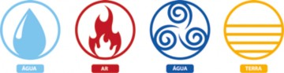

FUNDAMENTOS E METODOLOGIA DO ENSINO DE CIÊNCIAS
FUNDAMENTOS E METODOLOGIA DO
ENSINO DE CIÊNCIAS
gente criando o futuro
GRUPO SER EDUCACIONAL
CAROLINA ZANELLA DE QUEIROZ
Carolina Zanella de Queiroz
Curitiba 2022
Ficha Catalográfica elaborada pela Editora Fael. Q3f Queiroz, Carolina Zanella de
Fundamentos e metodologia do ensino de ciências / Carolina Zanella de Queiroz. – Curitiba: Fael, 2022.
208 p.
ISBN 978-65-990685-5-3
Ciências – Estudo e ensino 2. Ensino fundamental I. Título
CDD 372.307
Direitos desta edição reservados à Fael.
É proibida a reprodução total ou parcial desta obra sem autorização expressa da Fael.
FAEL
Direção Acadêmica Valmera Fatima Simoni Ciampi
Coordenação Editorial Angela Krainski Dallabona
Revisão Editora Coletânea
Projeto Gráfico Sandro Niemicz
Imagem da Capa Ser Educacional
Arte-Final Hélida Garcia Fraga
Sumário
Carta ao Aluno | 5
Falando sobre Ciências | 7
Diretrizes sobre o ensino de ciências | 23
O conhecimento científico e o
conhecimento do dia a dia | 45
Ciências Naturais na sala de aula | 59
Pensando como um cientista | 75
Aprendizagem significativa e o ensino de ciências | 91
O livro didático e suas implicações | 109
Alfabetizando cientificamente | 127
Atividades investigativas para os anos
iniciais do Ensino Fundamental | 141
Provocações para o ensino de ciências | 161
Gabarito | 185
Referências | 197
Carta ao Aluno
Prezado(a) aluno(a),
Esta obra é o resultado de uma pesquisa que propõe o trabalho com a disciplina de ciências direcionada à Educação Infantil e ao Ensino Fundamental, mais especificamente aos anos iniciais. Os profissionais da educação comprometidos, que têm como objetivo levar a sério o processo de ensino-aprendi- zagem, sentem falta de um apoio que proporcione uma relação entre o saber e o fazer.
Senti muito prazer e fiquei muito à vontade para estru- turar esta obra, por ser advinda das dificuldades enfrentadas cada vez que ia ministrar um conteúdo de ciências para os anos escolares que trabalhei.
Me formei na época do final da escola tradicional conserva- dora, e a instituição para a qual comecei trabalhar inicialmente era frequentada apenas por meninos. Assim que iniciei minha carreira de magistério, foi o primeiro ano em que incluíram meninas nas salas de aula desta instituição. Então, turmas de 40 alunos tinham apenas de 3 a 4 meninas.
Nesse período, quando comecei a assumir uma turma como
regente, entrou como proposta pedagógica a Escola Nova, em
Fundamentos e Metodologia do Ensino de Ciências
que tivemos que trabalhar muito com experiências vívidas e participativas com as crianças. A Escola Nova tinha como meta promover o autodesen- volvimento e a realização pessoal dos educandos. As atividades avalia- tivas deviam ser realizadas por meio de debates, trabalhos em grupo e o aprendizado era voltado à prática e ao estímulo do pensamento.
Após toda a revolução educacional, entra a tendência tecnicista, em que o aprendizado foca projetos elaborados sem nenhuma ligação com o contexto social no qual as pessoas estão inseridas. O professor e o aluno são respectivamente, e meramente, executor e receptor.
Desta forma, percebemos que todos nós viemos de tendências educa- cionais nas quais o professor era o detector do conhecimento e sua prática era a de transmitir seus conhecimentos.
Assim passaram os anos! Chegou o século XXI, carregado de desa- fios, mudanças, adaptações e contradições. E aí, em muitas situações, os professores que foram ensinados no modo tradicional, como eu, precisaram e precisam quebrar o paradigma e se adaptar ao que o novo contexto exige.
Surge e é colocado em prática o novo documento que direciona como deve ser a educação neste século vigente, a BNCC – Base Nacional Comum Curricular. Ela retoma alguns aspectos que já foram pactos em tendências educacionais anteriores e traz novos horizontes, como desafios ao relevante papel da escola na busca por garantir a aprendizagem de qua- lidade a todos com equidade.
O século XXI está nos mostrando uma ampliação enorme de desi- gualdade no desempenho educacional por todo o país. Pensando no desen- volvimento e no crescimento de cada criança como um processo contínuo e não fragmentado nas etapas da escola, fica ainda mais clara a necessi- dade de construir novos caminhos para garantir que a aprendizagem acon- teça, mesmo que em um tempo abreviado. O tempo de mudar é agora! Pense com carinho!
Espero que essa escrita possa lhe auxiliar na sua mudança de meto- dologia em sala de aula e lhe traga mais prazer no dar aula e resultados satisfatórios de aprendizagem.
Carolina.
– 6 –
1
Falando sobre
Ciências
Todo mundo fala em ciências: professores, TV, notícias, propa- gandas e muitos outros veículos de informação; mas o que é ciên- cias? Para começarmos a compreender, basta olharmos ao redor.
Dica
Para esclarecer a afirmação, assista ao vídeo “O Mundo sem Ciência”.
Disponível em: <https://www.youtube.com/ watch?v=9qnNUCl3_yM>. Acesso em: 18 set. 2021.
A ciência, de certa forma, é nosso conhecimento de todas as coisas que existem no universo: papéis, canetas esferográficas, o Sol brilhando através da janela, o computador, enfim, está nas reações nucleares que for- maram a imensa bola de gás que é o Sol até as menores partículas subatô- micas em um único átomo do metal nos circuitos do computador. A ciên- cia é um processo fundamentado em pesquisas e experiências, portanto é diferente de muitas outras formas de aprendizagem pela maneira como é feita, pois se baseia em experiências de ideias por meio de manifestações encontradas no mundo natural.
Graças à ciência conseguimos levar a humanidade ao espaço, projetar computadores, fabricar canetas e outras coisas. “A ciência ajuda a satisfa- zer a curiosidade natural com a qual todos nascemos: por que é que o céu é azul, como é que o leopardo obtém as suas manchas, o que é um eclipse solar? Com a ciência, podemos responder a essas perguntas, sem recorrer a explicações mágicas” (SABER CIÊNCIA…, c2013).
A ciência ajuda a termos avanços tecnológicos, a aprendermos temas importantes e úteis, como saúde, meio ambiente e riscos naturais. Sem a ciência, o mundo moderno não seria moderno. “Milhões de cientistas de todo o mundo estão a trabalhar para resolver diferentes partes do que- bra-cabeças de como o universo funciona, olhando para os seus cantos e recantos com microscópios, telescópios e outros instrumentos para des- vendar os seus segredos” (SABER CIÊNCIA…, c2013).
A ciência é empolgante, útil, instiga a curiosidade e fornece muitas informações e esclarecimentos. O século XXI está se caracterizando por rápidos avanços, principalmente na área tecnológica, que cada vez mais se insere no dia a dia em situações e desafios diversos em várias partes do planeta. Os resultados disso estão interferindo no ambiente, na sociedade e inclusive no comportamento dos indivíduos. As interferências consistem em muitos aspectos positivos e alguns negativos que serão verificados ao longo deste livro.
Percebemos que a ciência, então, passa por processos de constantes transformações no que se refere às ciências biológicas e da natureza. Mas
o que é ciência e como ela interfere e altera o ambiente e a sociedade? Para respondermos a esses questionamentos, iniciaremos nosso trabalho conceituando ciência.
O Dicionário Aurélio (2004) a define como:
Conhecimento. Saber que se adquire pela leitura e meditação; instrução, erudição, sabedoria. Conjunto organizado de conheci- mentos relativos a um determinado objeto, especialmente obtidos mediante a observação, a experiência dos fatos e um método pró- prio. Soma de conhecimentos práticos que servem a um determi- nado fim. A soma de conhecimentos humanos considerados em conjunto. Processo pelo qual o homem se relaciona com a natureza visando à dominação dela em seu próprio benefício. Atualmente este processo se configura na determinação segundo um método e na expressão em linguagem matemática de leis em que se podem ordenar os fenômenos naturais, do que resulta a possibilidade de, com rigor, classificá-los e controlá-los.
Para Souza (1995, p. 59), ciência “é uma das formas de conheci- mento que o homem produziu no transcurso de sua história, com o intuito de entender e explicar racional e objetivamente o mundo para nele poder intervir”. Como, então, conceituamos ciência? Podemos dizer que ciência é um conhecimento sistemático para explicar fundamentos da natureza com critérios que comprovem a veracidade dos fatos observados, utili- zando técnicas, instrumentos e procedimentos de observação baseados em métodos experimentais e explicações acerca do universo e de seus fenô- menos naturais, proporcionando à humanidade uma melhor maneira de se adaptar à vida na Terra (MENDES, 2009).
Como tudo começou? Para podermos responder a essa questão, vamos viajar um pouco no tempo, iniciando pela Europa, mais especifica- mente na cidade de Alexandria, que fica ao norte do Egito, tem mais de 4 milhões de habitantes atualmente e como principal porto o do Egito, um dos mais importantes do Mediterrâneo.
Figura 1.1 – Cidade de Alexandria, ao norte do Egito
Fonte: Stock.adobe.com/bogdanserban
A ciência como a conhecemos hoje teve seu início na Europa. Aos poucos, foi se estendendo a todos os continentes, até se tornar mundial. Ela tinha ligação com interesses econômicos dominantes do país. Sua prática pressupunha várias regras, entre as quais trabalho em equipe, cooperação e colaboração, divulgação ampla de resultados e uma avaliação constante por praticantes da ciência. Na Antiguidade, como em Alexandria, ocorre- ram várias influências, empréstimos e apropriações de outras sapiências que lá se desenvolviam para a produção de um novo conhecimento.
Na Idade Média, o intercâmbio aumentou e se intensificou com a invenção da imprensa. A partir do século XVII, a propagação do conhe- cimento se tornou surpreendente. As obras científicas eram lidas por um número alto de pessoas logo que eram produzidas. Os autores se rela- cionavam, tornando autorias colaborativas. Como consequência, foram fundadas academias científicas onde eram publicados os periódicos. No século XVIII, autores com Denis Diderot, Jean le Rond d’Alembert e Antoine Lavoisier se sobressaíram.
Figura 1.2 – Lavoisier
Fonte: Stock.adobe.com/Juulijs
Lavoisier foi um nobre químico francês, um dos principais cientistas que revolucionaram a química no século XVIII, influenciando a história da química e da biologia. É considerado popularmente o “pai da química moderna”. Seus descobrimentos foram oxigênio, carbono, azoto e silício.
O processo de produção colaborativa aumentou consideravelmente no século XIX, quando Justus von Liebig estabeleceu o sistema de inte- gração entre o pesquisador e o orientador, que hoje chamamos de orien- tador e orientando no ensino e na investigação (TAUCHEN et al., 2001).
Figura 1.3 – Laboratório de Liebig

Fonte: Stock.adobe.com/Archivist
Liebig revolucionou o ensino na universidade ao estabelecer o tra- balho em laboratório como formação imprescindível do estudante. Foi o primeiro a fundar um laboratório alemão de ensino. No campo da ciência, também desenvolveu trabalhos de grande importância.

Saiba mais
Justus von Liebig, químico e inventor alemão, era filho de um comerciante de anilina. Destacou-se como cientista e professor de Química e deixou um enorme legado no século XIX. Seus experimentos proporcionaram a criação de fertilizantes quími- cos, sabão, explosivos e alimentos desidratados.
Figura 1.4 – Justus von Liebig
Fonte: Stock.adobe.com/johan10  No século XX, a ciência se tornou precisa em todos os conceitos, influenciando o mundo. Mudanças significativas foram se incorporando à ciência com a revolução industrial, criando uma relação íntima, indissociá- vel e crescente entre o homem e a tecnologia. Defende-se que as revoluções científica e industrial constituíram o processo histórico mais importante de toda a história: a criação de um mundo que explora e depende da tecnologia científica, não se detendo às características individuais de cada sociedade.
No século XX, a ciência se tornou precisa em todos os conceitos, influenciando o mundo. Mudanças significativas foram se incorporando à ciência com a revolução industrial, criando uma relação íntima, indissociá- vel e crescente entre o homem e a tecnologia. Defende-se que as revoluções científica e industrial constituíram o processo histórico mais importante de toda a história: a criação de um mundo que explora e depende da tecnologia científica, não se detendo às características individuais de cada sociedade.
O resultado disso foi a criação de uma rede sem fronteiras e com culturas variáveis abrangendo todos os habitantes do planeta (globalização).
A ciência prosseguiu seu percurso com obstáculos, sem ser imparcial, para desenvolver a necessidade humana de conhecer o mundo que nos rodeia. O que resultou para a evolução historiográfica da ciência foi o sur-
gimento de uma nova história da ciência, tornando-a mais rica, com mais conteúdos e informações atraentes. Em 1957, a União Soviética lançou na órbita da Terra o satélite Sputnik, o que ajudou e ampliou o interesse dos profissionais da educação sobre o conhecimento científico, então o plane- jamento foi incluído no currículo escolar (KRASILCHIK, 1987).

Saiba mais
Figura 1.5 – Satélite Sputnik
Fonte: Stock.adobe.com/Amateur007
O Sputnik 1, lançado em 4 de outubro de 1957 pela unidade de teste de foguetes da União Soviética, orbitou a Terra por 6 meses antes de cair. Esse acontecimento foi um dos capítulos que mar- caram a Guerra Fria, uma disputa político-ideológica travada por norte-americanos e soviéticos a partir de 1947, competindo pela soberania mundial, que teve como consequência o surgimento de grandes blocos de apoio para cada um desses países. O resultado foi que norte-americanos e soviéticos disputaram o domínio em diferentes áreas. A disputa pelo poder bélico foi uma delas e os levou a investir no desenvolvimento de mísseis e de armamen- tos mais potentes, como bombas nucleares e termonucleares. A produção de mísseis e foguetes acabou também repercutindo no investimento tecnológico para a exploração espacial.
O motivo da ampliação do conhecimento científico foi a não realização completa dessa corrida espacial. Enormes quantias de dinheiro foram dispen- didas por entidades científicas de renome em educação, psicologia e diversos campos das ciências exatas e naturais. Em relação à área da Educação, os novos projetos tinham como umas das principais características a consonân- cia entre os modelos pedagógicos tradicional, tecnicista e cognitivista.
Da escola tradicional, mantiveram o conhecimento formal e previa- mente estruturado; da escola tecnicista, adotaram os rigorosos modelos de planejamentos e a ampla ideia de recursos tecnológicos educacionais (tex- tos, instruções programadas, audiovisuais, kits para experimentos laborato- riais e outros); da escola cognitivista, aderiram experimentos pelos alunos, problematização prévia do conteúdo, realização de trabalhos em grupo e organização do conteúdo, levando em conta os diferentes ritmos de raciocí- nio dos estudantes (FRACALANZA; AMARAL; GOUVEIA, 1992).
A ciência começou ter importância e ser pensada no Brasil no início do século XX, com estudos de possiblidades e contribuições sendo validados. Na verdade, a ciência no contexto educacional brasileiro deu os primeiros sinais muito sutis de inovação no início na década de 1950, com o incen- tivo da participação ativa dos educandos no processo de aprendizagem. Os primeiros passos foram não apresentar a ciência como uma coleção de conhecimentos (produtos), e sim como uma maneira peculiar de produzi-los (processos). Esse novo modelo de ensino teria como finalidade tornar os alunos capazes de compreender e modificar a sociedade em que vivem, pois até então era a visão tradicional no ensino de Ciências, com a transmissão de conhecimentos para os estudantes. Os primeiros “cientistas” tinham como estratégia cursos de férias e de assessoria aos professores da área, organiza- dos pelo Ministério de Educação e Cultura (MEC).

Dica
O artigo “Exposição: 20 cientistas brasileiras que fizeram histó- ria” contém fotos e a biografia de 20 cientistas brasileiras que
fizeram história no ensino da Ciência.
Disponível em: <https://abep.org.uk/20-cientistas-brasileiras>. Acesso em: 18 set. 2021.

Ainda em 1950, campanhas de caráter permanente foram implanta- das tanto por iniciativas independentes como por grupos organizados; como exemplo, podemos citar o Instituto Brasileiro de Educação, Ciência e Cul- tura (IBECC), cujas ações eram assessoria e orientação a professores atuan- tes no ensino de Ciências, desenvolvimento do ensino moderno das Ciências no Brasil, tentando implantar um ensino com base no método experimental (FROTA-PESSOA; GREVERTZ; SILVA, 1982; KRASILCHIK, 1987).

Destaque

O Instituto Brasileiro de Educação, Ciência e Cultura (IBBEC) foi criado a partir do Decreto Federal n. 9.355, de 13 de junho de 1946, com o intuito de qualificar a formação científica dos estudantes que ingressariam no ensino superior.

Dica
Leia os seguintes artigos:
“Ciência e educação na década de 1950: uma reflexão com a metáfora percurso”. Disponível em: <https://www.scielo. br/pdf/rbedu/n25/n25a10.pdf>. Acesso em: 18 set. 2021.
“Ciência e ensino médio no Brasil (1930- 1950)”. Dispo- nível em <http://www.scielo.br/scielo.php?script=sci_ arttext&pid=S0104-59702007000200005&lng=en&nrm= iso>. Acesso em: 18 set. 2021.

As reformulações do ensino de Ciências a partir da década de 1950 promoveram a inclusão de práticas em laboratórios, incentivando a dis-
cussão da adição de temas atuais ao currículo escolar, tornando o ensino e a aprendizagem mais interativos. Para Krasilchik (1987, p. 07):
As mudanças curriculares incluíam a substituição dos métodos expo- sitivos pelos chamados métodos ativos, dentre os quais tinha prepon- derância o laboratório. As aulas práticas deveriam propiciar atividades que motivassem e auxiliassem os alunos na compreensão de conceitos.
Até o início da década de 1960, as disciplinas científicas só eram ministradas nos últimos anos do Ginásio (3ª e 4ª séries) e as disciplinas de Física, Química e História Natural, no curso colegial. Com a Lei n. 4.024, de 20 de dezembro de 1961, Ciências passou a ser oficial no Brasil, com um fim definido e para uma pequena parcela da população, visto que a maioria não chegava ao Científico ou Clássico.

Destaque

Até 1975, no Brasil, o Ginásio constituía a fase educacional que se seguia ao Ensino Primário e antecedia o Ensino Médio, cor- respondendo aos quatro anos finais do atual Ensino Funda- mental. Em 1971, o Ginásio foi fundido com o Ensino Primário, dando origem ao ensino de 1º grau.
“No final da década de 1960, o segundo grau (ensino médio) passou a ter um caráter mais profissionalizante, pois, com a ditadura, o governo pre- tendia investir mais na formação de trabalhadores” (TAUCHEN; SILVA, 2015, p. 09). Dessa forma, o ensino de Ciências tomou outro rumo em função de interesses políticos e econômicos, pois o objetivo das ativida- des propostas passou a ser a formação do trabalhador (escola tecnicista). Com a implantação da Lei n. 5.692, de 11 de agosto de 1971, o ensino de Ciências passou a fazer parte do currículo escolar só para as séries iniciais do 1º grau (Ensino Fundamental).
Destaque

A Lei n. 5692, de 11 de agosto de 1971, fixou as diretrizes e bases para o ensino de 1º e 2º graus (Ensino Fundamental e Médio), ampliando a obrigatoriedade da escolaridade dos 7 anos aos 14 anos.
A Fundação Brasileira para o Ensino de Ciências (Funbec), em par- ceria com o IBECC, criou projetos e atividades que abrangiam oficinas de produção de materiais didáticos, como livros e guias teóricos contendo métodos básicos para serem usados no ensino de Ciências e no manuseio do laboratório, desenvolvendo um aspecto mais científico. Foram produ- zidos kits com acessórios para aulas práticas tanto para as escolas como para os professores e incluídas em suas criações estratégias de incentivo aos educandos por meio de concursos intitulados “Cientista do Amanhã” (FROTA-PESSOA; GREVERTZ; SILVA, 1982).
Frota-Pessoa, Grevertz e Silva (1982, p. 39) argumentam que os objetivos da educação se compreendiam como “um processo de cons- trução e de reorganização da experiência e que o propósito fundamental dos educadores deveria ser o de propiciar aos jovens, ambiente e estímu- los capazes de favorecer seu desenvolvimento físico e intelectual”. Isso significa que o ensino de Ciências deveria encorajar a autonomia dos alunos, tornando-os capazes de fazer experimentos, discutir e resolver problemas tendo como base o método científico. Na época, começaram as propostas para a implantação da democracia no Brasil, o que influen- ciou a desenvoltura do ensino de Ciências. O processo de construção do conhecimento científico passou a ser mais valorizado no que diz respeito a Ciência, Tecnologia e Sociedade (CTS).

Destaque

Currículos com abordagem Ciência, Tecnologia e Sociedade (CTS) apresentam assuntos científicos em um contexto social e visam formar o educando para o exercício da cidadania (SAN- TOS; MORTIMER, 2002).
Ainda em 1980, visando à qualificação de ciências, o MEC lançou dois programas: “Integração da Universidade com o ensino de 1º grau” e a “Educação para a Ciência”. O primeiro “procurava possibilitar a emergên- cia de novos grupos ligados às instituições de ensino superior e aos siste- mas estaduais e municipais de ensino, com a participação direta dos pro- fessores do ensino fundamental” (SELLES; MARANDINO; FERREIRA, 2009, p. 37). O segundo compreendia três objetivos básicos:
melhorar a qualidade do ensino de Ciências nos diferentes níveis de ensino nas áreas da química, física e biologia e matemática, dando-lhes um caráter eminentemente experimental; estimu- lar, na universidade, a pesquisa científica na área do ensino de Ciências com a finalidade de gerar uma melhoria qualitativa do mesmo, especialmente em nível de ensino fundamental e médio, desenvolver atividades não formais de ensino, de modo a provocar uma valorização maior da ciência pela sociedade e despertar nos jovens um maior interesse pelo estudo de Ciên- cias. (SELLES; MARANDINO; FERREIRA, 2009, p. 37-38)
Na década de 1990, dois fatos significativos para o ensino de Ciên-
cias se sobressaíram:
implementação da Lei n. 9.394, de 20 de dezembro de 1996 – Lei de Diretrizes e Bases da Educação Nacional (LDB);
publicação dos Parâmetros Curriculares Nacionais (PCN) Ciên- cias da Natureza (BRASIL, 1997).
O objetivo maior da LDB foi promover uma reforma no ensino bra- sileiro, lançando diretrizes amplas que fossem base para a construção de um currículo no qual o conhecimento tivesse mais significado para os educandos e proporcionasse aprendizagens para trabalhar e desenvol- ver competências. As diretrizes foram tão abundantes que flexibiliza- ram resoluções próprias de estados e municípios. As especificidades e as características de cada estado e cada município foram acatadas, respei- tadas e dignificadas (MORAES; GOMES, 2007).
Quanto aos PCNs, podemos dizer que foram originados para direcio- nar e embasar os sistemas de ensino e os professores, sendo norteadores curriculares que incitaram a comunicação entre alunos e professores, que deveriam agir como mediadores e acompanhar permanentemente ativi- dades práticas e pesquisas dos alunos, redirecionando-os quando neces- sário. Já as atividades práticas não se restringiam apenas a observação e resultados esperados, mas incluíam pesquisa e busca de novos resultados. Deveria, o professor, estimular a criatividade e fomentar a curiosidade tendo como produto o envolvimento dos alunos.
Em Ciências Naturais são procedimentos fundamentais aqueles que permitem a investigação, a comunicação e o debate de fatos e ideias. A observação, a experimentação, a comparação, o estabe-
lecimento de relações entre fatos ou fenômenos e ideias, a leitura e a escrita de textos informativos, a organização de informações por meio de desenhos, tabelas, gráficos, esquemas e textos, a pro- posição de suposições, o confronto entre suposições e entre elas e os dados obtidos pela investigação, a proposição e a solução de problemas, são diferentes procedimentos que possibilitam a apren- dizagem. (BRASIL, 1997, p. 29)
Para Kindel (2012, p. 44), é necessário resgatar o bojo do ensino de Ciências, permitindo “ao aluno associar os conhecimentos de sala de aula à sua vida e às suas explicações sobre o mundo natural”. Os conteúdos de ciências estão vinculados ao mundo das crianças, aos fenômenos e fatos que englobam animais, plantas, corpo humano e outros, que instigam a curiosidade, levando a muitas perguntas e explicações.
Quando olhamos para o ensino de Ciências a partir desse breve res- gate histórico, podemos perceber que os currículos escolares, em sua maioria, foram desenvolvidos por indivíduos que não viveram o dia a dia na escola. As reformas são inevitáveis, mas podem se tornar dispersas e desconexas, pois estão ligadas a colaborações externas à realidade brasi- leira, segundo Frota-Pessoa, Grevertz e Silva (1982). Krasilchik (1987) explica que as reformas costumam caminhar junto ao momento histórico e político e nem sempre os investimentos foram e estão de acordo com as necessidades da educação e do contexto de professores e alunos. Mesmo assim, é indispensável que os planejamentos didáticos sejam organiza- dos com o objetivo de integrar os diferentes saberes e relacioná-los com questões científicas, tecnológicas, ambientais e sociais, pois não pode-se entendê-los de forma isolada.
Estudar e trabalhar com ciência é fascinante, pois dá respostas para todas as coisas que nos rodeiam, de questões sobre o universo, amplas e complexas, até pequenas e significativas questões que estão próximas a nós, como o papel que usamos, a borracha com que apagamos, a água que bebemos, o sal que encontramos na água do mar, o cloro da pis- cina, as plantas que fornecem oxigênio e muito mais. A ciência surgiu na Europa, em Alexandria, no Egito, com observações e leituras de escritos.
No século XVII, foram intensificadas as produções científicas, sendo fundadas academias científicas e dando o surgimento aos periódicos. Apareceram, assim, os nomes dos primeiros cientistas. No século XX, a ciência ficou em evidência, sendo responsável por tal fato o primeiro satélite lançado pela União Soviética, em 1957. Na década de 1950, o Brasil intensificou e validou o estudo da ciência, visando ao educando como participativo no processo de aprendizagem. Para isso, foi criado o Instituto Brasileiro de Educação, Ciência e Cultura (IBECC), tendo como finalidade assessorar e orientar professores atuantes no ensino de Ciências da Natureza pela Base Nacional Comum Curricular (BNCC) para qualificar a formação científica dos estudantes que ingressariam no ensino superior. Na mesma época foi iniciado o ensino de Ciências em laboratório. Em 1960, o ensino passou ser tecnicista, com o objetivo de produzir mão de obra qualificada. Em seguida, voltou a ser valorizado com novas leis implantadas, sendo as principais a Lei de Diretrizes e Bases (LDB) e os Parâmetros Curriculares Nacional (PCN).
Sistematize, com suas palavras e em um pequeno parágrafo, o
que é ciência:
Descreva o principal acontecimento da história da ciência antes de chegar ao Brasil em:
Alexandria (Egito):
Idade Média:
Século XVII:
Século XVIII:
Século XX:
Continue a história, sistematizando e não ultrapassando de 15 linhas:
Título: O início da Ciência no Brasil
A ciência no Brasil teve seu auge no início do século XX, mais precisamente da década de 1950. Iniciou com projetos de fazer que o educando se tornasse participativo no processo da constru- ção do conhecimento, e não apenas…
Elenque alguns fatos e acontecimentos importantes que valori- zaram o estudo das Ciências no Brasil e no mundo:
2
Diretrizes sobre o ensino de ciências
O professor que atua nas séries iniciais do Ensino Funda- mental tem em suas mãos uma grande responsabilidade, pois é encarregado pelo ensino de todas as áreas do conhecimento. Sendo assim, é importantíssimo que seu planejamento se cons- titua de diversas metodologias de ensino, com experiências em algumas áreas, visando atrair o interesse dos alunos e potenciali- zar o aprendizado.
Especialistas colocam que as atividades práticas precisam ser feitas a partir de aspectos da vida dos alunos –com pro- blemas reais, do cotidiano, dando oportunidade às crianças de realizar suas ideias e hipóteses sobre todos os problemas que estão sendo questionados.

Para auxiliar e direcionar o planejamento do professor, da escola e da distinta área do conhecimento, o Governo Federal, em 1996, criou as Diretrizes Curriculares Nacionais, junto com os Parâmetros Curriculares Nacionais. E, em 2018, com bases nas duas diretrizes, foi criada a Base Nacional de Comum Curricular (BNCC).
Para aprofundarmos um pouco mais sobre esses direcionamentos legais, neste capítulo iremos comentar sobre cada um deles, enfatizando o ensino de ciências.
As DCNs, assim chamadas, tiveram origem na Lei de Diretrizes e Bases da Educação (LDB), de 1996, assinalando a todo o Brasil “estabe- lecer, em colaboração com os Estados, Distrito Federal e os Municípios, competências e diretrizes para a educação infantil, o ensino fundamental e o ensino médio, que nortearão os currículos e os seus conteúdos mínimos, de modo a assegurar a formação básica comum” (MENEZES, 2001, p. 1)
São regulamentos obrigatórios para a Educação Básica que condu- zem o planejamento curricular das escolas e dos sistemas de ensino, discu- tidas, programadas e determinadas pelo Conselho Nacional de Educação (CNE). Orientam princípios, fundamentos e procedimentos para a Edu- cação Básica nas escolas, no que diz respeito à organização, articulação, desenvolvimento e avaliação de suas propostas pedagógicas. Seu objetivo é manter a autonomia da escola e sua proposta pedagógica, incitando-a a montar seu currículo, entrelaçando, dentro das áreas de conhecimento, os conteúdos que proporcionem a formação de competências como: visão holística, atuação inovadora e empreendedora, e criatividade na hora de resolver problemas.
Dessa forma, a escola deve trabalhar os conteúdos de acordo com os contextos aos quais está inserida, considerando o tipo de pessoas que atende, a região em que pertence e outros aspectos locais relevantes.
As DCNs se diferem dos Parâmetros Curriculares Nacionais (PCNs). Enquanto as DCNs são leis, dando as metas e objetivos a serem buscados em cada curso, os PCNs são apenas referências curriculares.
Menezes (2001) afirma que
De acordo com o CNE, as diretrizes curriculares contemplam elementos de fundamentação essencial em cada área do conheci- mento, campo do saber ou profissão, visando promover no estu- dante a capacidade de desenvolvimento intelectual e profissional autônomo e permanente. Dessa forma, foram estabelecidas:

Diretrizes Curriculares Nacionais para a Educação Infantil; Diretrizes Curriculares Nacionais para o Ensino Fundamental; Diretrizes Curriculares Nacionais para o Ensino Médio; Diretrizes Curriculares Nacionais para Formação de Professores.
Saiba mais

Para aprofundar e conhecer as DCNs, entre no site do portal. mec.gov.br/ Será encontrado: Interpretação da LDB; Arranjo de Desenvolvimento da Educação (ADE); Base Nacional Comum Curricular (BNCC); Base Nacional Comum Curricular - Ensino Médio (BNCC-EM); Educação Básica; Educação Infantil; Ensino de Música; Ensino Fundamental; Ensino Fundamental de Nove Anos – Ampliação; Ensino Médio; Ensino Médio, Modalidade Normal; Educação das Relações Étnico-Raciais; Educação de Jovens e Adultos; Educação do Campo; Educação Escolar para Populações em Situação de Itinerância; Educação Especial; Edu- cação Indígena; Educação nas Prisões; Educação Plurilíngue; Educação Profissional de Nível Técnico; Educação Quilombola; Estágio na Educação Básica; EJA e Ensino Médio - Modalidade a Distância; Medidas Socioeducativas; Refugiados.
Dentro das Diretrizes Curriculares Nacionais para o Ensino Funda- mental, encontramos as diretrizes específicas para o ensino de ciências.
Atualmente as sociedades enfrentam diversos problemas como: crises de energia e de população, variações climáticas, ética e outros. Questões
essas que envolvem a biotecnologia, exigindo um conhecimento científico para serem averiguadas de maneira coerente e racional.
Desta forma, investir no estudo e na literatura científica é impor- tante esse alfabetizar, pois, “esta alfabetização científica poderá auxiliar significativamente o processo de aquisição do código escrito, propiciando condições para que os alunos possam ampliar a sua cultura” (LORENZETTI; DELIZOICOV, 2001, p.3-4).
Muitos especialistas afirmam que o ensino de ciências nas escolas não está acompanhando o século XXI, pois não estimula a criança e o jovem à pesquisa, portanto não estimula a invenção (GOULART, 2011).
Borges (2002), ressalta que o ensino tradicional de ciências, desde a educação infantil ao ensino superior, tem se apresentado pouco eficaz, seja na visão dos estudantes e professores, como também da própria sociedade.
Para a UNESCO (2014),
Esta situação não é privilégio apenas das ciências, mas igualmente de outras áreas do conhecimento, como indicam os resultados de avaliações nacionais e internacionais. A escola tem sido criticada pela baixa qualidade de seu ensino, por não cumprir adequada- mente seu papel de formação das crianças e adolescentes, e pelo fato de que o conhecimento que os estudantes exibem ao deixar a escola é fragmentado e de aplicação limitada. (5 Contrato no. SA-3487/2014 - Controle UNESCO 559980 – Produto lI)
E continua enfatizando que,
os professores de ciências, tanto no ensino fundamental como no ensino médio, em geral acreditam que a melhoria do ensino passa pela introdução de aulas práticas no currículo. Curiosamente, várias das escolas dispõem de alguns equipamentos e laboratórios que, no entanto, por várias razões, nunca são utilizados, dentre às quais cabe mencionar o fato de não existirem atividades já prepara- das para o uso do professor; falta de recursos para compra de com- ponentes e materiais de reposição; falta de tempo do professor para planejar a realização de atividades como parte do seu programa de ensino; laboratório fechado e sem manutenção. São basicamente as mesmas razões pelas quais os professores raramente utilizam os computadores colocados nas escolas. Muitos professores até se dispõem a enfrentar isso, improvisando aulas práticas e demons- trações com materiais caseiros, mas acabam se cansando dessa tarefa inglória, especialmente em vista dos parcos resultados que
alcançam. É um equívoco corriqueiro confundir atividades práticas com a necessidade de um ambiente com equipamentos especiais para a realização de trabalhos experimentais, uma vez que podem ser desenvolvidas em qualquer sala de aula, sem a necessidade de instrumentos ou aparelhos sofisticados (p. 224).
As atividades práticas experimentais não envolvem indispensavelmente um laboratório escolar, mas envolvimento e comprometimento na busca de respostas/soluções articuladas que podem ser apenas de pensamento. Reque- rem também planejamento e clareza nos objetivos das atividades, de uma forma criativa e eficiente e com propósitos bem definidos (BORGES, 2002)
Borges (2002, p. 298) acrescenta ainda que “é necessário que procuremos criar oportunidades para que o ensino experimental e o ensino teórico se efetuem em concordância, permitindo ao estudante integrar conhecimento prático e conhecimento teórico (…) para tornar a aprendizagem mais interessante, motivadora e acessível aos estudantes”.
O Plano Nacional de Educação (PNE), Lei Nº13.005, de junho de 2014, expõe estratégias para aperfeiçoar constantemente os instrumentos de avaliação da qualidade do Ensino Fundamental e Médio. Tem como objetivo a inclusão da avaliação do ensino de Ciências nos exames aplica- dos nos anos finais do Ensino Fundamental, garantindo a universalização ao sistema de avaliação da Educação Básica, assim como apoiar o uso dos resultados das avaliações nacionais pelas escolas e redes de ensino, para a melhoria de seus processos e práticas pedagógicas.
Com a entrada das ciências na lista das disciplinas incluídas pelo sis- tema de avaliação nacional, é importante a elaboração de um currículo moderno, cujas práticas de ensino e aprendizagem contenham conteúdos atuais, priorizando metodologias que mantenham a resolução de proble- mas, em que a exploração, a experimentação e o uso do conhecimento sirvam de base para uma futura sistematização. É necessário acompanhar as mudanças ocorridas na sociedade, na busca de uma formação contem- porânea e direcionada para o mundo produtivo, para a empregabilidade e para formação pessoal e cultural em qualquer tipo de atividade. Assim, um currículo dinâmico que considere a atualidade científica e tecnológica; intensamente ativo e diversificado, apresentando tendências que visem a interdisciplinaridade, contextualização sem esquecer o lado socioambiental.
As DCNs sugerem para ser trabalhado no:
x Ensino Fundamental – Anos Iniciais
Ser humano e saúde;
Terra e universo;
Vida e ambiente;
Tecnologia, sociedade e cidadania;
Recursos naturais e sustentabilidade.
x Ensino Fundamental – Anos Finais
Ser humano, saúde e sexualidade;
Terra e universo;
Vida e ambiente;
Tecnologia, ética e sociedade;
Recursos naturais e sustentabilidade.
As DCNs trazem propostas de atividades que devem ser trabalhadas no ensino fundamental. Pela extensão e pelas características diferenciadas pelas idades cronológicas neste período, as diretrizes dividem as propostas em dois momentos. No primeiro momento para os anos iniciais do ensino fundamental e no segundo momento para os anos finais.

Dica
No portal.mec.gov.br, a partir da página 24, encontram-se as propostas de atividades para o Ensino Fundamental I – Anos Iniciais. E a partir da página 31, propostas de atividades para o Ensino Fundamental II – Anos Finais.
Link para acesso:
http://portal.mec.gov.br/index.php?option=com_ docman&view=download&alias=26181-produto2-proposta-
-elaboracao-diretrizes-curriculares-nacionais-ensino-ciencias-
-pdf&Itemid=30192

Os PCNs – Parâmetros Curriculares Nacionais – são diretrizes organizadas pelo Governo Federal com a finalidade de orientar os educadores regulamentando alguns princípios fundamentais referentes a cada disciplina. Esses parâmetros abrangem tanto a rede pública quanto a rede privada de ensino, conforme o nível de escolaridade dos alunos. Têm como propósito garantir aos educandos o direito de desfrutar dos conheci- mentos necessários para o exercício da cidadania. Embora não sejam obri- gatórios, os PCNs servem como direção para professores, coordenadores e diretores, respeitando as particularidades de cada local.
Esse documento foi construído para possibilitar aos profissionais da educação começarem a sua leitura por diferentes partes, sem seguir uma ordem. No entanto, com o tempo, os educadores devem conhecê-los, na íntegra, para poder compreendê-los e se apropriar de sua proposta.
O conjunto das proposições aqui expressas responde à necessidade de referenciais a partidos quais o sistema educacional do País se organize, a fim de garantir que, respeitadas as diversidades cultu- rais, regionais, étnicas, religiosas e políticas que atravessam uma sociedade múltipla, estratificada e complexa, a educação possa atuar, decisivamente, no processo de construção da cidadania, tendo como meta o ideal de uma crescente igualdade de direitos entre os cidadãos, baseado nos princípios democráticos. Essa igualdade implica necessariamente o acesso à totalidade dos bens públicos, entre os quais o conjunto dos conhecimentos socialmente relevantes. (BRASIL, 1997, p.13)
Os PCNs buscam uma qualidade maior na educação brasileira, sem resolver todos os problemas que afetam a qualidade do ensino e da aprendizagem no País.
A busca da qualidade impõe a necessidade de investimentos em diferentes frentes, como a formação inicial e continuada de pro- fessores, uma política de salários dignos, um plano de carreira, a qualidade do livro didático, de recursos televisivos e de multi- mídia, a disponibilidade de materiais didáticos. Mas esta qualifi- cação almejada implica colocar também, no centro do debate, as atividades escolares de ensino e aprendizagem e a questão curri- cular como de inegável importância para a política educacional da nação brasileira. (BRASIL, 1997)
Segundo a própria PCN, sua elaboração iniciou a partir de estudos de propostas curriculares dos Estados e Municípios brasileiros, “da aná- lise realizada pela Fundação Carlos Chagas sobre os currículos oficiais e do contato com informações relativas a experiências de outros países.” (BRASIL, 1997, p. 15). E ainda pelas análises de contribuições do Plano Decenal de Educação, de pesquisas nacionais e internacionais, dos dados estatísticos sobre o desempenho dos alunos do ensino fundamental, e sobre as experiências de sala de aula apresentadas em seminários, encon- tros e publicações (BRASIL, 1997).
Dando sequência,
Formulou-se, então, uma proposta inicial que, apresentada em ver- são preliminar, passou por um processo de discussão em âmbito nacional, em 1995 e 1996, do qual participaram docentes de uni- versidades públicas e particulares, técnicos de secretarias estaduais e municipais de educação, de instituições representativas de dife- rentes áreas de conhecimento, especialistas e educadores. Desses interlocutores foram recebidos aproximadamente setecentos pare- ceres sobre a proposta inicial, que serviram de referência para a sua reelaboração (BRASIL, 1997).
E assim, houve outros encontros regionais organizados pelas delega- cias do MEC, contando com técnicos, supervisores de educação e profes- sores de todas as áreas, membros de conselhos estaduais, representantes de sindicatos, e os resultados debatidos e analisados nesses encontros tam- bém favoreceram a reelaboração do documento.
Quase por unanimidade, os pareceres argumentavam a urgência de uma proposta educacional esclarecedora e específica.
Ainda estão sendo elaborados programas de formação de professo- res, vinculados aos Parâmetros Curriculares Nacionais.
Concluindo, os PCNs nada mais são do que uma referência para a transformação de objetivos, conteúdos e didática do ensino. Devem fazer parte do cotidiano do educador em sua prática pedagógica, princi- palmente norteando a elaboração de seu planejamento sobre seu trabalho em sala de aula.
Para representar uma função ampla e diversificada dos campos de conhecimento e de cultura da atualidade, existem as diferentes áreas com conteúdos selecionados para cada uma delas e o tratamento transversal de questões sociais. Tudo isso contribui para a aquisição de capacidades.
O tratamento da área e de seus conteúdos integra uma série de conhecimentos de diferentes disciplinas, que contribuem para a construção de instrumentos de compreensão e intervenção na rea- lidade em que vivem os alunos. A concepção da área evidencia a natureza dos conteúdos tratados, definindo claramente o corpo de conhecimentos e o objeto de aprendizagem, favorecendo aos alunos a construção de representações sobre o que estudam. Essa caracterização da área é importante também para que os professo- res possam se situar dentro de um conjunto definido e conceituali- zado de conhecimentos que pretendam que seus alunos aprendam, condição necessária para proceder a encaminhamentos que auxi- liem as aprendizagens com sucesso (BRASIL, 1997, p. 44).
Isso significa que um conteúdo deve perpassar por várias disciplinas, possibilitando ao educando conhecer as visões de acordo com as especifi- cidades de cada uma. Assim,
Na apresentação de cada área são abordados os seguintes aspectos: descrição da problemática específica da área por meio de um breve histórico no contexto educacional brasileiro; justificativa de sua presença no ensino fundamental; fundamentação epistemológica da área; sua relevância na sociedade atual; fundamentação psico- pedagógica da proposta de ensino e aprendizagem da área; crité- rios para organização e seleção de conteúdos e objetivos gerais da
área para o ensino fundamental. (BRASIL, 1997)
Com isso, a estrutura dos PCNs determina os objetivos e conteúdos, critérios de avaliação, orientações para avaliação e orientações didáticas.
As problemáticas sociais são incluídas na proposta educacional dos Parâmetros Curriculares Nacionais como Temas Transversais. Não são novas áreas, mas uma série de temas que permeiam a con- cepção, os objetivos, os conteúdos e as orientações didáticas de cada uma, ao longo da escolaridade obrigatória. Isso significa, uma integração das áreas e um compromisso das relações interpessoais
e sociais escolares no que diz respeito aos temas, “a fim de que haja uma coerência entre os valores experimentados na vivência que a escola propicia aos alunos e o contato intelectual com tais valores” (BRASIL, 1997, p.45).
Esse documento é específico para cada área e tema, formado por dez pequenos livros que definem posicionamento, justificativa e conceituali- zação. São eles:
introdução;
língua portuguesa;
matemática;
ciências naturais;
história e geografia;
arte;
educação física;
apresentação dos temas transversais e ética;
meio ambiente e saúde;
pluralidade, cultura e orientação sexual.
Sobre a avaliação, sua perspectiva vai além de uma visão tradicio- nal, “que focaliza o controle externo do aluno mediante notas ou conceitos, para ser compreendida como parte integrante e intrínseca ao processo educacional”. (p.55) Ela não deve se restringir a uma análise sobre sucessos ou fracassos do aluno. Deve ser envolvida em ações que tenha como função de apoiar e orientar a intervenção pedagógica, sendo contínua, por meio da interpretação qualitativa do conhecimento construído pelo aluno. Deve possibilitar o quanto ele aproxima ou não da expectativa de aprendizagem que o profes- sor tem da escolaridade. Logo,” a avaliação das aprendizagens só pode acontecer se forem relacionadas com as oportunidades ofereci- das, isto é, analisando a adequação das situações didáticas propostas aos conhecimentos prévios dos alunos e aos desafios que estão em condições de enfrentar” (BRASIL, 1997, p. 55).
Para o aluno, a avaliação serve para uma tomada de consciência do que conseguiu aprender e apreender, quais as dificuldades que encontrou no processo, para reajustar-se ou procurar ajuda.
Uma avaliação também serve para o educador, no sentindo de refletir continuamente sua prática, com o objetivo de rever, criar e ajustar, para que se efetive um aprendizado individual ou grupal por parte dos alunos. Serve para uma tomada de consciência no que conseguiu aprender e apreender. E para a escola, possibilita “definir prioridades e localizar quais aspectos das ações educacionais demandam maior apoio” (BRASIL, 1997).
Os Critérios de Avaliação por Área e por Ciclo, definidos nos Parâ-
metros Curriculares Nacionais,
ainda que indiquem o tipo e o grau de aprendizagem que se espera que os alunos tenham realizado a respeito dos diferentes conteúdos, apresentam formulação suficientemente ampla para ser referência para as adaptações necessárias em cada escola, de modo a poderem se constituir critérios reais para a avaliação e, portanto, contribuírem para efetivar a concretização das intenções educativas no decorrer do trabalho nos ciclos. Os critérios de avaliação devem permitir concretizações diversas por meio de diferentes indicadores; assim, além do enunciado que os define, deverá haver um breve comentá- rio explicativo que contribua para a identificação de indicadores nas produções a serem avaliadas, facilitando a interpretação e a flexibi- lização desses critérios, em função das características do aluno e dos objetivos e conteúdos definidos. (p. 58)
Diante das afirmações anteriores, trabalharemos a partir de agora com os PCNs que são baseados nos DCNs e temas transversais; e com a BNCC, para compreender o que está proposto para o ensino de ciências atualmente.
Para a formação de um indivíduo crítico e cidadão, é necessária sua inserção em uma sociedade que valorize o conhecimento científico e tec- nológico. Assim, as ciências naturais contribuem muito para a compreen- são do mundo e suas transformações, posicionando o homem como sujeito integrante e participativo do Universo.
Os conteúdos referidos ao estudo das ciências naturais são apresentados em quatro blocos temáticos para o ensino fundamental: ambiente; ser humano e saúde; recursos tecnológicos e terra e universo. São incluídos também os temas transversais, sugeridos para todas as áreas do conhecimento.
O documento alega que em uma “sociedade em que se convive com a supervalorização do conhecimento científico e com a crescente interven- ção da tecnologia no dia a dia, não é possível pensar na formação de um cidadão à margem do saber científico” (BRASIL, 1997, p. 21).
Para a compreensão de mundo e de suas transformações, é impres- cindível que o trabalho inicie nos primeiros anos do Ensino Fundamental, pois deve-se usufruir da curiosidade natural das crianças de acordo com a faixa etária correspondente a esse período escolar.
Toda criança começa o processo de aprendizagem muito antes do período escolar. Elas são curiosas, questionadoras, querem explicações sobre que veem e ouvem, sobre como funcionam os equipamentos, como se produz, para que serve etc. São os célebres “porquês”. Todas as respos- tas podem, hoje, ser encontradas na internet, na mídia ou até mesmo em casa. Sendo assim, o ambiente escolar, a sala de aula, principalmente, deve ser um lugar onde a criança possa falar sobre suas pesquisas e interpreta- ções. Desta forma, “além de constituírem em importante fator no processo de aprendizagem, poderão ser ampliadas, transformadas e sistematizadas com a mediação do professor” (BRASIL, 1997, p. 45).

Teoria à prática
urgência social;
abrangência nacional;
possibilidade de aprendizagem no Ensino Fundamental;
favorecimento da compreensão da realidade e partici- pação social.

Em ciências naturais, os temas transversais não devem ser abor- dados apenas em situações extraordinárias, pois precisam ter um significado dentro do processo educacional. Devem ser tra- balhados em diferentes contextos, procurando aumentar a sua complexidade e articulação com os conteúdos, destacando a necessidade de dar sentido próprio aos conceitos científicos e sendo trabalhados nas escolas como forma de problemas pre- sentes no dia a dia do educando (MENDES, 2010, p. 27).
Nos anos iniciais, as atividades devem ser planejadas de acordo com a faixa etária respectiva para cada ano. Assim, deve-se trabalhar visando o desenvolvimento da linguagem oral, escrita e narrativa, como nomear seres vivos e suas partes – aproximação da noção de ambiente, tendo como resultado as interações entre seus componentes: seres vivos, solo, ar, água, luz e calor, corpo humano, suas transformações – seu desenvolvimento – a Terra e o Universo, recursos tecnológicos e a transformação da natureza com a utilização dos recursos naturais.
Voltando aos quatro eixos temáticos que os PCNs propõem para o Ensino Fundamental, os conteúdos foram organizados não como assuntos isolados, mas sim como assuntos que possam fazer relações entre eles, prestigiando aqueles em que as comunidades acham ser importantes.
Os três primeiros eixos temáticos – ambiente; ser humano e saúde e recursos tecnológicos – devem ser desenvolvidos ao longo de todo o Ensino Fundamental. O eixo Terra e Universo deve ser desenvolvido ape- nas a partir do 6º ano.
Cada bloco apresenta conceitos, procedimentos e atitudes centrais a serem trabalhados, com o objetivo de haver compreensão sobre o tema referido. Há sugestões de conteúdos para a possibilidade de serem articu- lados entre os diferentes blocos.
No volume referente às ciências naturais é feita a seguinte consideração:
Para o ensino de Ciências naturais é necessária a construção de uma estrutura geral da área que favoreça a aprendizagem significativa do conhecimento historicamente acumulado e a formação de uma con- cepção de Ciência, suas relações com a Tecnologia e com a Socie- dade. Portanto, é necessário considerar estruturas de conhecimento envolvidas nos processos de ensino e aprendizagem – do aluno, do professor, da Ciência (PCN, 1997, p. 27).
Aponta também, no capítulo “Aprender e ensinar Ciências Naturais
no Ensino Fundamental” (p.27-28), o papel do professor e do aluno:
Dizer que o aluno é o sujeito de sua aprendizagem significa afirmar que é dele o movimento de ressignificar o mundo, isto é, de cons- truir explicações norteadas pelo conhecimento científico.
[...]
Ao professor cabe selecionar, organizar, problematizar conteúdos de modo a promover um avanço no desenvolvimento intelectual do aluno, na sua construção como ser social.
Enfim, cabe ao professor um direcionar para trabalhar o conheci- mento científico, ressignificando o mundo, ou seja, buscando explicações norteadas pela ciência, exercitando assim, uma autonomia no pensar e agir dos alunos, levando à formação de atitudes e valores humanos.
É necessária a apresentação de ideias gerais por parte do professor, para poder haver uma investigação. Um assunto novo para o aluno deve ser instigante, com o intuito de despertar dúvidas, questionamentos, curio- sidade (investigação), isto é, promover um confronto de ideias, gerando a busca por mais informações.
Concluindo, o objetivo maior dos PCNs, é despertar um ensino de ciências estimulante para a formação de indivíduos e cidadãos “que não só compreendam o mundo, mas também as intervenções humanas e suas possíveis consequências, com cuidado de integrar os saberes das Ciências Naturais e das Ciências Humanas” (TAUCHEN; SILVA, 2015, p. 13).
Esses mesmos autores fazem ainda outra consideração, com base
nos PCNs,
Quando nos referimos aos anos iniciais do Ensino Fundamental, ainda precisamos atentar ao uso de termos técnicos e de transpo- sição dos conteúdos de acordo com a escolaridade e do desenvol- vimento da capacidade intelectual do estudante. Além do mais, é recomendado que se propicie situações de aprendizagem que dia- loguem com as diversas formas de explicar e conhecer o mundo, passando pelo senso comum, conhecimento científico e demais formas de pensar sobre os fenômenos naturais e situações cotidia- nas (TAUCHEN; SILVA, 2015, p. 13).
Assim, é importante incitarmos situações de aprendizagem que esti- mulem o diálogo, mas não esquecendo de aceitar e reforçar as diversas expressividades dos alunos, com o propósito de desenvolver a autonomia e a autoria. Para isso, é necessário destacar a importância da ludicidade e da criatividade.
Diante da colocação e o estudo sobre os PCNs ao que se refere ao trabalho com ciências, seguiremos para a BNCC (Base Nacional Comum Curricular).
Primeiramente, vamos entender o que é a BNCC para depois partir- mos para o específico. O que ela propõe para o ensino de ciências para os anos iniciais?
A Base Nacional Comum Curricular (BNCC) é uma ferramenta que regulamenta e define o básico que proporciona o progresso nas aprendiza- gens essenciais que todos os alunos devem desenvolver ao longo das etapas e modalidades da Educação Básica. Ela afirma que a base é a educação.
Conforme definido na Lei de Diretrizes e Bases da Educação Nacional (LDB, Lei nº 9.394/1996), a Base deve nortear os cur- rículos dos sistemas e redes de ensino das Unidades Federativas, como também as propostas pedagógicas de todas as escolas públi- cas e privadas de Educação Infantil, Ensino Fundamental e Ensino Médio, em todo o Brasil.
A Base estabelece conhecimentos, competências e habilidades que se espera que todos os estudantes desenvolvam ao longo da escola- ridade básica. Orientada pelos princípios éticos, políticos e estéti- cos traçados pelas Diretrizes Curriculares Nacionais da Educação Básica, a Base soma-se aos propósitos que direcionam a educação brasileira para a formação humana integral e para a construção de uma sociedade justa, democrática e inclusiva. (BRASIL, 2018).
No decorrer da Educação Básica, as aprendizagens essenciais devem garantir o desenvolvimento de dez competências gerais que fortaleçam os direitos de aprendizagem e desenvolvimento, no contexto pedagógico.
Na BNCC, “competência é definida como a mobilização de conhe- cimentos (conceitos e procedimentos), habilidades (práticas, cognitivas e socioemocionais), atitudes e valores para resolver demandas complexas da vida cotidiana, do pleno exercício da cidadania e do mundo do traba- lho” (BRASIL, 2018, p. 8).

Saiba mais

As dez Competências Gerais da Educação Básica encontram-se no site: http://basenacionalcomum.mec.gov.br/images/BNCC_ EI_EF_110518_versaofinal_site.pdf, p. 9.
O século XXI está exigindo da sociedade vislumbrar a inovação e a inclusão nas demandas do processo educativo: “o que aprender, para que aprender, como ensinar, como promover redes de aprendizagem colabo- rativa e como avaliar o aprendizado”. (BRASIL, 2018, p.14) Atualmente, [...] “reconhecer-se em seu contexto histórico e cultural, comunicar-se, ser criativo, analítico-crítico, participativo, aberto ao novo, colaborativo, resiliente, produtivo e responsável requer muito mais do que o acúmulo de informações” (BRASIL, 2018, p. 14) Ele impõe
o desenvolvimento de competências para aprender a aprender, saber lidar com a informação cada vez mais disponível, atuar com discerni- mento e responsabilidade nos contextos das culturas digitais, aplicar conhecimentos para resolver problemas, ter autonomia para tomar decisões, ser proativo para identificar os dados de uma situação e bus- car soluções, conviver e aprender com as diferenças e as diversidades.
Assim, a BNCC explicita o compromisso com a educação integral. Assente a Educação Básica como formadora para o desenvolvimento inte- gral, isto é, abarca a multiplicidade, a diversidade e não a linearidade do desenvolvimento, transpassando visões reducionistas que privilegiam ou a dimensão intelectual (cognitiva) ou a dimensão afetiva. Então, assume “uma visão plural, singular e integral da criança, do adolescente, do jovem e do adulto – considerando-os como sujeitos de aprendizagem – e promove uma educação voltada ao seu acolhimento, reconhecimento e desenvolvi- mento pleno, nas suas singularidades e diversidades” (BRASIL, 2018).
ETAPAS
EDUCAÇÃO INFANTIL ENSINO FUNDAMENTAL ENSINO MÉDIO DIREITOS DE APRENDIZAGEM
E DESENVOLVIMENTO
CAMPOS DE EXPERIÊNCIAS
ÁREAS DO ÁREAS DO
CONHECIMENTO CONHECIMENTO
COMPETÊNCIAS COMPETÊNCIAS ESPECÍFICAS ESPECÍFICAS
DE ÁREA DE ÁREA
Bebês Crianças bem Crianças (0-1 a 6m) pequenas pequenas
(1a7m 3 a11m) (4a-5a11m)
COMPETÊNCIAS
ESPECÍFICAS DE COMPONENTE
Objetivos de aprendizagem
e desenvolvimento
Anos Iniciais
Anos Finais
Objetos de conhecimento
Unidades temáticas
Habilidades
Língua Portuguesa
Desde modo, a BNCC está assim estruturada:
Matemática
Fonte: elaborado pela autora com base na BNCC, p. 24.
Toda a explicação das terminologias utilizadas pela BNCC encontra-se a partir da página 25 do documento.
Vivemos em uma sociedade organizada no desenvolvimento cien- tífico e tecnológico – desde ferramentas e armas, produzidas pelo setor metalúrgico, até chips semicondutores. Isso é a ciência e a tecnologia sendo desenvolvidas de forma participativa e em conjunto, de acordo com a maneira de viver das diversas sociedades humanas. Mas se essa evolução pode trazer avanços, melhorias em muitas instâncias, pode trazer também desarmonia e desequilíbrios tanto para a sociedade quanto para a natureza. E para se ter uma posição em relação a tudo que ocorre, são necessários tanto conhecimentos como ética, política e cultura quanto conhecimentos científicos. Isso já justifica, na educação formal, a importância da área de ciências da natureza, e de seu compromisso com a formação integral dos alunos. Assim, por toda a extensão do Ensino Fundamental, a área de ciências da natureza tem um compromisso com o desenvolvimento do letramento científico, que envolve a capacidade de compreender e inter- pretar o mundo (natural, social e tecnológico) e transformá-lo com base nos aportes teóricos e processuais das ciências. “Em outras palavras, apre- ender ciência não é a finalidade última do letramento, mas, sim, o desen- volvimento da capacidade de atuação no e sobre o mundo, importante ao exercício pleno da cidadania” (BRASIL, 2018, p. 321).
A área de ciências da natureza, articulada com as demais áreas do conhecimento, deve garantir aos alunos do Ensino Fundamental, “acesso à diversidade de conhecimentos científicos produzidos ao longo da história, bem como a aproximação gradativa aos principais processos, práticas e procedimentos da investigação científica” (BRASIL, 2018, p. 321)
Desta forma, o processo investigativo deve ser entendido como elemento central na formação dos estudantes, em um sentido mais amplo, e cujo desenvolvimento deve ser atrelado a situações didá- ticas planejadas ao longo de toda a educação básica, de modo a possibilitar aos alunos revisitar de forma reflexiva seus conheci- mentos e sua compreensão acerca do mundo em que vivem. Sendo assim, o ensino de Ciências deve promover situações nas quais os alunos possam: definir problemas em sua volta, fazer levan-
tamento, analisá-lo e representá-lo, utilizando a comunicação e fazendo intervenções necessárias.
Assim sendo, o componente curricular de ciências deve garantir aos alunos o desenvolvimento de competências específicas.

Saiba mais

Acessando esse link: http://basenacionalcomum.mec.gov. br/images/BNCC_EI_EF_110518_versaofinal_site.pdf, docu- mento em PDF da BNCC, na página 324, encontra-se as Com- petências Específicas de Ciências da Natureza para o Ensino Fundamental. São oito competências específicas.
As aprendizagens essenciais que devem constar no currículo de ciên- cias foram organizadas pela BNCC em três unidades temáticas, que devem ser contempladas em todo Ensino Fundamental. São elas:
x Matéria e Energia; x Vida e Evolução; x Terra e Universo.
A primeira temática visa o estudo de materiais e suas transformações, fontes e tipos de energia utilizados na vida em geral, na perspectiva de cons- truir conhecimento sobre a natureza da matéria e os diferentes usos da energia.
Objeto de conhecimento:
1º ano – características dos materiais.
2º ano – propriedades e usos dos materiais e prevenção de aci-
dentes domésticos.
3º ano – produção de som; efeitos da luz nos materiais e saúde auditiva e visual.
4º ano – misturas e transformações reversíveis e não reversíveis. 5º ano – propriedades físicas dos materiais; ciclo hidrológico;
consumo consciente e reciclagem.
Na segunda temática estão os estudos de questões relacionadas aos seres vivos (incluindo os seres humanos): características e necessidades, a vida como fenômeno natural e social, elementos essenciais à sua manu- tenção e à compreensão dos processos evolutivos que geram a diversidade de formas de vida no planeta.
Objetos de conhecimento:
1º ano – corpo humano e respeito à diversidade. 2º ano – seres vivos no ambiente e plantas.
3º ano – características e desenvolvimento dos animais. 4º ano – cadeias alimentares simples e micro-organismos.
5º ano – nutrição do organismo; hábitos alimentares e integração
entre os sistemas digestório, respiratório e circulatório.
E na terceira e última temática deve-se buscar a compreensão de características da Terra, do Sol, da Lua e de outros corpos celestes – suas dimensões, composição, localizações, movimentos e forças que atuam entre eles.
Objetos do conhecimento:
1º ano – escalas de tempo.
2º ano – movimento aparente do Sol no céu e o Sol como fonte
de luz e calor.
3º ano – características da Terra; observação do céu e usos
do solo.
4º ano – pontos cardeais e calendários, fenômenos cíclicos e cultura.
5º ano – constelações e mapas celestes; movimento de rotação da terra; periodicidade das fases da lua e instrumentos óticos.
Como essas temáticas devem perpassar por todo Ensino Fundamen- tal, é fundamental que elas não se desenvolvam isoladamente.
A área de ciências humanas tem como meta favorecer o desenvolvi- mento da cognição, sem dispensar todo o contexto marcado pelas noções de tempo e espaço e conceitos fundamentais da área.
Cognição e contexto são, assim, categorias elaboradas conjunta- mente, em meio a circunstâncias históricas específicas, nas quais a diversidade humana deve ganhar especial destaque, com vistas ao acolhimento da diferença. O raciocínio espaço-temporal baseia-
-se na ideia de que o ser humano produz o espaço em que vive, apropriando-se dele em determinada circunstância histórica. A capacidade de identificação dessa circunstância impõe-se como condição para que o ser humano compreenda, interprete e avalie os significados das ações realizadas no passado ou no presente, o que o torna responsável tanto pelo saber produzido quanto pelo controle dos fenômenos naturais e históricos dos quais é agente (BRASIL, 2018, p. 353).
Tempo, espaço e movimento são marcas básicas na área das ciências humanas. Mas, em conjunto com essas marcas, deve-se trabalhar a crítica sistemática à ação humana, às relações sociais e de poder e, principal- mente, à produção de conhecimentos e saberes, “frutos de diferentes cir- cunstâncias históricas e espaços geográficos” (BRASIL, 2018).
As ciências humanas devem despertar
a formação ética, elemento fundamental para a formação das novas gerações, auxiliando os alunos a construir um sentido de responsabilidade para valorizar: os direitos humanos; o respeito ao ambiente e à própria coletividade; o fortalecimento de valores sociais, tais como a solidariedade, a participação e o protagonismo voltados para o bem comum; e, sobretudo, a preocupação com as desigualdades sociais. Cabe, ainda, às Ciências Humanas cultivar a formação de alunos intelectualmente autônomos, com capacidade de articular categorias de pensamento histórico e geográfico em face de seu próprio tempo, percebendo as experiências humanas e refletindo sobre elas, com base na diversidade de pontos de vista (BRASIL, 2018).
Nos anos iniciais do Ensino Fundamental deve-se valorizar e proble- matizar as vivências e experiências individuais e familiares que os alunos trazem para a sala de aula, utilizando o lúdico, as trocas, a escuta e as
falas sensíveis nos diversos ambientes educativos (bibliotecas, pátio, pra- ças, parques, museus, arquivos, entre outros). Essa abordagem privilegia o trabalho de campo, as entrevistas, a observação, o desenvolvimento de análises e de argumentações, de modo a intensificar descobertas e incitar o pensamento criativo e crítico.
Vivências, para a BNCC significa o espaço biográfico, onde são realizadas as experiências dos alunos em seus lugares de convívio.

Para refletir...
O trabalho com as Ciências Naturais pressupõe a pesquisa a res- peito da aprendizagem significativa. Uma sugestão para leitura é a obra Aprendizagem Significativa: a teoria da David Ausubel (2006), de autoria de Marco Antonio Moreira e Elcie F. Salzano Masini.
Neste capítulo relembramos as Diretrizes Curriculares Nacionais, criadas com base na LDB de 1996, regulamentando uma formação básica comum, levando em conta a visão holística de mundo, a inovação, a cria- tividade e o confronto de desafios a fim de procurar soluções.
As DCNs direcionam o planejamento curricular sem interferir na autonomia das escolas e suas propostas pedagógicas.
Em seguida, foi possível relembrar os Parâmetros Curriculares Nacionais (PCNs), elaborados em 1997, visando a formação de um cida- dão crítico que, inserido na sociedade, possua um conhecimento científico e tecnológico que está sendo cada vez mais valorizado.
E finalizando esta parte de leis e documentos, perpassamos pela BNCC
– Base Nacional do Currículo Comum. Documento mais atual, que reforça, retoma e se baseia nos anteriores, principalmente no quesito referente ao progresso e ao desenvolvimento da Educação Básica. Explicita a educação integral, o respeito às diversidades e individualidades do ser humano.
Divide o ensino das ciências naturais em três temáticas: matéria e energia; vida e evolução e Terra e Universo, que devem acompanhar a trajetória de todo o Ensino Fundamental.
Evidencia as ciências humanas, valorizando as experiências de vida dos alunos, assim como deve estimular princípios éticos, políticos e sociais, respeitando o contexto de cada indivíduo.
Todos os documentos relacionados à Educação, como os DCNs, PCNs e a BNCC foram criados com base em um docu- mento criado no ano de 1996. Qual é esse documento? E o que cada um propõe?
Como vimos, cada escritura possui siglas que facilitam a escrita. Qual o significado de cada sigla? As escrituras têm uma meta, um objetivo por que foram criadas. Após revelar as siglas, escreva uma frase com suas palavras explicando qual o objetivo maior de cada um.
BNCC:
PCNs:
DCNs:
A BNCC contemplou o ensino de ciências dividindo-o em Uni- dades Temáticas. Quais são elas? Explique em poucas palavras o que deve ser trabalhado, no geral, em cada unidade.
A BNCC colocou como um subtítulo do ensino de ciências, as
ciências humanas. O que ela contempla?
3
O conhecimento científico e o conhecimento do dia a dia
Existe, em vários contextos da sociedade, uma crença de que toda ciência é verdadeira, pois consegue comprovar a vera- cidade empiricamente. Essa ideia não pode ser perpetuada como correta, pois o que se comprovou em anos passados ou no século anterior pode atualmente ter alguns pontos desacreditados pela evolução da própria ciência e pelo fato de a ciência estar acom- panhando o progresso do mundo.
Mendes (2010, p. 15) faz a seguinte colocação para defi- nir conhecimento: “O homem cria intelectualmente represen- tações significativas da sua existência, interpreta o mundo e a si, atribuindo significações aos diferentes fenômenos, o que se denomina conhecimento”. E, segundo Bizzo (2009, p. 24), “A experimentação e a base lógica da ciência não lhe garantem a possibilidade de produzir conhecimentos inquestionáveis e váli- dos eternamente”. Partindo dessas duas definições, neste capí- tulo abordaremos o conhecimento científico e o conhecimento cotidiano, as especificidades de cada um e a diferença entre eles.

O conhecimento cotidiano ou conhecimento não científico, também conhecido como conhecimento de senso comum, ajuda o ser humano a enfrentar os desafios que devem ser vencidos no dia a dia. Esse tipo de conhecimento surge da necessidade de resolver problemas diários, de forma espontânea e intuitiva, que aparecem subitamente. As práticas são, geralmente, inspiradas em gerações anteriores, em condições específicas e muitas vezes é preciso pensar em um resultado imediato (BIZZO, 2009). Essas práticas estão ligadas ao afetivo e ao emocional, e a compreensão do senso comum depende do interesse e das crenças de acordo com o con- texto em que estamos inseridos.
Mas o que significa senso comum? É uma espécie de conhecimento que resulta na maneira de a humanidade tentar resolver os problemas da vida diária, não tendo fundamentação em saber filosófico ou científico, percorrendo as gerações, compartilhado por pessoas comuns, que não são especialistas em algum assunto. Cotrim (2002) apud Armstrong e Barboza (2012, p. 37) apresenta a seguinte colocação:
Apesar da falta de fundamentação sistemática que caracteriza os saberes referentes ao senso comum, estes se estabelecem por meio de um conjunto de formulações teóricas que servem como base de orientação para a vida cotidiana das pessoas como se fossem explicações definitivas.
O conhecimento do dia a dia é um conjunto de vários pontos de vista, de acordo com a época de que advêm e de diversas fontes e opiniões.
A incapacidade de se submeter à crítica faz com que esse conheci- mento se torne subjetivo e inseguro, palavras com diferentes sen- tidos, linguagem vaga, geram a impossibilidade de crítica, e, sem crítica, as crenças são aceitas por longos períodos, tendendo a ser dogmáticas, sem limite de validade. (MENDES, 2010, p. 16)
A colocação de Mendes (2010) ajuda a perceber que a ciência do dia a dia é construída por observação e discursos com palavras de diversos sentidos, dando margem a diferentes interpretações, tornando uma ciên- cia subtraída de críticas, pois é construída pelo interior (o eu) de quem a produz. Isso gera insegurança e conhecimento sem crítica, abrindo espaços para crenças sem validade científica. Tanto Bizzo (2009) como
Nardi (2002) sugerem trocar o termo “senso comum”, por “cotidiano”, identificando o “conhecimento cotidiano”. Os autores afirmam que “senso comum” sedimenta a concepção de conhecimento que se origina de diver- sas fontes. O senso comum, dessa forma, é de fácil acesso e sempre será encontrado nas escolas, por isso cabe a essas instituições oportunizar o acesso a outras formas de conhecimento, como o científico, o cultural e o artístico (BIZZO, 2009).
Nada ocorre por mero acaso no conhecimento cotidiano, pois existe coincidência entre causa e intenção. Nele, tudo é aplicável, prático, visa ao benefício individual imediato e as relações são facilmente perceptíveis e de fácil explicação. Além disso, não é reconhecido universalmente e não constitui disciplina acadêmica. Oliveira apud Bizzo (2009, p. 26) indica que é visto como um tipo de “denominador comum daquilo que um grupo ou um povo coletivamente acredita”.
Um exemplo de conhecimento do dia a dia são as crenças tradicionais de um povo, advindas de antepassados, como a manga e o leite produ- zindo um veneno mortal. As crianças têm o direito de saber que esse fato está literalmente errado e que são crenças oriundas do passado.
Os conceitos estruturados tendo como base as experiências do dia a dia são nomeados de conceitos espontâneos, fundamentados nas expe- riências do dia a dia dos indivíduos, obtidos no entendimento imediato e momentâneo dos fatos que acontecem em seu meio (ARMSTRONG; BARBOZA, 2012). É importante salientar que tanto o conhecimento do cotidiano quanto o científico estão relacionados com acontecimentos do dia a dia; a diferença está no modo da explicação, pois um mesmo fenô- meno pode ser explicado e interpretado com critérios diferentes.
Ao discernir a ideia de conhecimento científico do conhecimento do dia a dia, Teixeira (2006, p. 128) constata que:
O conceito científico não expressa informações sobre o real, o ime- diatamente observável. Trata-se da expressão de um entendimento circunscrito a um modelo, que lida com informações abstratas, construídas por uma comunidade científica e atribuídas aos obje- tos, de modo a gerar uma mesma explicação causal para interpretar fenômenos que, do ponto de vista empírico, isto é, da mera obser- vação das propriedades visíveis, podem até ser distintos.
Quando uma criança inicia sua vida escolar, leva consigo concei- tos espontâneos que foram obtidos em experiências do dia a dia. Dessa maneira, pode-se dizer que ela tem conhecimentos próprios dos conceitos que serão trabalhados em sala de aula. No início da vida escolar, os con- ceitos obtidos pelo senso comum podem gerar obstáculos na aquisição de novos conhecimentos, por isso, segundo os Parâmetros Curriculares Nacionais (PCN) de Ciências Naturais:
Ainda que aprendido e satisfatoriamente formulado em nível de abstração aceitável, o conhecimento tem muita dificuldade para aplicar-se a novas situações concretas que devem ser entendidas nos mesmos termos abstratos pelos quais o conceito é formulado. Da mesma forma como foi longo o processo pelo qual os con- ceitos espontâneos ganharam níveis de generalidade até serem entendidos e formulados de modo abstrato, é longo e árduo o pro- cesso inverso, de transição do abstrato para o concreto e particular. (BRASIL, 1997, p. 95)
Assim sendo, verifica-se que os conceitos espontâneos e os cientí- ficos são complementares, por isso a criança deve compreender e for- mar conceitos com base em fatos concretos que tenham significado para ela, advindos do conhecimento do dia a dia, contribuindo para a formação dos conceitos científicos.

Teoria à prática
ATENÇÃO!

Um modo de facilitar a aprendizagem é contextualizar os dois conceitos. Ao integrar os conceitos cotidianos aos conceitos científicos, o professor ocasiona efeitos positivos em sua prática pedagógica, os quais proporcionarão caminhos para a constru- ção do conhecimento científico pelo estudante (ARMSTRONG; BARBOZA, 2012).
Assim, deve-se valorizar os conhecimentos prévios da criança e motivá-la a participar ativamente do processo de ensino e aprendizagem. O conhecimento científico, “tem especificidades que o transformam em ferramenta poderosa no mundo moderno” (BIZZO, 2009, p. 27). A seguir,
trataremos essas particularidades uma a uma, especialmente do conheci- mento científico.

Dica
Precisa-se ter cuidado com as pesquisas feitas online. Em alguns sites, o conteúdo é abordado em forma de senso comum.


Saiba mais
Leia o artigo “Por que e para quê ensinar ciências para crianças”:

Disponível em: <https://periodicos.utfpr.edu.br/rbect/article/ download/1638/1046>. Acesso em: 20 set. 2021.
Figura 3.1 – Representação do conhecimento científico
Fonte: Stock.adobe.com/VectorMine
A Figura 3.1 ilustra bem o conhecimento científico. Marconi e Laka- tos (2003) o definem afirmando que é racional, lógico, confiável e obje- tivo, comprovado por experimentos. O conhecimento científico tem sua
procedência na necessidade de a humanidade descobrir o mundo e seus mistérios, compreendê-los, entender suas conexões e solucionar situações resultantes dessas ações. Esse tipo de conhecimento utiliza uma lingua- gem específica de enunciados predeterminados. Os conceitos são explica- dos e formulados com base em teorias convencionalmente estruturadas e planejadas e aceitas pela comunidade científica (KÖCHE, 2007).
Mesmo que o conhecimento científico seja construído por experi- mentos e testes, não pode ser estável e imperativo; muito pelo contrá- rio, as teorias devem ser passíveis de erro, assumindo caráter hipotético, transitório e suscetível a reformulação ou substituição. Para ser aceito, é necessário haver método, produzindo conhecimento científico de maneira crítica, com base na sugestão de hipóteses organizadas e fundamentadas na coerência teórica. É passar por um teste de teor empírico, crítico e rigoroso e avaliado pela comunidade científica. Mesmo assim, o conhe- cimento científico vive em conflito com as contradições, pois quando há diferentes hipóteses a meta é que uma supere as outras.
Para refletir sobre o conhecimento científico, Köche (2002) cogita dois ideais: de racionalidade e de objetividade de mundo. Para o primeiro, deve-se alcançar uma organização compreensível do conhecimento, exis- tente em todas as leis e teorias, ter uma organização compreensível, uma lógica coerente – é um dos componentes centrais de aceitação ou rejeição da teoria pela comunidade científica, pois ajuda a isentar de contradição lógica e de ambiguidade. No ideal de objetividade, o objetivo é que as teorias sejam verdadeiras, interpessoais e coerentes, tendo como respaldo a possibilidade de teste e de avaliação intersubjetiva, isto é, a possiblidade de investigação, resultados e métodos, chegando a uma quase verdade.
Portanto, pode-se dizer que o conhecimento científico é construído tendo como ponto de partida as atividades científicas, que compreendem experimen- tação e coleta de dados, tendo como objetivo comprovar, por argumentação, uma solução para um problema proposto em relação a determinada questão.
Bizzo (2009, p. 27) garante que o conhecimento científico, “tem especificidades que o transformam em ferramenta poderosa no mundo moderno”, e essas especificidades divergem do conhecimento cotidiano em cinco particularidades relevantes:
contradições – essa nomenclatura é muito presente no conheci- mento científico, mas sem uma convivência pacífica, pois sempre que surgem explicações variadas sobre um mesmo fato dá-se o nome de hipóteses rivais, que geram impactos de ideias. Cada expli- cação tem como objetivo anular a outra, e, com o passar do tempo, uma delas será deixada de lado, sendo substituída. No conheci- mento cotidiano, as contradições são válidas com a justificativa de serem originárias de fontes diferentes de informação. Encontramos em situações usuais e há interações entre as partes conflitantes.
terminologia – Bizzo (2009, p. 28) afirma que “o conhecimento científico tem muito orgulho da terminologia que utiliza e faz questão que ela seja entendida por todos os que dele fazem uso”, articula muitas verdades e se desenvolve em complexida- des incessantemente. Assim são gerados termos que condensam ideias complexas, conhecidas pelos usuários da ciência e seus ramos. Isso não significa que a terminologia científica é “uma maneira diferente de nomear fenômenos” (BIZZO, 2009, p. 28) A terminologia científica é um código de compactação que pro- cura unir informações, acrescentando significados:
A terminologia não é apenas uma formalidade, mas uma maneira de compactar informação, de maneira precisa, que não modifique com o tempo ou sofra influências regionais ou da moda de cada época. (BIZZO, 2009, p. 29)
Já o conhecimento do dia a dia é instável e tem como característica as variações regionais. Uma palavra tem vários nomes, de acordo com a região do país, como mandioca, macaxeira e aipim ou mosquito e muri- çoca. Esse tipo de conhecimento também ocasiona a superposição de sig- nificados de nomes, como bicho, que pode ser utilizado para se referir a animais e insetos ou ser uma gíria de algum grupo ou região.
independência de contexto – o conhecimento científico busca verdades que possam ser adotadas em diversas situações e tem uma visível preferência pelo abstrato e pelo simbólico. Portanto, os significados são absolutistas e estabelecidos por convenções. O conhecimento cotidiano é extremamente apegado aos con-
textos em que são produzidos, pelo concreto e pelo real. Dessa forma, os significados são bem menos absolutistas e se manifes- tam de acordo com determinada cultura e convenções sociais.
interdependência conceitual – no conhecimento científico, quando uma teoria é derrubada, muitas outras são afetadas, mas isso leva a uma vantagem: “basear-se em teorias anteriores faz com que a teoria posterior não deva testar todos fatos nos quais está baseada a teoria que dá suporte” (BIZZO, 2009, p. 30). Ao contrário, é o conhecimento do dia a dia, por ser excessivamente ligado ao contexto, que não pode utilizar um conhecimento tendo como base outro. Isso significa que se um método funcio- nar em determinado contexto não conseguirá ser aplicado em situações diferentes.
socialização – o primeiro contato que todo indivíduo tem com conhecimento é com o conhecimento cotidiano. A criança aprende a nomear objetos, observar e interpretar o mundo de sua maneira. Já o conhecimento científico é socializado mais tardiamente. Hoje, reconhece-se a necessidade de acelerar esse processo de socialização. Como? Por meio de experiências e usando a nomenclatura mais próxima possível da cientificidade. Bizzo (2009, p. 32) assegura que:
Portanto, uma aproximação dos conceitos científicos, tarefa pró- pria da escola, não pode ser feita apenas levando-se em conta as características próprias do conhecimento, mas deve também levar em consideração as características dos alunos, a sua capacidade de raciocínio, seus conhecimentos prévios etc.
O conhecimento científico, por estar sempre verificando a verdade, ou seja, comprovando uma hipótese ou crença em relação a algum fenô- meno, desenvolve-se a partir de alguns questionamentos, como:
x como são formuladas as hipóteses científicas e como é possível alcançar uma verdade científica?
x como um conhecimento pode ser aceito como conhecimento
científico?
x como se dá o desenvolvimento da ciência?
Essas questões se referem a diferentes campos do pensamento cientí- fico. A primeira questão está relacionada à natureza e ao modo de pensar das ciências. A segunda diz a respeito à possibilidade de verificação de uma verdade científica. E a última se refere ao melhor método para que a ciência seja capaz de alcançar a verdade. As perguntas e o debate têm como meta central o conhecimento real do mundo, o que inclui tudo o que diz respeito ao ser humano. Assim, são propostos métodos científicos que alcancem o conhecimento de forma racional, clara e objetiva, explicativa, com análise aprofundada.
O método científico nada mais é que um conjunto de estratégias que consolidam o conhecimento científico, que também pode agregar novos conhecimentos, corrigir (essa correção está ligada à evolução) ou subs- tituir por outro conhecimento. A metodologia científica se intensificou a partir do pensamento de René Descartes e posteriormente foi estudada e exercitada pelo físico Isaac Newton.

Saiba mais
Figura 3.2 – René Descartes
Fonte: Stock.adobe.com/pict rider
René Descartes (1596-1650) foi um filósofo e matemático francês que criou o pensamento cartesiano, um sistema filosófico que originou a filosofia moderna. É autor da obra O discurso sobre o método, um tratado filosófico e matemático publicado na França em 1637, alguns anos antes de ele falecer de pneumonia.
Aprofundou-se em uma filosofia que nunca acreditasse no falso, que fosse absolutamente fundamentada na verdade. Tinha a preocupação com a clareza, sugerindo uma nova visão da natureza, que aniquilava o significado moral e religioso da época. Abraçava a ideia de a ciência ser prática, e não teórica. Induziu-se a acreditar que a única verdade possível seria sua capacidade de duvidar, reprodução de sua capacidade de pen- sar. Dessa forma, a verdade absoluta estaria condensada na fór- mula “eu penso”, e daí em diante concluiu a própria existência. A famosa frase “Penso, logo existo” tem procedência desse pen- samento de Descartes e nela está resumida sua teoria.
Descartes argumenta o método da dúvida, criado por ele, em quatro regras para se alcançar o conhecimento:
nada é verdadeiro até ser reconhecido como tal.
problemas precisam ser analisados e resolvidos sistema- ticamente.
considerações devem partir do mais simples para o mais complexo.
o processo deve ser revisto do começo ao fim para que nada importante seja omitido.

Para ele, quando duvidamos de tudo o quanto for possível, atin- gimos o conhecimento verdadeiro, algo seguro que não pode ser duvidado (explícito) (MENEZES, 2019).
Quem foi Isaac Newton?
Figura 3.3 – Isaac Newton
Fonte: Stock.adobe.com/Zlatko Guzmic
Físico, matemático, filósofo, Isaac Newton (1643-1727) deixou estudos e teorias utilizadas até hoje no mundo todo. Entre suas princi- pais teorias, estão a Lei da Gravitação Universal e as famosas leis de Newton. Suas principais contribuições foram o desenvolvimento da teo- ria do binômio de Newton, que complementa o estudo de produto notá- vel; o estudo da Lei da Gravitação Universal; o estudo dos fenômenos ópticos que possibilitaram a teoria da cor dos corpos; o desenvolvimento da lei dos movimentos, lançando as bases da mecânica; a criação e o desenvolvimento do cálculo diferencial e do cálculo integral, ferramenta importante para o estudo dos fenômenos físicos.

Dica
Para saber mais sobre Issac Newton, acesse: <https://brasiles- cola.uol.com.br/fisica/um-fisico-chamado-isaac-newton.htm> e descubra sobre sua vida e história, seus estudos, a “lenda da maçã” e sua religião.

Todo método científico tem seu início com a observação do material que está sendo pesquisado, quando é detectado o que deve ser investigado (fenômeno físico ou químico) para ser formulada a problematização, o porquê do fato. Da problematização aparece uma hipótese, uma resposta sobre o que está sendo investigado, que deve estar embasada em ciência de qualidade. Após vem a experimentação, a análise dos resultados e por fim a conclusão. Se a comunidade científica aprovar, há uma nova teoria em prol da ciência.
Observação: primeiro passo em que o pesquisador observa determinada matéria ou fenômeno.
Problematização: o pesquisador levanta perguntas sobre o material ou o acontecimento analisado, por exemplo:
x por que ocorre?
x como ocorre?
x quais foram os fatores que originaram?
x quais são as características?
x que substâncias formam esse material?
x qual é sua importância?
Hipóteses: quando o pesquisador responde às perguntas fei- tas anteriormente, cujas respostas podem ser baseadas em seu conhecimento prévio. As hipóteses devem ser pensadas com muita prudência e cuidado, pois é por meio delas que a etapa da experimentação acontece; ou seja, as hipóteses são o ponto de partida da experimentação.
Experimentação: experimentos e pesquisas bibliográficas ocor- rem a partir das hipóteses levantadas. Encontrar a resposta para cada uma das perguntas elaboradas e comprová-las é o objetivo fundamental da experimentação.
Análise dos resultados: os resultados da experimentação devem ser verificados para definir se são suficientes para responder a cada um dos problemas levantados e se estão alinhados com as
hipóteses. Se os resultados não forem satisfatórios, novas hipó- teses podem ser formuladas para que novas experimentações aconteçam. Se os resultados forem satisfatórios, o pesquisador parte para a etapa da conclusão. Cada um desenvolve essa parte conforme os conhecimentos que tem e as práticas que são bási- cas para o esclarecimento de cada hipótese.
Conclusão: é a etapa em que se verifica se os experimentos e as pesquisas realizadas respondem às questões elaboradas e que possa afirmá-las sobre os fenômenos ou materiais analisados.
Há uma teoria quando todas as hipóteses são afirmadas e as questões, respondidas. Há uma lei quando houver diferentes hipótese e experimen- tações e o resultado for sempre o mesmo. O método científico não neces- sariamente deve apresentar as etapas descritas, e um pesquisador tem total liberdade de usufruir do método científico da maneira que melhor o atender.
Conhecimento científico e do senso comum têm diferenças percep- tíveis, mas mesmo assim não precisam ser vistos separadamente; ao con- trário, muitas crenças populares podem ser comprovadas cientificamente e motivar a busca da comprovação de sua verdade.
O MÉTODO CIENTÍFICO
OBSERVAÇÃO PROBLEMATIZAÇÃO HIPÓTESES EXPERIMENTAÇÃO
ANÁLISE DOS
RESULTADOS
CONCLUSÃO
Neste capítulo tratamos das caraterísticas do conhecimento científico e do conhecimento do dia a dia. Pode-se afirmar que o conhecimento do dia a dia não tem uma estrutura planejada, não é planejado, emerge da necessidade de resolver desafios diários que surgem repentinamente. É simplório e tem a incapacidade de se sujeitar a críticas. Já o conhecimento científico advém da necessidade de entender o mundo que nos rodeia e compreender os fenômenos e as manifestações que nele se encontram.
Esse conhecimento tem uma terminologia específica, uma interdependên- cia conceitual, e começa a ser socializado quando o indivíduo ingressa na vida escolar. É necessário que, para definir uma teoria ou lei, o pesquisa- dor siga alguns passos metodológicos e que esses métodos ocorram com etapas predefinidas, visando comprovar a veracidade dos fatos elencados a partir de observação, problematização, levantamento de hipóteses, experi- mentação, análise de resultados e conclusão. É necessário, também, passar por uma banca composta de cientistas. Os dois tipos de conhecimento não devem ser vistos isoladamente, e sim como um complementando o outro. Algumas vezes, a partir do conhecimento cotidiano, chega-se ao conhecimento científico, portanto deve-se aproximar o aluno ao máximo da realidade que o cerca, levando-o para a compreensão das inter-relações entre as diferentes áreas do conhecimento e valorizando o conhecimento científico como construção humana.
Quais são as três nomenclaturas do conhecimento do dia a dia?
Qual é a maior diferença entre conhecimento científico e conhe-
cimento do dia a dia?
Por que o conhecimento do dia a dia deve se integrar como o conhecimento científico?
Faça dois quadros comparativos, sendo um de diferenças e o outro de semelhanças entre o conhecimento científico e o conhe- cimento do dia a dia.
4
Ciências Naturais na sala de aula
Antes de falarmos em Ciências Naturais na sala de aula, é necessário delimitar a idade ou a etapa que será focada, pois cada uma tem caraterísticas próprias. Neste capítulo, abordaremos a Educação Infantil e os anos iniciais do Ensino Fundamental. É de suma importância relembrar as principais características de cada fase, percebendo as relações entre o desenvolvimento infantil e as possibilidades de explorar o ensino dessa área.
O estudioso em que nos basearemos para melhor explicar o desenvolvimento infantil é o conterrâneo de Rousseau: Jean Pia- get, cujos estudos são sobre questões epistemológicas1 fortemente fundamentadas na investigação do desenvolvimento cognitivo da criança. A teoria é denominada epistemologia genética e parte do pressuposto que as crianças dispõem de ritmos diferentes con- forme sua individualidade. Sendo assim, o ensino de Ciências
1 Epistemologia significa reflexão geral em torno da natureza, de etapas e li- mites do conhecimento humano, específico nas relações que se estabelecem entre o sujeito e o objeto. Na educação, Nachonicz (2002) indica que “É uma construção coletiva e cultural, da qual participam os sujeitos e na qual a palavra é o elemento-chave na organização do conhecimento”.
pode acontecer desde o início do processo escolar, de maneira apropriada a cada fase. Por isso, para trabalhar a questão de Ciências Naturais com crianças, é necessário ter bom conhecimento do desenvolvimento infantil.

Teoria à prática
A diferença essencial entre as sociedades humanas e as socieda- des animais decorre […] do fato de que as principais condições sociais do homem – os meios técnicos de produção, a linguagem com o conjunto de noções cuja construção ela possibilita, os cos- tumes e as regras de todo o tipo – não vêm determinadas, já, do interior por mecanismos hereditários completamente mon- tados, prontos a serem ativados ao contato com as coisas e com aqueles que estão perto: essas formas de comportamento são adquiridas por transmissão exterior, de geração em geração, isto é, através da educação, e só se desenvolvem em função de inte- rações sociais múltiplas e diferenciadas. Desde que os homens falam, por exemplo, nenhum idioma se implantou por heredi- tariedade, e é sempre através de uma ação educativa externa do ambiente familiar junto à criancinha que essa aprende a sua lín- gua, tão apropriadamente denominada “materna” Sem dúvida, as potencialidades do sistema nervoso humano tornam possível tal aquisição, negada aos antropoides21, e a posse de uma certa função simbólica faz parte dessas disposições internas que a sociedade não cria mas utiliza; todavia, sem uma transfor- mação social exterior (isto é, em primeiro lugar, educativa), a continuidade da linguagem coletiva tornar-se-ia praticamente impossível. Semelhante fato evidencia, de saída, o papel dessa condição formadora, insuficiente por si só, mas estritamente indispensável ao desenvolvimento mental que é a educação. (PIAGET, 2000, p. 30).

2 Antropoides são animais cujo aspecto se assemelha ao humano.
Piaget, em seus estudos e suas pesquisas, preocupou-se mais com o estudo do desenvolvimento cognitivo, ou seja, como ocorre o desenvolvi- mento no ser humano quando conhece o mundo exterior e seu relaciona- mento com ele. Para o autor, o desenvolvimento é a busca de um equilíbrio superior, como um processo de equilíbrio constante. Cada indivíduo pensa e age em busca de satisfação de uma necessidade para superar um dese- quilíbrio, para se adaptar a situações do mundo que o cerca. Essa busca Piaget denominou de adaptação, que “é a satisfação de uma necessidade a solução de um problema etc. – é a função constante do desenvolvimento: o ser humano se desenvolve para adaptar-se” (PILETTI, 2003, p. 209).
Há dois processos básicos para ocorrer a adaptação: 1) assimilação, que compreende o que incorporamos do mundo exterior às estruturas que já temos (pessoas, objetos…); 2) acomodação, que reajusta nossas estrutu- ras ou cria novas, dependendo das exigências do mundo exterior.
Para especificar as características de cada fase escolar ou de como o pensamento e a capacidade de compreender o mundo ocorrem no ser humano, Piaget dividiu o desenvolvimento em quatros estágios:
Estágio sensório-motor – de 0 ano a 2 anos de idade, aproxi- madamente. Piletti (2003, p. 210) descreve da seguinte maneira: “Desenvolvimento da consciência do próprio corpo, diferenciado do restante do mundo físico. Desenvolvimento da inteligência em três estágios: reflexos de fundo hereditário, organização das per- cepções e hábitos e inteligência prática”. Quando nasce, o bebê parece desamparado, e seus atos dão a impressão de não terem objetivo. Em curto prazo, os movimentos vão tomando forma e são adquiridas habilidades, identificando sua singularidade. Com o passar do tempo, ele toma consciência de si, de seus sentimentos e das pessoas que o cercam. Essa fase é denominada sensório-
-motora pela ausência da linguagem (função simbólica), pois a criança “representa o mundo pelas ações e baseia seus julgamen- tos nas sensações e percepções” (CÓRIA-SABINI, 2008, p. 45).
Estágio pré-operatório – de aproximadamente 2 anos a 7 anos de idade. Nessa fase, a linguagem está presente com o processo de crescimento, dando três contribuições para o desenvolvi- mento cognitivo: “a) socialização da ação, com trocas entre os indivíduos; b) desenvolvimento do pensamento, a partir do pen- samento verbal: finalismo (porquês), animismo e artificialismo;
c) desenvolvimento da intuição” (PILETTI, 2003, p. 210). Isso significa que, com o aparecimento da função simbólica, a lin- guagem, há a formação dos primeiros conceitos, permitindo à criança representar na ausência, pessoas e objetos, engrandecendo o uso da imaginação de sua realidade imediata. Seu raciocínio é justificado pelas três características fundamentais: 1) egocen- trismo, em que suas percepções e explicações refletem apenas um ponto de vista, o próprio, com julgamentos absolutos e não acei- tação de argumentos contrários; 2) animismo, como se atribuísse uma “alma humana” a todas as coisas, então brinquedos e a natu- reza passam ter sentimentos e pensar do mesmo modo que ela;
3) pensamento intuitivo, em que a análise de tudo o que a rodeia é feita pela percepção imediata, e o raciocínio é baseado no todo ou em alguma característica específica, resultando em um pensa- mento irreversível, sem lógica.
Estágio operatório concreto – dos 7 anos aos 11 ou 12 anos de idade. Quando se inicia o “desenvolvimento do pensamento lógico sobre coisas concretas; compreensão das relações entre as coisas e capacidade para classificar objetos; superação do ego- centrismo da linguagem; aparecimento das noções de conser- vação de substância, peso e volume” (PILETTI, 2003, p. 210). Quando vai se aproximando dos 7 anos de idade, modificações relevantes aparecem na linguagem, nas interações com colegas e na qualidade de raciocínio. Com o processo de desaparecimento do egocentrismo e da fantasia, a criança se torna capaz de se relacionar com a realidade física e social de forma mais obje- tiva. Seu pensamento é organizado pelo uso de sistemas logica- mente sistematizados, entre os quais estão classificação, seria- ção, conservação de substância, peso e volume, e o raciocínio é feito tendo ela própria como ponto de referência, na maioria
das vezes. Começa a operar com as informações do ambiente. A nomenclatura “operações concretas” surgiu quando Piaget observou que as crianças nessa fase “não conseguem realizar encaixes hierárquicos para classes ou qualidades abstratas, tais como felicidade ou justiça” (CÓRIA-SABINI, 2008, p. 79).
Estágio das operações formais – dos 12 anos em diante. É o estágio em que o:
desenvolvimento da capacidade para construir sistemas e teorias abstratos, para formar e entender conceitos abstratos, como os conceitos de amor, justiça, democracia, etc.; do pensamento con- creto sobre coisas, passa para o pensamento abstrato, “hipotético-
-dedutivo”, isto é, o indivíduo se torna capaz de chegar a conclu- sões a partir de hipóteses: se A é maior que B e B é maior que C, A é maior que C. (PILETTI, 2003, p. 210)
O raciocínio a partir dos 12 anos ou 13 anos de idade começa a incluir conceitos abstratos, como justiça, verdade, moralidade, perspectiva e con- ceitos geométricos. Com o desligamento da realidade física, o raciocínio, com os acontecimentos reais ou abstratos, além de levar em considera- ção os aspectos imediatos e limitantes, começa a hipotetizar possíveis consequências de cada uma das soluções propostas. Esses estágios não significam limites rígidos para o desenvolvimento em relação ao tempo cronológico, mas servem para explicar e entender o pensamento e suas particularidades em determinados momentos da vida.

Saiba mais
Figura 4.1 – Piaget
Fonte: Stock.adobe.com/Uolir
Para aprofundar um pouco a teoria de Piaget e seu pensamento, assista a uma sequência de vídeos que resumem de forma clara e objetiva os estudos do autor.
Piaget (1): interpretativismo e construtivismo. Disponível em: <https://www.youtube.com/watch?v=j_0BOJO4YEM>. Acesso em: 22 set. 2021.
Piaget (2): equilibração majorante – Assimilação e aco- modação. Disponível em: <https://www.youtube.com/ watch?v=TL-_LCvtaPg>. Acesso em: 22 set. 2021.
Piaget (3): construtivismo na escola. Disponível em:
<https://www.youtube.com/watch?v=z-FfrQLVyN8>. Acesso em: 22 set. 2021.

Piaget (4): Estágios de desenvolvimento – Constru- tivismo Disponível em: <https://www.youtube.com/ watch?v=CRokAZi_RWM>. Acesso em: 22 set. 2021.
A Educação Infantil, para Resnick (2020, p. 07), é maior invenção dos tempos, pois é uma ideia relativamente nova (menos de 200 anos) “que representa um importante ponto de partida de abordagens já existen- tes no ensino”. Em 1837, na Alemanha, Friedrich Froebel abriu o primeiro jardim de infância do mundo, com uma proposta de ensino extremamente diferente das escolas daquela época: abordagem de transmissão de conhe- cimento. O pedagogo não imaginava que a abordagem da escola seria a ideal para as necessidades do século XXI, com aprendizagem baseada “no que é preciso para ajudar pessoas de todas as idades a desenvolverem as capacidades criativas necessárias para prosperar na sociedade de hoje, que vive em constante mudança” (RESNICK, 2020, p. 07).
Era um ensino constituído de debates em sala de aula. Com as crian- ças de 5 anos ou 6 anos para menos, não funcionava muito, pois apren- diam melhor interagindo com o mundo ao redor. A partir dessas intera-
ções, devido à curiosidade infantil, são feitas perguntas como: por que o céu é azul? Para onde a Lua vai durante o dia? De onde vêm as estrelas? Por que as flores são coloridas? Devido a essas colocações, Sagan (2006) sustenta que “A ciência é mais do que um corpo em conhecimento, é um modo de pensar”.
Esse “modo de pensar” é o potencial do ensino de Ciências, tendo como ponto de partida a visão epistemológica construtivista fundamen- tada na epistemologia genética de Piaget, das ideias das crianças sobre o mundo em que vivem. As próprias crianças respondem aos questionamen- tos que fazem, de acordo com o estágio cognitivo em que se encontram, demonstrando o tipo de construção das ideias.
Quando perguntam, por exemplo, de onde vem o Sol e a Lua, a per- gunta seria: qual é a origem dos astros? Primeiro, as crianças menores acreditam que o Sol, a Lua e as estrelas são fabricados; as de 5 anos ou 6 anos dizem que “o Sol nasceu pequeninho” e que foi feito pelo “Papai do Céu” (PIAGET, 1994, p. 213). Essas respostas são animistas, com as crianças dando vida aos seres naturais.
(Gava, 8 anos e meio) o Sol vive porque “ele volta” – Ele sabe quando faz bom tempo? – Sim, por que ele pode ver. – Ele tem olhos? – Oh! É claro! Tem dias quando ele se levanta que ele vê o tempo feio, então vai pra onde faz bom tempo. (PIAGET, 1994, p. 218)
Em um primeiro momento, para as crianças, as manifestações do dia e da noite estão relacionadas com sua utilidade (para que servem?). Depois, começam a relacionar as manifestações “com uma causa que transcende uma vontade superior” (TAUCHEN; SILVA, 2015, p. 27). E aí está a história da humanidade na construção dos conhecimentos científi- cos, na diminuição do animismo para gradativamente buscar uma explica- ção cada vez mais profunda da realidade. “No entanto, não se trata de uma aprendizagem que ocorre somente por acúmulo de conteúdos, mas sim por modificações nas estruturas lógicas da criança, com a passagem de um estágio para outro, bem como pela abstração cada vez mais complexa de novos elementos da realidade” (TAUCHEN; SILVA, 2015, p. 27). Aí está o ensino de Ciências, com atividades e experimentos que incentivem a construção lógica do pensamento.
De modo geral, tratando-se de ciências, as crianças entram em con- tato com ilustrações da Terra redonda no espaço na sala de aula, na TV, pela internet e em outros meios. A questão é: será que elas entendem que a Terra é esférica? Por que as estações do ano são relacionadas com a Terra redonda no espaço? E a Lua? Por que tem fases? Nussbaum (1989,
p. 261) deixa claro nas apresentações das ideias centrais o resultado de uma pesquisa com crianças israelenses sobre a forma da Terra. São con- ceitos construídos com muita diversidade e que interferem na formação de outras noções astronômicas:
quando a criança muda sua ideia da forma da Terra de plana para esférica, seus conceitos acerca das características do espaço mudam com ela. O firmamento deixa de ser horizontal e o espaço “perde seu fundo”, convertendo-se “espaçado” (sic) em todas as direções.
Figura 4.2 – Ideias das crianças sobre o formato da Terra
Fonte: adaptado de Scarini e Pacca (2006).
Scarini e Pacca (2006), em suas investigações das ideias das crian- ças sobre o formato da Terra, encontraram respostas similares, de acordo com a Figura 4.2. Assim, pode-se dizer que o conceito de Terra esférica não é assimilado por crianças muito pequenas, pois envolve o raciocínio lógico-matemático que uma criança da Educação Infantil, pelas estruturas cognitivas apresentadas, não consegue internalizar, já que essas estruturas ainda as faz representar o mundo em que vive.
O foco de Piaget foi não apenas perceber períodos de evolução do conhecimento, mas também compreender como se passa de uma etapa de conhecimento para outra e o mecanismo cognitivo processado em cada
etapa. A crítica que Piaget e García (2011) no que se refere ao ensino de Ciências é que não são aproveitados os conhecimentos que os alunos construíram sobre o mundo antes de chegarem à escola. Lá, eles precisam memorizar conceitos, por exemplo, estações do ano, fases da Lua e outros, tendo como ideia que a Terra é plana, fixa e estática.
Uma pesquisa feita com adolescentes e adultos por Parrat, Eichler e Fagundes (2008, p. 153) sobre as mudanças do éter indicou que: “os conhe- cimentos escolares dos adultos, muitas vezes, não foram operacionais, apa- recendo algumas vezes em frases isoladas e de forma imprecisa e mal orga- nizada, por exemplo, (que) na evaporação do líquido o volume aumentaria porque os próprios corpúsculos dilatariam”. De acordo com os autores, para explicar problemas, do dia a dia ou de pesquisa, é “o conhecimento que faz as estruturas funcionarem” (PARRAT; EICHLER; FAGUNDES, 2008,
p. 153). Isso significa que os conteúdos trabalhados ao longo do período escolar devem cooperar com a estrutura cognitiva. A aprendizagem de um conceito mexe na reorganização de toda a estrutura cognitiva, resultando mudanças nos esquemas de representação do mundo da criança. Essas mudanças podem ajudar, aproximando do modo de pensar científico.
Ensinar Ciências é proporcionar aos alunos oportunidades de explorar o mundo em que vivem, para torná-los adultos críticos e criativos. A ques- tão da ignorância científica perpassa a perda da alfabetização científica, que resulta no sustentar o pensamento “mágico” sobre o real, impedindo a pessoa de modificar a própria realidade, além de torná-la incapaz de julgar questões científicas importantes, como o aquecimento global e o uso da tecnologia.

Teoria à prática
Resnick (2020) coloca que a aprendizagem deve ser como um jardim de infância para toda a vida, o que justifica da seguinte forma: imagine um grupo de crianças brincando no chão com vários blocos de madeira. Duas delas começam a construir um castelo, inspiradas em uma história lida pela professora. Elas constroem a base do castelo e depois passam a montar uma torre de observação em cima. Continuam colocando mais blo- cos, e a torre fica cada vez mais alta. Por fim, a torre se inclina e
cai. As crianças começam a construir de novo, tentando deixar a torre mais estável. Enquanto isso, outra criança começa a contar uma história sobre a família que vive dento do castelo. Os ami- gos colaboram com a história, inserindo um novo personagem. As duas crianças vão e vem, incrementando continuamente a história. À medida que o castelo cresce, a história aumenta.
Enquanto as crianças do jardim de infância brincam, elas apren- dem muitas coisas. Ao construir torres, desenvolvem uma melhor compreensão de estruturas e estabilidade e ao criar histórias desenvolvem uma compreensão mais aprofundada de enredos e personagens. E, o mais importante, aprendem sobre o processo criativo e começam a se desenvolver como pensadoras criativas.
O autor ilustra o processo criativo com uma espiral que move o pensamento criativo.
Figura 4.3 – Processo criativo

Fonte: adaptada de Resnick (2020, p. 11).
Percorrendo a espiral, as crianças desenvolvem suas habilidades como pensadoras criativas e aprendem a desenvolver as próprias ideias, testá-las, levantar hipóteses, aceitar opiniões e criar ideias baseadas em suas experiências.
x Imaginar é construir, refletir, esboçar, delinear.
x Criar é transformar ideias em ações.
x Brincar é interagir, fazer experiências com suas criações, ter novas possibilidades.
x Compartilhar é colaborar, participar, partilhar, o que gera acréscimos.
x Refletir é pensar, considerar, descobrir, causas e por quês.
x Imaginar é retomar ideias e orientações.
Nos anos iniciais do Ensino Fundamental são iniciadas as pesquisas em ciências. Antes de falarmos sobre pesquisa, faz-se necessário diferen- ciar as pesquisas sobre educação das pesquisas em educação. As pesquisas sobre educação estão ligadas a critérios de rigor e áreas disciplinares nas quais tem início a pesquisa. Geralmente são realizadas por especialistas, com explicações e abstrações sobre a realidade investigada, em que “a pesquisa aparece sempre como algo relativo ao desafio do conhecimento” (DEMO, 2004, p. 72). Esse tipo de pesquisa tem um princípio científico. Já as pesquisas em educação compreendem as ações de ensino com o objetivo de aperfeiçoar os docentes: “A pesquisa educacional é realizada pelos professores, a partir das ações de ensino que pretendem melhorar e nortear por um princípio educativo” (DEMO, 2005, p. 94).
O vínculo emocional dos educadores com fatos e realidade e com a investigação os torna ativos na organização no processo da construção do conhecimento. “O que nunca podemos esquecer é que sempre somos parte daquilo que buscamos entender: a suposta lacuna entre o conhecedor e o conhecer é mais como uma linha faltosa ou fronteira móvel do que uma
fenda propriamente dita” (LOWN, 2007, p. 59). Isso significa que somos sempre uma parte daquilo que estamos investigando.
Portanto, é necessário quebrar o círculo vicioso: para trabalhar os temas das ciências, basta haver motivação dos alunos e do professor. O docente também é peça fundamental para que a motivação ocorra, já que depende de sua postura criativa que aguce curiosidade e incentivo. Ele pode partir dos conhecimentos que tem e das indagações a respeito do ambiente e da própria natureza pelas crianças, pois quem quer apren- der ciências deve passar pelos caminhos já propostos pelas descobertas, observando, associando, expressando, questionando.
O professor deve aproveitar a curiosidade dos alunos sobre deter- minado tema e propor maneiras criativas, diferentes dos rotineiros textos didáticos que dão prontas as propostas de pesquisa e suas conexões. Saber dosar a quantidade e a qualidade das informações é muito significante, evitando assuntos que não se relacionam com a vida, com o mundo, e tolhem o raciocínio em demandas mais amplas.
O princípio educativo da pesquisa é idealizado como “uma modali- dade de educar voltada à formação de sujeitos críticos e autônomos, capa- zes de intervir na realidade com qualidade formal e política” (MORAES, 2004, p. 127). A interação de indivíduos ocorre em vários âmbitos: profes- sor-aluno, professor-professor, aluno-aluno e aluno-professor. Assim, há uma associação de conhecimentos de áreas, habilidades e atitudes nos pro- fessores, levando-os à pesquisa, especificamente na área de Ciências, efe- tivando sua função de educador em uma visão de professor-pesquisador.
Becker (2012, p. 13) completa a concepção de professor-pesquisador não atribuindo novas tarefas, mas em um sentido mais amplo. Aquele:
Professor que não reduziu sua função às realizações de uma máquina de ensinar ou aos procedimentos burocratizados de um “ensinador”, constrói e, sobretudo, reconstrói conhecimentos. É o que faz um pesquisador, pois um conhecimento nunca inicia do zero e nunca é levado a termo de forma definitiva. Ele assim pro- cede não para ser pesquisador, mas para ser plenamente professor. Nesse sentido, pesquisar faz parte da função docente. Faz parte da nova concepção de professor.
A palavra “professor” vem do verbo “professar”, isto é, ser convicto, adepto ou seguidor de uma crença. Assim, quando adota uma postura de pesquisador, o professor qualifica sua atuação, a aprendizagem dos alunos, a relação entre eles, “a relação entre o professor com outros professores, com os conteúdos de ensino, e em um nível mais reflexivo, o potencializa como efetivo agente educativo, atuando plenamente como sujeito epistê- mico no meio escolar” (TAUCHEN; SILVA, 2015, p. 41).

Destaque
Epistêmico significa às bases do conhecimento.

Toda aula de Ciências deve ter experiência? As experiências devem ser feitas em laboratórios? Essas são algumas perguntas que os educado- res da Educação Infantil e dos anos iniciais do Ensino Fundamental ainda fazem. Vamos a algumas reflexões.
As experiências não precisam ser o procedimento obrigatório no ensino de Ciências. “Uma atividade prática não carrega em si todos os conteúdos que se quer ensinar” (SANTOMAURO, 2009). “As aulas em laboratório devem fazer parte de uma sequência didática que envolva exposições teó- ricas, registros dos alunos e confrontações de ideias” (SANTOMAURO, 2009). Para iniciar uma aula de Ciências, deve-se apresentar uma situação-
-problema, um impasse do dia a dia que a turma deve tentar solucionar a partir do que já sabe. Exemplos: por que o leite derrama quando ferve? Por que os alimentos cozinham mais rápido na panela de pressão?
As crianças respondem de acordo com as ideias ou os conhecimen- tos que já têm. O professor, além de ser fonte de informação, passa a ter a função de orientar as ações, e o livro didático vira um dos materiais de consulta, tornando tanto o estudante como o docente pesquisadores,
ficando esse último com a função também de conduzir a investigação e instrumentalizar a criança para que ela aprenda com autonomia.
Internet, museus, revistas, livros científicos e paradidáticos e progra- mas de televisão fazem parte do material de pesquisa, e “Cabe ao educa- dor ensinar a turma a usar essas ferramentas, filtrar os dados, contrapor informações e auxiliar a criança a elaborar uma versão adequada para o que acabou de aprender”, afirma Pavão (apud SANTOMAURO, 2009). Para dominar e usar a linguagem específica, é importante falar e escrever sobre as descobertas e depois partir para textos ou livros em que aparecem o linguajar científico, os gráficos e as tabelas. “‘Enquanto o aluno re-ela- bora sua percepção anterior de mundo, ao entrar em contato com a visão trazida pelo conhecimento científico, ele também se apropria de novas linguagens’”, diz Luis Carlos de Menezes em um dos capítulos do livro O Desafio de Ensinar Ciências no Século XXI.” (SANTOMAURO, 2009).
Enfim, na concepção do ensino de Ciências, vista pela perspectiva legal ou por novos estudos, é necessário haver uma mudança de postura do professor, fazendo que a disciplina se torne atrativa e que aguce a curiosi- dade, pois será por meio dessa que ocorrerão a investigação e a pesquisa que fornecerão a construção do conhecimento por parte do educando. O profes- sor é, hoje, um mediador e orientador para a construção do conhecimento.

Dica
Um filme para ser assistido e trabalhado com as crianças do Ensino Fundamental I é Turma da Mônica em uma aventura no tempo.
Figura 4.4 – Quatro elementos básicos da natureza

Fonte: adaptada de Stock.adobe.com/Graficriver
Franjinha está trabalhando na construção de uma máquina do tempo que funcionará quando conseguir reunir moléculas dos quatro elementos básicos da natureza: ar, água, fogo e terra. Em meio aos trabalhos, seu laboratório é invadido por Cebo- linha e Cascão, que estão fugindo da Mônica. O coelhinho Sansão é atirado nos garotos, mas acaba batendo no aparelho. O choque faz que os elementos sejam enviados cada um para uma época distinta, deixando o tempo cada vez mais devagar na Terra e levando Mônica, Cebolinha, Cascão, Magali e Bidu a partirem em busca dos elementos perdidos usando a máquina construída por Franjinha.

Neste capítulo, revisitamos a teoria da epistemologia genética de Jean Piaget, os conceitos piagetianos (acomodação, assimilação, equili- bração ou adaptação) e os estágios de desenvolvimento cognitivo, com as características próprias de cada um. O ensino de Ciências foi abordado separadamente na Educação Infantil e nos anos iniciais do Ensino Funda- mental. Foi realizada uma analogia com o jardim de infância de Froebel, que levantou características próprias das fases das crianças e proporcionou uma aprendizagem dinâmica. Esse tipo de aprendizagem oferece mudan- ças nas estruturas cognitivas baseadas nos estudos de Piaget, com as quais Froebel realizou seu sonho de administrar uma escola. Mencionamos tam- bém o paralelo existente entre ciências e raciocínio lógico-matemático. A partir do momento em que as crianças conseguem raciocinar logicamente, podem realizar pesquisas mais complexas. E as ciências nos anos iniciais do Ensino Fundamental ainda têm uma longa caminhada, pois dependem muito mais da postura do professor do que propriamente da criança, já que o docente deve ser um mediador e orientador na construção do conhe- cimento para o aluno, motivando-o, instigando-o, sendo o exemplo. Por- tanto, o professor também deve ser um pesquisador.
Piaget foi um grande pesquisador do desenvolvimento humano, e sua teoria contribui muito até hoje para a Educação. Elenque os quatro estágios do desenvolvimento cognitivo criados pelo autor, colocando ao lado de cada um duas características:
Qual era a proposta de Friedrich Froebel que, hoje, se adequa
muito ao ensino de Ciências na Educação Infantil?
Qual é a crítica que Piaget e García (2001) fazem ao ensino de Ciências hoje nas escolas? Como você explica a importância do desenvolvimento do raciocínio lógico no ensino de Ciências? Escreva no máximo 10 linhas respondendo às duas questões:
“Professor que não reduziu sua função às realizações de uma máquina de ensinar ou aos procedimentos burocratizados de um ‘ensinador’, constrói e, sobretudo, reconstrói conhecimentos. É o que faz um pesquisador, pois um conhecimento nunca inicia do zero e nunca é levado a termo de forma definitiva. Ele assim procede não para ser pesquisador, mas para ser plenamente pro- fessor. Nesse sentido, pesquisar faz parte da função docente. Faz parte da nova concepção de professor” (BECKER, 2012, p. 13)
O que foi relevante sobre o assunto? Redija no máximo 10 linhas e elabore uma conclusão.
5
Pensando como um cientista
Quando se ouve falar em ciências, cientista e pesquisa, mui- tas vezes imagina-se uma pessoa assim:
Figura 5.1 – Cientista
Fonte: Stock.adobe.com/illustratiostock
Essa imagem representa um passado longínquo, já que a pesquisa está presente em nossa vida e, com a tecnologia avan- çada, estamos dia a dia pesquisando por meio do computador, do celular e de outros aparelhos. Ser cientista também envolve evolução. Muitas vezes, são feitos experimentos, não necessa- riamente usando tubos de ensaio e produtos químicos, mas com elementos da natureza ou objetos corriqueiros.
Retirado da revista Super Interessante (CARVALHO, 2018), um exemplo da afirmação anterior:
x Faça objetos flutuarem
Ingredientes: 2 pratos de isopor e 1 toalha
Deixe um dos pratos de isopor em cima de uma mesa, virado de cabeça para baixo. Esfregue a toalha na base do outro prato durante aproximadamente 30 segundos.
Depois, tente aproximar as bases dos dois pratos, posicio-
nando um em cima do outro.
A aproximação será impossível. Por quê? Porque os dois pratos irão se desviar.
O que aconteceu?
Você viu o conceito de eletroestática funcionando na prática. Todos os objetos são compostos por partículas que têm cargas positiva e negativa. Ao friccionar a toalha no prato, o isopor perde elétrons (partículas de carga negativa) e fica carregado positivamente. Por isso, ao se aproximar de um objeto neutro, o prato é distanciado.
Foi usado palavras científicas para explicar o experimento. Pala- vras como: eletroestática, elétrons, carga positiva e carga negativa.
Quando esses termos são utilizados, estamos falando dos ramos da
Ciências. E esses ramos se relacionam.
Para esclarecer melhor sobre isto, iniciaremos esse capítulo.
Como a ciência é uma área que especula como tudo funciona, indo das profundezas do planeta, cruzando pelas formas de vida que nele exis- tem até o sistema solar, é um campo de oportunidades incalculáveis, extre- mamente abrangente, que abarca uma imensa variedade de assuntos. Con- forme Chauí (2001 apud ARMSTRONG; BARBOZA, 2012, p. 25):
Ciência, no singular, refere-se a um modo e a um ideal de conheci- mento, enquanto ciências, no plural, refere-se às diferentes maneiras de realização do ideal de cientificidade, segundo os diferentes fatos investigados e os diferentes métodos e tecnologia empregados.
Dessa forma, existem inúmeras ciências, entre elas as humanas, natu- rais, as sociais, as biológicas, as exatas, as matemáticas, as ambientais, sendo que cada uma apresenta objetos e referenciais metodológicos espe- cíficos. Assim, “cada uma das diferentes formas de ciências se especiali- zou em um campo de estudo, utilizando um método que fosse mais apro- priado para sua área, de modo que cada uma pudesse atender a uma dada necessidade humana” (ARMSTRONG; BARBOZA, 2012, p. 25).
Com isso, é necessário ordenar quanto ao objeto e à metodologia utilizada, o que deu origem a uma classificação: ciências físicas, ciências naturais ou da Terra ou da vida e ciências sociais ou humanas. Atualmente, está surgindo um quarto ramo, com a tecnologia moderna da computa- ção: ciências da computação ou tecnológica. Com o passar dos anos, as ciências vão se modificando, em virtude das inter-relações entre elas e de acordo com as mudanças dos tempos, dando origem a novas ciências.
Marconi e Lakatos (2000) adotam as classificações em dois gran- des grupos que se dividem em subgrupos que se dividem em outros grupos (Figura 5.2).
Figura 5.2 – Classificação – Ciências
Fonte: Marconi e Lakatos (2000, p. 28).
As ciências formais concernem ao estudo das ideias; as ciências fac-
tuais, ao estudo dos fatos.
A ciência física engloba os ramos das ciências naturais e das ciên- cias que estudam seres não vivos, sendo o oposto das ciências biológi- cas, analisando a matéria e a energia, componentes básicos do universo físico. Engloba a física, que estuda as propriedades da matéria e da ener- gia, criando relações entre elas, e a química, que estuda a matéria e suas transformações, dando origem a novas substâncias. Envolve raciocínio e conclusões relacionadas a fatos e a ocorrências que podem ser comprova- das por meio de observação, coisas cotidianas para o ser humano, como ouvir, provar, ver, sentir ou cheirar. A física e a química estão juntas no funcionamento dos sistemas naturais. As áreas envolvidas pela física são luz, calor, gravidade, tempo, elementos químicos, universo e espaço, e o estudo dessas matérias levou a inúmeras invenções, como eletricidade, aviões, televisão e rádio (O GRANDE…, 2019).
A física investiga os fenômenos naturais relacionados a mecânica, termologia, acústica, óptica, eletricidade e física moderna. É a ciência que estuda os fenômenos naturais, desvendando os mistérios da natureza com o objetivo de compreender mais a relação com o mundo e com o uni- verso, manifestando que não existem teorias, postulados, paradigmas ou modelos absolutos sobre essa relação, pois são todos propensos a novas descobertas e entendimentos. A física descreve principalmente o relacio- namento e as interações entre a energia e a matéria.
Como a física também é extremamente abrangente, ela se divide em:
x mecânica – estuda o movimento e suas causas;
x termologia – estuda o calor;
x acústica – estuda o som;
x óptica – estuda a luz;
x eletricidade – estuda a eletricidade;
x física moderna – estuda tudo relacionado à física após 1900. Tem sua origem nos estudos anteriores e inclui a energia contida na estrutura da matéria: física quântica, dando origem à tecnolo- gia avançada que temos hoje, como exames de diagnóstico por imagem.
Figura 5.3 – Física óptica
Fonte: Stock.adobe.com/anuwat
Figura 5.4 – Aparelho de diagnóstico por imagem: ressonância magnética
Fonte: Stock.adobe.com/Davi Piaia
Química é a ciência que pesquisa as propriedades da matéria, sua estrutura, sua composição, as alterações durante as reações com outras substâncias e a relação com a energia, estudando a matéria e suas transfor- mações (O GRANDE…, 2019). Na história da química, há personagens importantes como Robert Boyle e Antoine Lavoisier.
Boyle, cientista irlandês, tem a fama de “iniciador da química moderna” em razão de fazer experimentos planejados, em meados do século XVII, prescrevendo generalizações por meio deles. Lavoisier viveu no século XVIII e era considerado por muitos o “pai da química” por sua pesquisa que teve como resultado o conceito de conservação de massa, sendo o marco da química moderna.

Teoria à prática
Figura 5.5 – Robert Boyle

Fonte: Stock.adobe.com/fogbird
Em 1627, nasceu em Lismone Castle, no sudoeste da Irlanda, o décimo quarto filho do homem mais rico deste país, chamado de Robert Boyle. Sua educação foi sofisticada, podendo viajar para estudo por toda a Europa. Essas viagens proporcionaram a Boyle conhecer vários cientistas que o influenciaram com seus pensamentos. Um deles foi Galileu Galilei.
Boyle, tinha treze irmãos, mas, mesmo assim, o dinheiro que recebia de seu pai permitia uma dedicação aos estudos científicos.
Boyle foi diferenciado de seus antecessores porque se apegou fortemente ao método científico. Desta forma, ficou conhecido como o primeiro cientista a manter anotações detalhadas dos resultados que obtinha em seu laboratório.
Sua preocupação não era só com o aspecto qualitativo, mas tam- bém quantitativo dos resultados, por esse motivo anotava passo a passo os experimentos que realizava e comparava os resulta- dos formulando hipóteses.
Foi assim, “que muitos estudiosos consideram que a Química não surgiu da alquimia, mas sim de um movimento diferen- ciado, que começou a partir do século XVII, com a figura central de Robert Boyle e seus estudos de base mecanicista, negando qualquer explicação mágica para os fenômenos naturais”.
Sendo assim, ele é considerado um dos fundadores da Química.
Seu principal objeto de estudo foram os gases, que estudou com muito afinco. Devido à sua obra mais famosa, o livro The Sceptical Chymist (O Químico Cético), publicado em 1661, Boyle mudou a interpretação da Química da sua época, pois além de criticar as concepções dos alquimistas e seus ensinos sobre as transmuta- ções dos metais, também explanou sobre o conceito de elemento.
Inclusive, o prefixo alchemy (alquimia) foi eliminado por Boyle e daí em diante esse campo de estudo passou a ser denominado Química, pois passou a ter uma madureza de ciência realmente, com um discurso cada vez mais concreto e quantitativo.
Paradoxalmente, Boyle dedicou boa parte de seu tempo ao estudo da alquimia, mas sempre olhando para dados quantita- tivos. Diferentemente dos alquimistas do período.
Outra obra importante de Robert Boyle foi a segunda edição de New Experiments (Novos Experimentos), na qual relatou sua expe- riência com a bomba de vácuo. Ficou conhecida como Lei de Boyle, que está enunciada a seguir:
o volume V de uma amostra de ar, mantida em uma tem- peratura constante, varia com o inverso da pressão de P.
Matematicamente, essa lei é expressa pela seguinte fórmula:
P.V = Constante
Além disso, em 1664, em seu livro Experiments and Considera- tions touching Colours (Experiências e Considerações a Respeito das Cores), realizou a primeira descrição dos indicadores químicos.
Fundou também a Sociedade Real de Ciências da Inglaterra (Royal Society). Hoje, é uma das mais prestigiosas organizações científicas do mundo.

Robert Boyle morreu aos 64 anos, no ano de 1691, em Londres. Mas mesmo depois de sua morte, foi lançado um livro póstumo seu em 1692, denominado História Geral do Ar, e até os nossos dias seus estudos fornecem a base para várias pesquisas científicas.
Fonte: https://brasilescola.uol.com.br/quimica/robert-boyle-qui- mico-alquimista.htm
O grande desenvolvimento da química como ciência aconteceu no decorrer do século XX, quando foi estabelecida a mecânica quântica sobre a estrutura química de moléculas e o refinamento das teorias existentes. A química está compilada em cinco grandes divisões:
x química inorgânica – estuda a matéria inorgânica;
x química orgânica – estuda os compostos de carbono;
x bioquímica – estuda a composição e as reações químicas de substâncias presentes em organismos biológicos;
x físico-química – compreende os aspectos energéticos dos siste- mas químicos em escalas macroscópicas, molecular e atômica;
x química analítica – analisa materiais e ajuda a compreender composição, estrutura e quantidade.
Figura 5.6 – Bioquímica
Fonte: Stock.adobe.com/diy13
As ciências naturais ou da Terra, também chamadas de ciências das humanidades, reúnem criteriosamente conhecimentos organizados sobre a produção criativa humana e do conhecimento a partir de discursos específi- cos. Seu objetivo é desvendar as complexidades da sociedade, suas criações e seus pensamentos. O ramo das ciências naturais ou da vida estuda os seres vivos, como plantas, animais e organismos unicelulares e os demais ele- mentos, mas também outras características que englobam a natureza como um todo, como o solo. A ciência da Terra envolve o estudo dos planetas, evidenciando o planeta Terra, os astros, as estrelas, o Sol, a Lua e o universo.
Para compreender o ambiente natural com todos os seus elementos, é preciso ter noção de campos específicos, como medicina, biologia, geo- logia, filosofia, sociologia, artes, antropologia, literatura e astronomia. O Grande Livro de Ciências (2019, p. 03) indica que “Fazer ciência é pensar no Universo como um mundo de LEGO”. E faz comparações:
A Física estuda uma peça de LEGO e todas as suas propriedades, como seu movimento e sua energia.
Figura 5.7 – Peça de LEGO
Fonte: Stock.adobe.com/martialred
A química estuda o modo como as peças de LEGO se encaixam
para formar estruturas maiores.
Figura 5.8 – Peças de LEGO
Fonte: Stock.adobe.com/galichstudio
A ciência da vida estuda todos os seres vivos feitos com as peças
de LEGO.
Figura 5.9 – Seres vivos feitos com peças de LEGO

Fonte: Stock.adobe.com/Anna
A ciência da Terra estuda todos os componentes não vivos do
mundo de LEGO.
Figura 5.10 – Peças de LEGO
Fonte: Stock.adobe.com/3d_kot
Percebe-se que os elementos que compõem nossa vida parecem peças de LEGO, que são partes que se juntam para formar um todo que é for- mado por partes, com base na Teoria da Complexidade de Edgar Morin.
As ciências sociais são estudos direcionados a entender a forma de fun- cionamento, de desenvolvimento e de organização das sociedades, em que são analisados aspectos importantes relacionados, como origens, processos históricos, funcionamento, desenvolvimento, transformações sociais, con- flitos, características culturais e hábitos (CIÊNCIAS… 2018). E abrangem três áreas de estudo: antropologia, sociologia e ciência política.
A ciência como construção humana para entender o mundo é o pro- pósito para o ensino da área no ensino Fundamental. Havendo uma inte- gração entre os conteúdos de astronomia, biologia, física, geociências e química, chega-se ao aprendizado do conhecimento científico. Para que isso ocorra, é imprescindível selecionar os conteúdos a serem trabalhados
nas disciplinas, levando em conta a interdisciplinaridade na aprendizagem dos conceitos científicos.
Para iniciar o subtema, faz-se necessário rever a Base Nacional Comum Curricular (BNCC), um documento de caráter normativo que define o conjunto orgânico e progressivo de aprendizagens essenciais que todos os alunos devem desenvolver ao longo das etapas e modalidades da Educação Básica. Conforme definido na Lei de Diretrizes e Bases da Educação Nacional (LDB, Lei n. 9.394/1996), deve nortear os currículos dos sistemas e das redes de ensino das unidades federativas e as propostas pedagógicas de todas as escolas públicas e privadas de Educação Infantil, Ensino Fundamental e Ensino Médio em todo o Brasil.
Orientada pelos princípios éticos, políticos e estéticos traçados pelas Diretrizes Curriculares Nacionais da Educação Básica, a BNCC soma-se aos propósitos que direcionam a educação brasileira para a formação humana integral e para a construção de uma sociedade justa, democrática e inclusiva. No campo das ciências, o documento inicia com a seguinte colocação:
Ao estudar Ciências, as pessoas aprendem a respeito de si mesmas, da diversidade e dos processos de evolução e manutenção da vida, do mundo material – com os seus recursos naturais, suas transfor- mações e fontes de energia –, do nosso planeta no Sistema Solar e no Universo e da aplicação dos conhecimentos científicos nas várias esferas da vida humana. Essas aprendizagens, entre outras, possi- bilitam que os alunos compreendam, expliquem e intervenham no mundo em que vivem. (BRASIL, 2017, p. 325)
Para alcançar o proposto e garantir as aprendizagens essenciais, em uma visão interdisciplinar, foram organizadas três unidades temáticas que se repetem ao longo de todo o Ensino Fundamental: Matéria e Ener- gia; Vida e Evolução; Terra e Universo. É imprescindível que elas não se desenvolvam isoladamente, pois essa integração demonstra temas impor- tantes, como sustentabilidade socioambiental, ambiente, saúde e tecnolo- gia, que estão incluídos nas três unidades temáticas: “Por exemplo, para que o estudante compreenda saúde de forma abrangente, e não relacionada apenas ao seu próprio corpo, é necessário que ele seja estimulado a pensar
em saneamento básico, geração de energia, impactos ambientais, além da ideia de que medicamentos são substâncias sintéticas que atuam no fun- cionamento do organismo” (BRASIL, 2017, p. 329).
Quanto à tecnologia, a BNCC sugere que é
Impossível pensar em uma educação científica contemporânea sem reconhecer os múltiplos papéis da tecnologia no desenvol- vimento da sociedade humana. A investigação de materiais para usos tecnológicos, a aplicação de instrumentos óticos na saúde e na observação do céu, a produção de material sintético e seus usos, as aplicações das fontes de energia e suas aplicações e, até mesmo, o uso da radiação eletromagnética para diagnóstico e tratamento médico, entre outras situações, são exemplos de como ciência e tecnologia, por um lado, viabilizam a melhoria da qualidade de vida humana, mas, por outro, ampliam as desigualdades sociais e a degradação do ambiente. Dessa forma, é importante salientar os múltiplos papéis desempenhados pela relação ciência-tecnologia-
-sociedade na vida moderna e na vida do planeta Terra como ele- mentos centrais na tomada de decisões frente aos desafios éticos, culturais, políticos e socioambientais. (BRASIL, 2017, p. 329)
Os objetos de conhecimento estão estruturados com habilidades cuja complexidade cresce progressivamente ao longo dos anos. Os con- teúdos abordados nas ciências, sendo integrados e articulados entre si, exigem a prática pedagógica de vincular, articular, relacionar e contex- tualizar conhecimentos de modo interdisciplinar para que ocorra apren- dizagem. Machado (2000, p. 193) assegura que “interdisciplinaridade é uma intercomunicação afetiva entre as disciplinas, através da fixação de um objeto comum diante do qual os objetos particulares de cada uma delas constituem subobjetos”.
O objetivo, nesse sentido, é o professor utilizar uma metodologia baseada na articulação entre teoria e prática, fatos do dia a dia com dados científicos, de cada conteúdo e de cada ciência, que comprovem as liga- ções entre elas para uma melhor compreensão por parte do educando. Armstrong e Barboza (2019, p. 89) esclarecem que:
Nesse sentido, é possível pressupor que grande parte do conhe- cimento científico é obtida por meio da inter-relação entre os conhecimentos de diferentes campos do saber, visando entender um mesmo assunto sob diversas facetas, pois assim o aluno poderá
entender as relações no âmbito da vida, do universo, do ambiente e
dos equipamentos tecnológicos.
Resumindo, pode-se dizer que o conhecimento pressupõe uma totali- dade sob diferentes pontos de vista.

Destaque

É necessário saber que a interdisciplinaridade não dilui as disciplinas, e sim mantém sua individualidade. Ela as inte- gra “a partir da compreensão das múltiplas causas ou fatores que intervêm sobre a realidade e trabalha todas as linguagens necessárias para a constituição de conhecimentos, comunicação e negociação de significados e registro sistemático dos resulta- dos” (BRASIL, 1999, p. 89).
Trabalhar com a interdisciplinaridade torna a aprendizagem motiva- dora por meio de projetos, envolvendo aspectos sociais, éticos, ambien- tais, políticos e econômicos, levando o educando a construir o conheci- mento; ou seja, o ensino de ciências é espaço para aprender investigando o mundo, e não apenas de receber explicações.

Dica
No site da Nova Escola há várias dicas e planos de aula, de acordo com a BNCC, para trabalhar no Ensino Fundamental.
Disponível em: <https://novaescola.org.br/conteudo/12635/ bncc-o-que-muda-em-ciencias-para-o-ensino-fundamental>. Acesso em: 24 set. 2021.

Neste capítulo, abordamos aspectos que caracterizam atualmente um
cientista, que pode ser encontrado na sala de aula, fazendo experimentos,
levantando hipóteses e pesquisando com materiais de acordo com o ano escolar, sendo mediado pelo professor. Passamos também pelos ramos das ciências, distinguindo-os e assemelhando-os. Nesses ramos, encontra-se a ciência física, que estuda a matéria e a energia, componentes básicos do universo físico. E dentro dessa ciência estão a física propriamente dita e a química com suas subdivisões. Depois, analisamos as ciências naturais, da Terra ou da vida, que têm como objetivo desvendar as complexidades da sociedade, suas criações e seus pensamentos, além de algumas dicas de como ela é inserida no Ensino Fundamental. Por fim, vimos as ciências humanas e sociais e no que elas se diferenciam e se assemelham.
Como a ciência é uma área que especula como tudo funciona, indo às profundezas do planeta, cruzando pelas formas de vida que nele existem, até o sistema solar, é um campo de oportuni- dades incalculáveis, extremamente abrangente, que abarca uma imensa variedade de assuntos. Como o campo é abrangente, ele é dividido em várias áreas. A Física e a Química são ramos das Ciências Naturais. Elabore um quadro comparativo entre os dois ramos, focando as diferenças.
Faça um pequeno comentário, formando um parágrafo, sobre as Ciências Naturais, da Terra ou da Vida. Complete explicando o porquê chama-se da Terra ou da Vida.
Qual a proposta da BNCC para as Ciências no Ensino Fundamental?
A BNCC propõe o uso generoso da tecnologia em sala de aula. O que ela comenta sobre o uso da tecnologia no Ensino Funda- mental em relação à Educação Científica?
6
Aprendizagem significativa e o ensino de ciências
O que se entende por ensino? O que se entende por aprendizagem?
Segundo o Dicionário Online de Português, ensino é a “arte de ensinar, de transmitir conhecimentos, de instruir alguém atra- vés da informação; instrução. Orientação adequada para que essa instrução aconteça. Orientação no sentido de modificar o compor- tamento da pessoa humana. Atividade de magistério; magistério.”
Aprendizagem, segundo o mesmo dicionário, é a “Ação, processo, efeito ou consequência de aprender; aprendizado. A duração do processo de aprender; o tempo que se leva para aprender. O exercício inicial sobre aquilo que se conseguiu aprender; experiência ou prática”.

E aprendizagem significativa? O que vem a ser? Segundo o dicioná- rio Michaelis online, é o “processo por meio do qual uma nova informa- ção é incorporada à estrutura cognitiva do indivíduo, por se relacionar a um aspecto relevante dessa estrutura. Esse novo conteúdo poderá modi- ficar aquele já existente, dando-lhe outros significados”.
O psicólogo educacional, David Ausubel é o autor que trouxe para a área da educação esse termo. Para ele, a chave para a aprendizagem sig- nificativa é o conhecimento prévio do aluno. Ausubel argumenta em sua teoria de que existe uma estrutura mental que processa, organiza e integra a aprendizagem. A aprendizagem acontece a partir daquilo que o aluno já sabe, pois, o que ele já sabe servirá como uma ancoragem para novas ideias. Assim, as informações no cérebro humano, se organizam e formam uma escala de conceitos, onde os mais específicos são relacionados e assi- milados com base nos conceitos gerais, já obtidos. Desta forma, a apren- dizagem torna-se significativa, há um por quê de aprender determinado assunto - conceito central de sua teoria.
Neste capítulo, aprofundaremos uma pouco sobre essa teoria, com suas implicações no Ensino de Ciências e, conheceremos melhor o autor, David Ausubel.
David Paul Ausubel nasceu em 25 de outubro de 1918 em Brooklyn, Nova York. Durante seus primeiros anos de estudo, ele foi para a Univer- sidade da Pensilvânia, onde começou a estudar medicina e psiquiatria e acabou se especializando em psicologia.
Depois de se formar, realizou estágios educacionais no Hospital Gouveneur, localizado no lado leste de Manhattan. Durante esse período, Ausubel se interessou no tratamento da dependência de drogas, um ramo ao qual dedicou muitas horas de estudo e terapia.
Mais tarde, David Ausubel serviu no Serviço de Saúde Pública dos Estados Unidos como militar, e foi indicado para uma divisão das Nações Unidas em Stuttgart, na Alemanha, para trabalhar com refugiados e outros
atingidos pela guerra. Esse período marcou muito sua vida e, a partir daí, seus interesses profissionais mudaram. Logo depois do seu período na Europa, começou a trabalhar como psiquiatra residente em diferentes cen- tros médicos nos Estados Unidos e, ao mesmo tempo, fez seu doutorado em Psicologia do Desenvolvimento pela Columbia University. Enquanto praticava psiquiatria, David Ausubel começou a dar aulas em vários cen- tros educacionais. E, alguns anos depois, em 1950, ele se tornou o líder do Departamento de Pesquisa Educacional da Universidade de Illinois.
Em 1957, recebeu uma bolsa de pesquisa para realizar diferentes estudos na Nova Zelândia, onde tinha como meta contrastar suas teorias sobre desenvolvimento psicológico, realizando pesquisas interculturais com a população. Neste tempo, plantou as sementes do que se tornaria sua teoria da aprendizagem significativa.
Escreveu vários livros, e neles expressou sua concepção de que os maiores problemas de educação poderiam resultar do que ele chamou de “privação cultural”. E ao mesmo tempo, ele acreditava que era essencial levar em consideração as diferenças culturais das pessoas na pesquisa psi- cológica, caso contrário, os resultados não seriam confiáveis.
A contribuição mais importante de David Ausubel para o campo da psi- cologia foi sua teoria da aprendizagem significativa: um dos pilares do cons- trutivismo. As pessoas tentam construir significado para o que as rodeia.

Dica
Assista aos vídeos curta-metragem sobre construtivismo:
Piaget (3) – construtivismo na escola: https://www.youtube. com/watch?v=z-FfrQLVyN8
Piaget (1) – interpretativismo e construtivismo: https://www. youtube.com/watch?v=j_0BOJO4YEM

Na década de 1973, Ausubel abandonou a vida acadêmica para se
dedicar inteiramente à psiquiatria.
Em 1994, aposentou-se da vida profissional e dedicou seus últimos anos de vida à escrita. Desde esse momento até a sua morte, em 2008, ele escreveu e publicou mais quatro livros.
O pressuposto central da aprendizagem significativa é “a aquisição de significados claros e estáveis na estrutura de conhecimento do aluno” (ZAMPERO; LABURÚ, 2016, p. 45).
Moreira (1997) sustenta a ideia de que a aprendizagem significativa acontece quando modelos, conceitos, fórmulas e proposições começam a fazer sentido para o aluno, ou seja, começam a ser significativos a partir do momento que ele se torna capaz de explicar situações com suas próprias palavras e de resolver novos problemas.
Ausubel, Novak e Hanesian (1980) apontam algumas premissas para que ocorra a aprendizagem significativa. A primeira é sobre o material a ser aprendido. Ele deve ter um significado para os alunos. Um conte- údo pouco estruturado não trará significado. Portanto, para esses auto- res, o material ou conteúdo a ser apresentado deve ser planejado, ter uma sequência didática e, ainda, depende da forma como é apresentado. Para Santos (2008 apud ZOMPERO; LABURÚ, 2016, p. 45), “material poten- cialmente significativo são instrumentos facilitadores da aprendizagem e atividades colaborativas como jogos, estudos dirigidos e experimentos”.

Dica
Para entender o que significa aprendizagem colaborativa, ler o artigo escrito por Patrícia Lupion Torres e Esrom Adriano F. Irala, que se apresenta no link:
https://www.agrinho.com.br/site/wp-content/uplo- ads/2014/09/2_03_Aprendizagem-colaborativa.pdf

A segunda premissa, ainda é sobre o conteúdo. Que ele não seja desenvolvido sem seguir princípios lógicos e inapropriados à estrutura cognitiva do aluno, ou seja, o conteúdo deve ser encaixado nas redes de significados já elaborados pelos alunos. (COLL, 2004).
E a terceira premissa está relacionada à disposição ou à atitude favo- rável para que ocorra a aprendizagem. Sem essa premissa, não é possível a construção de significados. “Neste caso, mesmo existindo as duas con- dições inicialmente citadas, se o aluno tiver intenção apenas de memorizar os conteúdos, a aprendizagem será puramente mecânica” (ZOMPERO; LABURÚ, 2016, p. 46).
Ausubel, Novak e Hanesian (1980) ostentam ainda que só ocorrerá aprendizagem significativa se o aluno conseguir transferir os conhecimen- tos para situações novas, isto é, utilizar o conhecimento em outro con- texto, diferente do que foi adquirido. Sendo assim, um aspecto importante a ser considerado sobre a aprendizagem significativa é sobre a aplicação do conhecimento em novas atividades.
De acordo com Ausubel (1980),
a organização que o indivíduo faz do conteúdo de uma determi- nada disciplina no próprio intelecto consiste numa estrutura hie- rárquica, em que as ideias mais inclusivas ocupam uma posição no vértice da estrutura e subsumem progressivamente as proposições menos inclusivas e mais diferenciadas. (p. 156)
Se a estrutura cognitiva é estável e organizada, ocorrem significados indiscutíveis. Para Ausubel, o aluno precisa ter habilidades como genera- lização, estabilidade, inclusividade, clareza e coesão para conseguir fazer a transferência do conhecimento – ter a aprendizagem significativa ou aprender com significado sobre aquilo que está sendo tratado.
Em contrapartida, os autores Bransford, Brown e Cokinngir (2000) afirmam que o principal fator que influencia a transferência é o nível de aprendizagem; em outras palavras, sem determinado nível de aprendiza- gem, a transferência não ocorrerá.
É preciso deixar claro que, aprendizagem significativa não é sinô- nimo de aprendizagem correta. [...] o aluno pode dar aos conceitos, significados que para ele são corretos, mas que para o professor são
errôneos, porque não são compartilhados pela comunidade cientí- fica (MOREIRA, 1999, apud ZOMPERO; LABURÚ, 2016, p. 47).
Os mesmos autores completam seus dizeres salientando que “a carac- terização da aprendizagem significativa é a interação entre o novo conhe- cimento e o conhecimento prévio do aluno, e não o fato de que os signifi- cados sejam corretos do ponto de vista científico”.
Com isso, pode-se afirmar que a relação ensino-aprendizagem é muito complexa, pois atividades práticas, leituras complementares, imagens e a metodologia (ação) do professor podem favorecer ou não a significação do conteúdo para os alunos.
É imprescindível que os alunos compartilhem e internalizem os sig- nificados deferidos pela comunidade científica, operando em um processo pessoal de reconstrução interna.
Existem diferentes tipos de aprendizagem que ajudam na elaboração dos significados. Abordaremos a seguir três tipos de aprendizagem significativa.
Serão abordados apenas três tipos de aprendizagem significativa, pois são a base para as demais aprendizagens:
aprendizagem representacional;
aprendizagem conceitual;
aprendizagem proposicional.
A aprendizagem representacional “é a aprendizagem de símbolos, como as palavras e demais representações, para as quais ocorrem a atribuição de significados” (ZOMPERO; LABURÚ, 2016, p. 48). Então, os símbolos têm significado para quem os interpreta. Para Ausubel, esse tipo de aprendi- zagem significativa é a mais simples. O processo cognitivo incluído neste tipo de aprendizagem é o mais comum, ocorre em qualquer sistema simbólico.
Ausubel destaca que, em geral, no final do primeiro ano de vida de uma criança é que acontece a aprendizagem representacional, a partir das manifestações das pessoas que a circundam. Com isso, a criança aprende que um referente possui o mesmo nome.
Aqui, pode-se relacionar a teoria de Vygostky, que coloca a aqui- sição de linguagem como fato representacional. Quando se fala em cadeira, a criança pode representar no pensamento símbolos variados sobre o conceito “cadeira”. Outro exemplo é a palavra cachorro. Pode ser representado no pensamento vários tipos ou raças, mas não deixa de ser um cachorro.
“Um contexto adequado indica os atributos essenciais necessários à formação do novo conceito, que é expresso por palavras ou proposições significativas” (ZOMPERO; LABURÚ, 2016, p. 49). A aprendizagem representacional é a base para os demais tipos de aprendizagem.

Dica
Assistir ao vídeo: Lev Vigotski – Desenvolvimento da lingua- gem, que esclarecerá esse tipo de Aprendizagem denominada por Ausubel de Aprendizagem Representacional.
Link: https://www.youtube.com/watch?v=_BZtQf5NcvE

A aprendizagem conceitual ocorre após a aprendizagem representa- cional, quando o indivíduo forma o conceito. Esses dois tipos de aprendi- zagem, representacional e conceitual, estão mutuamente associados.
E a aprendizagem proporcional “é uma ideia composta, expressa verbalmente numa sentença, contendo tanto um sentido denotativo como conotativo, as funções sintáticas e relações entre palavras” (AUSUBEL; NOVAK; HANESIAN, 1980, p. 48), isso é, não aprender o significado das palavras isoladas e nem as combinações destas palavras. As palavras isoladas apenas servem para, quando combinadas, formarem um todo, expressarem novas ideias.
[...] para que se possa entender o significado da proposição é necessário aprender primeiramente o significado dos conceitos que a formam. O produto dessa interação que forma a propo- sição pode estabelecer-se na estrutura cognitiva de maneira subordinada, superordenada e combinatória (ZOMPERO; LABURÚ, 2016, p. 49).
Para que possamos aproximar a aprendizagem significativa no campo das ciências – atividade investigativa, primeiramente é necessário que o aluno esteja engajado no processo.
Como já apresentado, Ausubel, Novak e Hanesian (1980) definem a essência da Aprendizagem Significativa como um processo no qual os novos conhecimentos, possam ser relacionados a aspectos rele- vantes, já existente na estrutura cognitiva dos alunos, como imagem, símbolo, conceito ou proposição, por meio de uma relação não arbi- trária e substantiva (ZOMPERO; LABURÚ, 2016, p. 55).
Isso torna a aprendizagem significativa. Nesta conceituação, pode- mos lembrar também dos conceitos piagetianos: assimilação, acomodação
= equilibração – a criança conhece objetos, sons, pessoas e, no seu cres- cimento/desenvolvimento vai adquirindo novos conhecimentos que vão se misturando e formando um novo conceito sobre os conhecimentos já adquiridos. Quando alcança um determinado nível cognitivo, ela passa para o nível posterior. Tudo isso referente às estruturas cognitivas. Então, para Ausubel, se os novos conceitos não se incorporarem aos que já pos- sui, a aprendizagem não será significativa e, aí, torna-se uma aprendiza- gem mecânica e memorística.
Mas, os alunos devem ser motivados e instigados para entender e compreender novos conceitos e conhecimentos, caso contrário, aconte- cerá o que foi comentado no parágrafo anterior.
Para Pozo (2004), a predisposição do aluno para memorizar está relacionada a alguns fatores, entre eles não estabelecer relação entre o material e as práticas vivenciadas por ele – assuntos descontextualizados. Por esse motivo, aproximar a aprendizagem significativa com atividades investigativas e representações multimodais é essencial para haver um significado lógico, trazendo o aluno para o envolvimento e a participação nas atividades.
Zompero e Laburú (2010) asseguram que as atividades investigativas devem ser planejadas de maneira que o aluno se envolva e participe ativa- mente e interessadamente do assunto.
Novak (1981) ainda acrescenta que para que a aprendizagem seja envolvente deve haver uma predisposição afetiva nos episódios educativos.
Rosito (2004) argumenta, completando todos os pensamentos ante- riores, que ao usar a multimodalidade é possível atender aos diferentes estilos e ritmos de aprendizagem dos alunos.

Destaque
Significado de Multimodalidade

Substantivo feminino. Qualidade de multimodal, do que apre- senta variados modos, feitios, aspectos, formas. Característica da comunicação que se efetiva simultaneamente por vários meios, formas (gesto e fala; escrita e leitura; imagem e texto etc.). Proprie- dade do que é intermodal, do que pode ser transportado de várias formas (caminhão, trem, avião, navio etc.); intermodalidade.
Fonte: Dicionário Online de Português.
A própria BNCC, como foi visto anteriormente, no capítulo 2, pro- põe que em todas as áreas do conhecimento as habilidades socioemocionais estejam presentes, assim como as metodologias ativas. O aluno é que deve ser o protagonista da aprendizagem, e o professor um mediador, orientador.
A seguir serão dadas sugestões metodológicas relacionadas à apren- dizagem significativa.
Uma ótima metodologia, oportunizando para uma real aprendizagem, encontra-se na troca de ideias, conversas e trabalho cooperativo. “Expor ideias próprias é, em si, uma capacidade que deve ser estimulada e desen- volvida; isto não significa que o professor deva perder o controle da classe a cada aula” (BIZZO, 2009, p. 70).
Outra sugestão para troca de ideias é o trabalho em grupo com ou sem exposições orais perante a turma: permite aos alunos organizar suas ideias e compará-las com as dos colegas.
Bizzo (2009) continua sua colocação: “o professor, coerentemente com uma postura de pesquisa, pode aproveitar essa oportunidade para colher dados sobre as ideias dos alunos, podendo inclusive fazer perguntas para verificar o quão arraigadas são as ideias expostas” (p. 70).
Expor suas próprias ideias e debater com as de outras pessoas, incluindo cientistas, pode ser muito satisfatório e prazeroso. Como exem- plo de atividade que pode-se trabalhar em sala de aula com esta metodo- logia, vai aqui uma sugestão:

Destaque
Conteúdo
Produção de alimentos: como são as leveduras?
Observar a ação das leveduras em diferentes ingredientes do pão; as leveduras e os fermentos inorgânicos; reprodução dos fungos.
Para iniciar, provocar uma explosão de ideias sobre o aroma de pão fresco vindo da cozinha de casa ou ao passar próximo de uma padaria.
Em seguida, contar a história: Lembranças de velhos. A história é sobre Dona Risoleta, que conta suas memórias:
Nasci no dia 20 de março de 1900. Meu pai veio vendido lá do Norte aqui pro Brasil no tempo do cativeiro. O nome dele era Joaquim. Minha mãe quando nasceu já era do ventre livre. O pai de meu pai era português e a mãe chamava-se Cosma, muito pretinha. [...] Meu pai plantava de tudo: tinha jabuticaba, tinha cana, ele fazia rapadura, açúcar, depois minha vó refinava. Eu sei refinar açúcar, aprendi com ela. Botava no tacho aquela aguarada até reduzir, depois secava, batia bastante, ficava mulatinho. O açúcar mulatinho era gostoso, eu sempre roubava do tacho um pouquinho. Quase tudo se fazia em casa: a gente matava porco, fazia linguiça, abria panos de carne, salgava e guardava pro mês inteiro, tirava os ossos e vendia pras fábricas de botão (o povo já vem explorando a vida há muito tempo, não é agora só não). O pão a gente fazia em casa: quando aparecia o padeiro com aquele pão sova
dinho, como a gente gostava! Trocava com galinha, trocava com porco, porque dinheiro quase que ninguém via. Um saco de farinha custava treze mil-réis. O forno era de tijolos, redondo, cabia 20, 24 pás den- tro do forno. A gente amassava o pão na amassadeira, com o cilindro, sovava bem, que pão gostoso! Eu tenho saudades. O forno era fora com a boca dentro da cozinha; a gente enchia de lenha, queimava, quando tava bem branquinho tava bom! Varria, jogava um punhadinho de fubá pra ver a temperatura, porque se estivesse muito quente poderia quei- mar todo pão. Meu Deus, era uma vida até bonita! Até bonita, gostosa.
Fonte: BOSI, Ecléa. Memória e Sociedade: lembranças de velhos, p. 363, 367-368.
A partir da leitura, elaborar um quadro comparativo dos hábi- tos dos tempos antigos, retratados pelas memórias de Dona Risoleta (Brasil no início do século XX) e dos tempos atuais.
Posteriormente, questionar: 1. Vocês sabem fazer pão? – Ape- sar da grande variedade de receitas, a produção de pães tipo sovado, francês e roscas caseiras envolve algumas reações bási- cas de fermentação. 2. Quais ingredientes necessários para se fazer pão? 3. Troquem ideias com seus colegas sobre o que há de comum nos ingredientes de suas receitas. 4. Pesquisem, se pos- sível junto de sua família, receitas de pão ou rosca e tragam para a próxima aula. 5. Escolham uma receita, pois iremos fazer um delicioso pão! Vejam os ingredientes (adaptado do livro Apren- der Ciências: um mundo de materiais. Maria Emília Lima; Orlando de Aguiar Júnior & Selma Ambrosina Braga. 1999).
Além do mais, as aulas de ciências contribuem para que os alunos adquiram novas experiências, organizando-as para construir conceitos. E a troca de ideias é supereficiente para atingir esse objetivo.
Foi comprovado cientificamente que as crianças aprendem mais quando debatem conceitos científicos do que quando ouvem, apenas, falar sobre ou leem passivamente os enunciados (BIZZO, 2009).
É instigante criar situações em que os alunos possam refletir sobre seus próprios conhecimentos. Bizzo em seu livro Ciências: fácil ou difí- cil? escreve: “muitas vezes os próprios estudantes não têm consciência dos conhecimentos que já possuem” (BIZZO, 2009, p. 71).
Muito importante realizar perguntas, planejadamente, para levanta- mento de ideias sobre um evento, em que as respostas devem ser regis- tradas, para explicações de significados, termos ou expressões. O registro deve ser feito pelos próprios alunos, dependendo do ano de escolaridade, por escrito ou em desenho, em entrevistas com um pequeno grupo, ou realizado individualmente.
[...] perceber a existência de explicações diferentes e que não podem ser consideradas todas igualmente válidas, eis uma importante con- tribuição para o desenvolvimento de capacidades que são muito importantes no domínio do conhecimento científico e que podem ser desenvolvidas desde as primeiras séries. (BIZZO, 2009, P. 72)
Esta proposta de atividade é adequada para instigar o interesse das crianças pela ciência, além de ser mais estimulante para o professor não especialista:

Para refletir...
Uma garrafa gelada está sendo observada; a água que aparece nas paredes externas pode determinar diferentes explicações pelas crianças: a água está vertendo pelas paredes de vidro da garrafa; a água está evaporando e descendo para “grudar” no vidro.
Formar equipes para discutir a questão.
O professor deverá questionar, com formas de esclarecer a ques- tão e esclarecer que uma das equipes terá mais razão do que as outras. Planejar uma atividade para comprovar qual tem mais razão e por quê. Se os próprios alunos quiserem pesquisar e procurar como comprovar (dependendo do ano escolar), deve-
-se deixar, mas com a mediação do professor.
As demais equipes que estiverem estimuladas também pode- rão buscar comprovações para sua pesquisa, com o objetivo de torná-la com razão.
Várias e sucessivas experiências podem conduzir à ideia de que existe vapor d’água no ar atmosférico e que ele se condensa ao encontrar superfícies frias, como as de uma garrafa gelada.
Fonte: adaptado de BIZZO, Nelio. Ciências: fácil ou difícil? Sâo Paulo: Bituta, 2009.

Ter independência de contexto do conhecimento científico é importante nas aulas de ciências, isto é, compreender a relação íntima entre o mundo físico, social, político, econômico e o ensino de ciên- cias, assim como a ciência. A ressalva é a intervenção do professor em contemplar a possibilidade de ir além, aplicando o conhecimento em outras situações/contextos. Por exemplo: receita de pão. Os alunos podem auxiliar o professor a fazer o pão. Mas a ação deve ser mediada, com questões como: o que o crescimento da massa de pão tem em comum com as bolhas de gás da cerveja?
O interessante é oferecer aos alunos um grande campo a ser explo- rado em sua vivência diária. Para as crianças menores, no caso, do Ensino Fundamental I, situações como o estudo da maçaneta de uma porta, por exemplo.
Seria fácil abrir uma porta caso a maçaneta estivesse do lado oposto da porta, junto às dobradiças? E abaixar a maçaneta quando seu cabo está quebrado, não é difícil? Uma criança pequena pode levantar outra maior do que ela numa gangorra? [...] estamos diante de aplicações de um mesmo princípio a contextos diferentes (BIZZO, 2009, p. 73).
A necessidade de água das plantas é outro exemplo para entender melhor o uso do mesmo princípio em outros contextos: irrigação nas plan- tações; diversidade da flora das regiões brasileiras, e assim por diante.
Dica
O artigo Aprendizagem de ciências: uma análise de interações discur- sivas e diferentes dimensões espaço-temporais no cotidiano da sala de aula, trata sobre a construção de oportunidades de aprendiza- gem de ciências da natureza em uma turma no início do ensino fundamental, com exemplos.
Link: https://www.scielo.br/scielo.php?script=sci_arttext&pi d=S1413-24782020000100213

Antes de iniciar o assunto, propor aos alunos questões que levem a um significado para eles. Em seguida, levá-los à comprovação (experiên- cia) e à conclusão.
Exemplo 1: Nosso lixo
Proposta aos alunos:
Escreva com suas palavras o que você entende por lixo (resí-
duos sólidos).
Discuta com seus colegas e sugira uma as possíveis defini- ções para lixo.
Quanto tempo o lixo leva para se decompor? – Nesta pergunta, os alunos terão que especificar (pesquisar) o tipo de lixo e quais condições favorecem a decomposição.
A pesquisa primeiramente deve ser bibliográfica ou em outros meios e depois passar para a experiência, com o objetivo de observação.
Enterrar os seguintes materiais: pão, rodelas de tomate, papel, couro, tecido de algodão, pregos, tampa de lata, copo e sacola de plástico.
Questionar:
Qual condição você considera mais favorável à decomposição:
Sobre a terra ou debaixo da terra? Justifique.
Em terra úmida ou seca? Justifique.
Você saberia indicar uma outra condição capaz de favorecer uma decomposição mais rápida? Qual e por quê?
Para comprovarmos as respostas, serão necessárias quatro garrafas de plástico, terra e água.
Divida uma garrafa de plástico ao meio, coloque terra até a metade e comece a enterrar. Use as laterais internas da garrafa, colocando os materiais entre a terra e a garrafa, de maneira que se possa observar, pela transparência da garrafa, as transforma- ções sofridas nos materiais.
Na segunda garrafa coloque os materiais SOBRE a terra seca.
Repita os dois procedimentos anteriores, porém com a terra
molhada, isto é, SOB terra e SOBRE a terra.
Caso tenha sido apontada uma outra condição favorável à decomposição, preparar o experimento para que seja testada a hipótese.
Obs.: a observação deverá ser feita uma vez por semana, até que o primeiro material tenha se decomposto. A partir daí, ficar atento ao que acontece. Registrar as observações e anotar a data inicial e a dos registros, para dar continuidade à investigação.
Exemplo 2: Lixo diversificado
Observe a figura seguinte, de um aterro comum (lixão a céu aberto) – destino dos materiais quando não há tratamento adequado de lixo urbano ou rural.
Figura 6.1 – Aterro comum
Fonte: Stock.adobe.com/james633
Tente identificar os materiais existentes no lixo.
Organize esses materiais em três grupos conforme a tabela a seguir, de acordo com a rapidez com que são degradados. Para cada um desses materiais, faça uma estimativa (meses ou anos) do tempo necessário para sua completa decomposição.
Materiais que se decompõem rapidamente | Materiais que se decompõem lentamente | Materiais que se decompõem muito lentamente |
Papel – 3 meses |
Quais desses materiais apresentam maiores impactos ambientais
e riscos à saúde pública? Justifique.
Compare suas estimativas com o quadro a seguir:
Fonte: elaborado pela autora a partir do Manual de Educação para o Consumo Sustentável.
Um sério problema nas sociedades modernas são os pneus. A bor- racha se degrada muito lentamente, a não ser que seja incinerada. Mas, a incineração de pneus provoca grandes problemas ambientais devido aos produtos tóxicos originados de sua combustão (queima). Os países desenvolvidos têm incentivado a venda de pneus seminovos na compra de pneus novos. Os seminovos são exportados para países de terceiro mundo (Brasil, inclusive).
No Brasil, pneus são muitas vezes utilizados como combustíveis. Você teria alguma sugestão para ajudar a resolver o problema do lixo no nosso planeta?
E assim, pode-se dar continuidade a outros assuntos relacionados ao lixo: o que fazer com tanto lixo? Destinos dos Lixos. Lixo: questão de custo versus benefícios. Reciclagem. e outros.
(os dois últimos experimentos foram adaptados do livro Aprender Ciências: um mundo de materiais. Autores: Maria Emília Caixeta de Cas- tro Lima; Orlando Gomes de Aguiar Júnior e Selma Ambrosina de Moura Braga, 1999, p. 68 – 77).
Este capítulo dedicou-se à reflexão sobre a aprendizagem signifi- cativa, tendo como referência o psicólogo educacional David Ausubel. Sua concepção de aprendizagem significativa é o conhecimento prévio do sujeito.
Para ele, existem vários tipos. Mas, no presente capítulo foram consi- derados apenas três, os quais são a base para os demais tipos. O primeiro e o segundo, a aprendizagem representacional e a aprendizagem conceitual, nos remetem à Teoria de Vygotsky e seus conceitos, que enfatizam que a aprendizagem se dá pela interação, internalização e mediação, por meio do pensamento (formação de símbolos, representações) e da linguagem (formação de conceitos).
Foi possível refletir, deslocando da aprendizagem significativa no geral, para a aprendizagem significativa no ensino de ciências, apontando que os experimentos, de acordo com os conteúdos trabalhados em aula, fazem parte desta aprendizagem, trazendo a observação, a comprovação das hipóteses levantadas pelos próprios alunos, levando-os a pesquisar mais pelo significado palpável do seu cotidiano. E, por fim, foi exemplifi- cado como esses experimentos podem ocorrer, transportando os educan- dos para uma aprendizagem significativa.
Em cinco linhas, escreva quem foi David Ausubel.
Ausubel, Novak e Hansein afirmam que para que ocorra a apren- dizagem significativa, a base se encontra em três premissas. Quais são? Explique cada uma delas.
Ausubel fala em tipos de aprendizagem significativa, e cita as três que servem de base para as demais. Quais são? Comente sobre cada uma.
7
O livro didático e suas implicações
Para darmos início a este capítulo, que tratará assuntos per- tinentes ao livro didático de Ciência, faremos um resumo de uma dissertação defendida no Programa de Pós-graduação em Edu- cação da Universidade Federal de Santa Catarina (UFSC) em 1995 e que se refere a uma pesquisa realizada com professores de escolas públicas e o uso do livro didático.
Saiba mais
O professor de Ciências Naturais e o livro didático (No Ensino de Programa de Saúde)
Nadir Castilho Delizoicov
Examina a interação de um professor com um livro didático de ciências naturais destinado a alunos do ensino fundamental. Identifica aqueles que revelam ideias subjacentes nos conteúdos de livros didáticos a partir de uma amostra de 30 professores de escolas públicas. Emprega, como instrumento de pesquisa,
dois capítulos sobre programas de saúde extraídos de um livro didático de ciências naturais, que foram submetidos ao exame crítico pelos docentes da amostra. Essas pessoas foram entrevis- tadas posteriormente.
A partir das entrevistas, ele cria um perfil desses professores, utilizando as categorias propostas por Giroux para analisar a função social do professor como intelectual, permitindo dividi-

-los em três grupos: transformadores, não transformadores e em transição. Por fim, considera as possibilidades de implementá-las em cursos de formação, bem como na formação continuada dos professores em serviço, com o objetivo de superar a mentalidade pedagógica predominante nas escolas públicas e preparar os pro- fessores para práticas pedagógicas transformadoras, principal- mente na interação com os livros didáticos (DELIZOICOV, 1995 apud DELIZOICOV; ANGOTTI; PERNAMBUCO, 2009, p. 53).
Qual foi sua reação ao ler a pesquisa? Conseguiu decidir a qual dos grupos você pertence? Dos transformadores? Daqueles que utili- zam o livro didático como apoio para sistematizar o conteúdo? Ou uti- liza o livro didático como o instrumento disparador para a entrada do assunto? E, quando trabalhado o assunto, inserir atividades diferentes, pesquisas, experimentos e outros? Ou você se insere no grupo dos não transformadores, atendo-se apenas ao livro didático? O livro didático é para você o começo, o meio e o fim das aulas? Sem ele, não consegue trabalhar? Ou, ainda, é daqueles em transição? Com receio do desafio de criar, se vai dar certo, apega-se ao livro? Este capítulo será desen- volvido no que diz respeito a alguns pontos essenciais sobre o livro didático, para ajudar em sua reflexão.
Nas últimas décadas, o livro didático tem sido o maior culpado no ensino do Brasil, apontado pelos educadores: “É ele o responsável por não permitir mudanças essenciais nas salas de aula. Devem, inclusive serem
retirados para que possa ocorrer uma melhoria no ensino”. Mas, como diz Bizzo (2009, p. 85), “Estamos diante de um evidente exagero”. Tanto os livro didáticos como outros materiais educativos são, geralmente, a prin- cipal ferramenta que o professor utiliza no processo de mediação entre os alunos e os conteúdos da área, porém a qualidade dos materiais e a postura do professor são fundamentais no processo de aprendizagem.
Sabe-se que existe uma diferença entre a formação dos professores generalistas que atuam nos anos iniciais do Ensino Fundamental, que, embora tenham formação universitária, têm de dar conta de várias áreas do conhecimento, da formação dos professores do Ensino Fundamental II e do Médio, que têm o aprofundamento do conhecimento científico por serem especialistas, tornando, assim, a metodologia de ensino caracterís- tico da área mais detalhada e específica.
Bizzo (2009) indica que:
Embora muitos avanços possam e devam ser realizados na área de formação de professores, os materiais de apoio ao trabalho na sala de aula são muito necessários. O grande desafio para o professor é o de decidir quais materiais são adequados e de que forma podem ser utilizados. Livros didáticos, paradidáticos, vídeos, softwares, existe uma ampla gama de materiais à disposição do professor que podem contribuir na melhoria de seu trabalho.
Isso significa que na licenciatura, seja em Pedagogia, seja em uma área específica, os materiais didáticos não dão conta por completo, e sim a maneira como são utilizados; depende de como os professores se apro- priam dos conteúdos e atribuem valor para orientar seu trabalho. Não exis- tem livros “à prova de docentes”: a mediação na sala de aula é fundamen- tal para organizar o trabalho pedagógico dos alunos e as formas de leitura e de apropriação que eles possam desenvolver (BIZZO, 2009).
Porém, também existem muitos professores para os quais o livro didático é fonte de pesquisa para si e para os alunos, além de contribuir no desenvolvimento de exercícios, atividades escolares e extraescolares, como experiências a serem feitas para investigação. Muitos livros for- necem orientações metodológicas para trabalhar os conteúdos escolares, contribuindo com estratégias diversificadas de ensino e a utilização de recursos visuais associados à exposição oral do professor.
Para que o livro didático se torne um recurso eficiente no processo de ensino e aprendizagem, primeiramente precisa ser adequado ao ano esco- lar, escrito de forma dialógica, viabilizando a interação do aluno com o objeto de estudo. Em segundo lugar fica a escolha realizada pelo professor na hora de selecionar o livro para ser adotado.
Os profissionais da área da Educação já devem ter ouvido falar Pro- grama Nacional do Livro Didático (PNLD), que organiza e define os cri- térios para a análise dos livros didáticos. Todo professor deve conhecê-
-lo para que possa selecionar o livro a ser adotado, contendo qualidade didático-metodológica, pois “a seleção adequada do livro didático pode contribuir para o desenvolvimento de aulas contextualizadas, problema- tizadas e interdisciplinares” (ARMSTRONG; BARBOZA, 2012, p. 169).
A legislação criada em 1938, por meio do Decreto-lei n. 1.006, insti- tucionalizou uma política para o livro didático. O Ministério da Educação (MEC) desenvolve essa política contínua e permanente, que pode sofrer mudanças ao longo do tempo com o objetivo de melhorar concepções, gestão e execução dos programas ligados à política do livro didático. Ao longo da Era Vargas (1930-1945) foi criada a Comissão Nacional do Livro Didático (CNLD), cujos objetivos eram examinar, julgar e selecionar os livros escolhidos pelos diretores de escolas para suas instituições, públicas ou privadas, “passando esta a ser a primeira política de legislação, con- trole e produção de livros didáticos” (SOUZA; SOARES, 2012, p. 01). No entanto, as escolhas só poderiam ser feitas entre os livros que constassem na relação oficial das obras de uso autorizado.

Saiba mais
Para constar na relação oficial de obras de uso autorizado, auto- res e editores deveriam apresentar uma petição ao Ministro da Educação, juntamente com três exemplos da obra. Inicialmente,

os membros do CNLD não poderiam solicitar permissão para usar suas próprias obras. Um relator e dois revisores revisavam os livros educacionais. Mais tarde, o livro Posteriormente, o livro recebia parecer da seção de redação. Por fim, os pareceres passa- vam pelo plenário da CNLD, que ratificava a decisão dos parece- ristas. Os pareceristas das obras precisavam explicitar os motivos específicos para aprovação ou rejeição dos trabalhos, bem como as alterações que precisavam ser feitas para sua aprovação. Após ser modificada, a obra deveria ser submetida a outra análise da CNLD para decisão final. Os livros didáticos receberiam um número de registro que constaria na capa, juntamente com a frase “livro de uso autorizado pelo Ministério da Educação”. Todos os anos, em janeiro, o Ministério da Educação publicaria uma lista de livros didáticos autorizados no Diário Oficial.
Informação disponível em http://www.rbhe.sbhe.org.br/index. php/rbhe/viewFile/372/354.
As avaliações feitas pela CNLD visavam aos aspectos ideológi- cos frente ao processo pedagógico, característica da política vigente na época. Os livros didáticos não eram adquiridos e distribuídos por meio do governo federal. Apenas na década de 1960 foi iniciada, progressiva e maciçamente, a distribuição dos livros, que só foi possível a partir da criação da Comissão do Livro Técnico e do Livro Didático (Colted) com a entrada do sistema democrático, na década de 1980:
com o intuito de assegurar a qualidade dos livros didáticos a serem adotados principalmente pelas escolas públicas foi criado o Pro- grama Nacional do Livro Didático (PNLD), que se comprometia em fazer uma avaliação pedagógica dos livros antes de chegar à sala de aula. Com a criação do PNLD os livros didáticos vol- taram a ter maior atenção por parte do Ministério da Educação e tal atenção despertou a interesse de estudiosos em investigar cada vez mais o propósito do programa, bem como a qualidade do livro didático que chega a sala de aula, uma vez que analisar livros didáticos significa compreender o ensino no qual está inti- mamente interligado. (ALBUQUERQUE, 2002 apud SANTOS; MARTINS, 2011, p. 02)
Sendo assim, “o Programa Nacional do Livro Didático (PNLD) surge pelo Decreto n. 91.542, de 19 de agosto de 1985, em substituição ao PLI- DEF, tendo como função avaliar, indicar, comprar e distribuir livros didá- ticos para as escolas públicas” (SOUZA; SOARES, 2012, p. 02).
Saiba mais
Em 1971 o Instituto Nacional do Livro (INL) passa a desenvol- ver o Programa do Livro Didático para o Ensino Fundamental (Plidef), assumindo as atribuições administrativas e de geren- ciamento da federação torna-se a implantação do sistema de contribuição financeira das unidades o dos recursos financeiros até então a cargo da Colted. A contrapartida das unidades fede- radas para o Fundo do Livro Didático.

BRASIL. Ministério da Educação. Fundo Nacional de Desenvol- vimento da Educação. Histórico, c2017. Disponível em: <http:// www.fnde.gov.br/component/k2/item/518-hist%C3%B3rico>. Acesso em: 26 set. 2021.
Assim, desde 1938 acontecem ações governamentais com o obje- tivo de estabelecer condições de produção e de acesso ao livro didá- tico, mas apenas em 1985 foi criado o PNLD, com relevantes mudan- ças das ações anteriores:
a indicação passou a ser feita pelos professores.
iniciação da adoção de livros reutilizáveis e consequentes adap- tações técnicas.
distribuição gratuita aos alunos da escola pública, com recursos do governo federal (OLIVEIRA, 2007).
O PNLD não é responsável apenas pela distribuição dos livros didáti- cos, mas também pela avaliação dos livros inscritos no programa, como a renovação e a incorporação de conteúdos. Dessa forma, surgiu o primeiro Guia do Livro Didático (RIBEIRO, 2013).

Saiba mais

O Guia do Livro Didático é um documento com resenhas das cole- ções consideradas aprovadas pelo MEC. Conheça mais: <http:// www.fnde.gov.br/programas/livro-didatico/guis-do-pnld>.
Ao analisar, escolher ou criar materiais didáticos, os professores lan- çam mão de concepções sobre Educação, Ensino, Aprendizagem e atuam com práticas pedagógicas que conduzam formar cidadãos com valores.
Os materiais didáticos do Ensino Fundamental elaborados nas déca- das de 1970 e 1980 apresentavam indicativos da escola conservadora com conceitos e atividades, incluindo o ensino de Ciências. Assim, “os alunos copiavam parte das informações em seus cadernos e realizavam exercícios que pouco contribuíram para o desenvolvimento de sua compreensão do conhecimento” (BIZZO, 2009, p. 86). Pretto (apud AGUIAR JUNIOR, 2004, p. 05) complementa a ideia de Bizzo (2009), explicando que os livros didáticos de Ciências dessas décadas eram:
Vazios de informações; induzem à memorização; apresentam o conhecimento de forma compartimentalizada, experimentação como palavra final e sem vínculo com modelos teóricos; apre- sentam a natureza como fonte inesgotável de recursos; mostram o universo e o homem vivendo em perfeita harmonia; colocam o desenvolvimento e a técnica como sempre benéficos.
Era o reflexo do cenário escolar da época, com pouca renovação e inovação. O professor era um transmissor de conhecimentos e os alunos, reprodutores das informações recebidas. Dessa forma, a verdade cientí- fica era inquestionável (MENDES, 2010). Essa postura era fruto da visão clássica de mundo, cartesiana. Na década de 1970, os livros didáticos de Ciências sofreram uma alteração, sendo distribuídos conteúdos para os anos finais do Ensino Fundamental. Predominou a Geociências para a 5ª série (atual 6º ano), conteúdos de Biologia para 6ª e 7ª séries (atuais 7º e 8º
anos) e Química e Física na 8ª série (hoje 9º ano). Essa divisão represen- tava os saberes dos professores na escola.
Materiais como esses utilizavam elementos motivadores em excesso, como cores e ilustrações, figuras caricaturescas que agra- dariam aos alunos, além de exercícios, alguns primários quanto à exigência intelectual, e outros, que pediam a transcriação de tre- chos do próprio livro, ocupando, desta forma, boa parte do tempo dos alunos. (KRASILCHIK, 1987 apud MENDES, 2010, p. 56)
Na década de 1990, houve alterações significativas nos conteúdos dos livros didáticos, levadas pela preocupação com o perfil sociocultural dos alunos em função da mudança de regime de governo no país e da Lei
n. 9394/96, da globalização e das novas demandas do mundo do trabalho. Aconteceu junto a essas mudanças a publicação dos Parâmetros Curricu- lares Nacionais (PCN).
Com a introdução das Tecnologias da Informação e Comunicação (TIC) nas escolas, apontando novos modelos de materiais pedagógicos, metodologias foram surgindo, possibilitando ao aluno visualizar o objeto do conhecimento, auxiliando a compreensão e a assimilação de explica- ções científicas e estimulando a alteração de sua estrutura cognitiva. É bom lembrar que elas não entraram na maioria das escolas, mas tiveram grande influência no pensar uma educação diferenciada.
Os livros dessas décadas desempenharam o papel exigido pela peda- gogia vigente da época. Para o século XXI, o documento que orienta a Educação Básica em vigor a partir de 2020 é a Base Nacional do Currículo Comum (BNCC). Em artigo especialmente escrito para o PublishNews, Cericato (2018) fala sobre a importância dos livros didáticos:
Agora com a BNCC em processo de implantação, devemos nos preocupar com a clareza na escrita e na organização dos materiais didáticos, para que possibilitem a conexão entre a experiência do aluno e o conhecimento especializado. Que desenvolvam um olhar amplo que permita ao aluno visualizar o mundo e interagir com ele no tempo e no espaço. Enfim, é necessário reformular os livros didáticos e os sistemas para que se tornem um instrumento pode- roso de estímulo a mente dos alunos.
E completa com a seguinte colocação:
Os livros didáticos podem transformar a mente das crianças, mas para isso, precisamos abandonar velhas concepções que nos acom- panham de longa data: conteúdo enciclopédico, atividades pres- critivas e listas intermináveis de conceitos. Em seu lugar devemos propor: adaptabilidade, flexibilidade e conexões dos conteúdos considerando a mobilização das competências e habilidades e a aplicabilidade no contexto social que a criança está inserida. Desta forma, levaremos a criança a “saber de maneira diferente”, e não apenas “saber mais”. (CERICATO, 2018)

Teoria à prática

Lauri Cericato é diretor editorial com mais de 20 anos de expe- riência no mercado de edição, novas tecnologias educacionais e gestão de negócios editoriais em áreas de produção de didáticos para o mercado particular, PNLD — Programa Nacional do Livro Didático e Sistema de Ensino para o mercado, tanto para o mer- cado público, quanto para o mercado particular. Possui experiên- cia na elaboração e gestão de plataformas e livros digitais, gestão de portfólio de obras do catálogo, aquisição de novos autores, inteligência competitiva, pesquisa de mercado, elaboração de portfólio de ELT — English Language Teaching e ELE — Língua Espanhola. Coordenador do MBA em Edição de Didáticos e Sis- tema de Ensino da Casa Educação. (CERICATO, 2018)
De acordo com a BNCC, os livros didáticos devem levar em conside- ração, implícita ou explicitamente, as áreas de conhecimento:
A área de Ciências da Natureza, por meio de um olhar articu- lado de diversos campos do saber, precisa assegurar aos alunos do Ensino Fundamental o acesso à diversidade de conhecimentos científicos produzidos ao longo da história, bem como a aproxi- mação gradativa aos principais processos, práticas e procedimen- tos da investigação científica. Espera-se, desse modo, possibilitar que esses alunos tenham um novo olhar sobre o mundo que os cerca, como também façam escolhas e intervenções conscientes e pautadas nos princípios da sustentabilidade e do bem comum. (BRASIL, 2018, p. 321)
Para isso, é necessário estimular processualmente os alunos em ativi- dades investigativas, partindo de questões de aprendizagem desafiadoras, estimulando o interesse e a curiosidade científica e possibilitando a defi- nição de problemas, levantar, analisar e representar resultados, comunicar conclusões e propor intervenções.

Saiba mais
Na BNCC, o Ensino Fundamental está organizado em cinco áreas do conhecimento que “favorecem a comunicação entre os conhecimentos e saberes dos diferentes componentes curri- culares” (BRASIL, 2010). Elas se intersectam na formação dos alunos, embora se preservem as especificidades e os saberes próprios construídos e sistematizados nos diversos componen- tes (BRASIL, 2018, p. 27).
O ensino de Ciências deve promover situações nas quais os alu- nos possam:
Observar o mundo a sua volta e fazer perguntas.
Analisar demandas, delinear problemas e planejar investigações.
Propor hipóteses.
Planejar e realizar atividades de campo (experimentos, observações, leituras, visitas, ambientes virtuais etc.).
Desenvolver e utilizar ferramentas, inclusive digitais, para coleta, análise e representação de dados (imagens, esque- mas, tabelas, gráficos, quadros, diagramas, mapas, mode- los, representações de sistemas, fluxogramas, mapas con- ceituais, simulações, aplicativos etc.).
Avaliar informação (validade, coerência e adequação ao problema formulado).
Elaborar explicações e/ou modelos.
Associar explicações e/ou modelos à evolução histórica dos conhecimentos científicos envolvidos.
Selecionar e construir argumentos com base em evidên- cias, modelos e/ou conhecimentos científicos.
Aprimorar seus saberes e incorporar, gradualmente, e de modo significativo, o conhecimento científico.
Desenvolver soluções para problemas cotidianos usando diferentes ferramentas, inclusive digitais.
Organizar e/ou extrapolar conclusões.
Relatar informações de forma oral, escrita ou multimodal.
Apresentar, de forma sistemática, dados e resultados de investigações.
Participar de discussões de caráter científico com colegas, professores, familiares e comunidade em geral.
Considerar contra-argumentos para rever processos inves- tigativos e conclusões.
Implementar soluções e avaliar sua eficácia para resolver problemas cotidianos.
Desenvolver ações de intervenção para melhorar a quali- dade de vida individual, coletiva e socioambiental. (BRA- SIL, 2018, p. 323)
Até aqui, está claro que o professor não pode ficar aprisionado ao livro didático, por maior que seja sua qualidade. Existe um amplo aporte de outros materiais de que o docente deve lançar mão para enriquecer suas aulas, tornando-as atrativas e significativas: livros paradidáticos, revistas, suplementos de jornais (impressos ou digitais), TVs educativas, divulga- ção científica, web, aplicativos e plataformas digitais, as quais devem estar mais presentes na educação escolar. Seu uso deve ser crítico e consciente pelo professor de Ciências Naturais em todos os níveis escolares.
Também há espaços de divulgação científica e cultural: museus, labo- ratórios abertos, planetários, parques especializados, exposições, feiras e clubes de ciências, fixos ou itinerantes. “Esses espaços não podem per- manecer ausentes ou desvinculados do processo de ensino/aprendizagem, mas devem fazer parte dele de forma planejada, sistemática e articulada” (DELIZOICOV; ANGOTTI; PERNAMBUCO, 2009, p. 37).
De acordo com o MEC (2015), para escolher o livro didático a ser adotado os professores devem seguir as seguintes orientações: “reúnam, analisem, discutam e escolham as obras que melhor contribuirão para que os objetivos do Projeto-Político-Pedagógico da escola sejam alcan- çados”. Para o Programa Nacional da Biblioteca Escolar (PNBE), os critérios são os mesmos: “As obras literárias devem compor o acervo das bibliotecas escolares como parte do incentivo à leitura” (SANTOS; SCHNETZLER, 2003, p. 72).

Dica
Assista aos vídeos:
“O uso adequado dos livros didáticos — Conexão Futura
— Canal Futura”. Disponível em: <https://www.youtube. com/watch?v=2E0rFK73pyI>. Acesso em: 26 set. 2021.
“O livro didático no século 21” com o historiador Gil- berto Cotrim. Disponível em: <https://www.youtube.com/ watch?v=9lvwYNc-_wo>. Acesso em: 26 set. 2021.

Rangel (2004, p. 26) menciona que as contribuições e os limites de cada material didático estão em:
x Formação intelectual e pedagógica, na criatividade didática e mesmo na presença de espírito de cada professor;
x Perfil sociocultural e escolar dos aprendizes;
x Características da escola e de seu projeto-político-pedagógico particular;
x Diferentes situações de ensino/aprendizagem em que se recorre
a esse material.

Teoria à prática
Competências específicas de ciências da natureza para o Ensino Fundamental, segundo a BNCC (BRASIL, 2018, p. 324):
Compreender as Ciências da Natureza como empreendi- mento humano, e o conhecimento científico como provisório, cultural e histórico.
Compreender conceitos fundamentais e estruturas explicati- vas das Ciências da Natureza, bem como dominar processos, práticas e procedimentos da investigação científica, de modo a sentir segurança no debate de questões científicas, tecnológi- cas, socioambientais e do mundo do trabalho, continuar apren- dendo e colaborar para a construção de uma sociedade justa, democrática e inclusiva.
Analisar, compreender e explicar características, fenômenos e processos relativos ao mundo natural, social e tecnológico (incluindo o digital), como também as relações que se estabele- cem entre eles, exercitando a curiosidade para fazer perguntas, buscar respostas e criar soluções (inclusive tecnológicas) com base nos conhecimentos das Ciências da Natureza.
Avaliar aplicações e implicações políticas, socioambientais e culturais da ciência e de suas tecnologias para propor alterna- tivas aos desafios do mundo contemporâneo, incluindo aqueles relativos ao mundo do trabalho.
Construir argumentos com base em dados, evidências e infor- mações confiáveis e negociar e defender ideias e pontos de vista que promovam a consciência socioambiental e o respeito a si pró- prio e ao outro, acolhendo e valorizando a diversidade de indiví- duos e de grupos sociais, sem preconceitos de qualquer natureza.
Utilizar diferentes linguagens e tecnologias digitais de informa- ção e comunicação para se comunicar, acessar e disseminar infor- mações, produzir conhecimentos e resolver problemas das Ciên- cias da Natureza de forma crítica, significativa, reflexiva e ética.
Conhecer, apreciar e cuidar de si, do seu corpo e bem-estar, compreendendo-se na diversidade humana, fazendo-se respei- tar e respeitando o outro, recorrendo aos conhecimentos das Ciências da Natureza e às suas tecnologias.
Agir pessoal e coletivamente com respeito, autonomia, res- ponsabilidade, flexibilidade, resiliência e determinação, recor- rendo aos conhecimentos das Ciências da Natureza para tomar decisões frente a questões científico-tecnológicas e socioambien- tais e a respeito da saúde individual e coletiva, com base em princípios éticos, democráticos, sustentáveis e solidários.
Pode-se imaginar que maravilhoso e interessante é o encontro entre ciências e leitura como amigas complementares ao estudo de Ciências? Há muitos anos, a tarefa de formar alunos leitores era designada aos professores de Língua Portuguesa; levando em conta a importância da aprendizagem e do trabalho em leitura em sala de aula para a formação dos alunos, foi ampliado esse mérito a todas as áreas do conhecimento. “Assim, a formação do leitor autônomo e competente tem sua ascendência no curso de Língua Portuguesa, porém, é uma tarefa de todas as áreas” (SEDANO, 2020, p. 77).
Sedano (2020, p. 77) ainda defende que para formar “um leitor autô- nomo e competente deve estar pareado com uma metodologia de ensino que busque a formação tanto da autonomia como da competência inte- lectuais”. Nas aulas de Ciências, cujo objetivo são a problematização e o ensino por investigação, Sedano (2020) argumenta que um texto tem a função de aproximar os alunos de conceitos científicos, pois, quando incluídos no espaço do fazer ciência, os estudantes tendem a refletir, pen- sar criticamente e tomar uma posição com o que é apresentado no texto e seus conhecimentos prévios.
Assim, Nigro (2007) alega que hoje acredita-se que os textos propor- cionam mais que a transmissão de mensagens predefinidas e são recursos que estão intimamente relacionados ao pensamento e à cognição.
Além da experimentação e do consequente estudo dos fenôme- nos científicos, a proposta de ensino de Ciências que defendemos também tem por objetivo valorizar os textos escritos, seja pela possibilidade da interação leitor-texto-autor, seja pela valoriza- ção da prática profissional dos próprios cientistas que precisam recorrer à pesquisa bibliográfica para a validação de seus estudos. (SEDANO, 2020, p. 79)
O ensino de Ciências envolve conceitos que devem ser incluídos em práticas pedagógicas motivadoras e eficientes, que podem ser complemen- tadas por textos que sistematizem os conteúdos trabalhados, que retomem conceitos trabalhados em experiências e auxiliem na compreensão. Dessa maneira, havendo a integração da prática com a teoria, os alunos podem compreender de forma mais clara o assunto tratado na aula.
A união do ensino de Ciências com a leitura é essencial, pois esta é uma parte considerável da cultura científica, que é conhecida como encul- turação científica. Assim sendo, acredita-se que “o aluno pode se envol- ver com ações e práticas semelhantes às dos cientistas para construir seus conhecimentos, apropriando-se , assim, de aspectos da cultura científica e traçando seus conhecimentos” (SEDANO, 2020, p. 81).
Dessa forma, estamos falando em conciliar a experiência científica ao trabalho em grupo e à sistematização do conhecimento com textos e atividades teóricas sem deixar de lado a aprendizagem significativa.

Teoria à prática
Os textos nos museus de ciências: análise do discurso
em bioexposições
Martha Marandino
O estudo sobre os museus de ciências e tecnologia e de história natural é fundamental para compreender como essas institui- ções vêm divulgando a ciência. Na perspectiva de aprofundar esse tema, a pesquisa em que se baseia esse trabalho, teve por finalidade estudar como se expressa o conhecimento bioló- gico em exposições científicas. O trabalho que aqui se apre- senta refere-se à parte dos resultados da análise dos dados,

relacionada aos textos das exposições. Os museus estudados na pesquisa foram: Museu de Zoologia, Museu de Anatomia Veterinária, Museu Oceanográfico e Estação Ciência, todos da Universidade de São Paulo, e o Museu da Vida — Espaço Bio- descoberta, da FioCruz, Rio de Janeiro. Para realizar a análise dos textos existentes nas exposições estudadas, foram utilizados autores que têm discutido tanto as características dos textos/dis- curso científico e do texto/ discurso de divulgação, quanto do processos de transformação de um no outro. Verificou-se que tanto textos com características de textos científicos quanto tex- tos com características de textos de divulgação aparecem nos museus de ciências. No entanto, nota-se que os textos científi- cos estão, em geral, associados aos objetos científicos “naturais” comuns às exposições na área da história natural e em bioex- posições. Por outro lado, na medida em que esses objetos são substituídos por aqueles de divulgação, como os modelos, répli- cas, hipertextos em computadores, etc., novas informações, para além daquelas relacionadas à taxonomia, aparecem. A partir dos dados obtidos, é possível afirmar que a ênfase do processo comunicativo e educativo das exposições de museus ciências pode estar I) no conteúdo, ou seja, na transmissão, ou, II) no processo de diálogo de negociação de sentido entre exposição e público, ou seja, na recepção.
Aguçou sua vontade de fazer uma pesquisa nos museus da cidade em
que mora?

Dica
Algumas sugestões de livros e/ou artigos que pode servir de base para os textos do conteúdo a ser trabalhado:
Teoria Unificada do Cosmos: Princípios Elementares das Ciên- cias da Natureza, de Rodrigo Buys
Ciências da Natureza 1. (Aprender é crescer)
Perguntas e respostas curiosas sobre… Nosso planeta
Perguntas e respostas curiosas sobre… Os animais, de Camilla de la Bédoyère
Perguntas e respostas curiosas sobre… O meu corpo, de Camilla de la Bédoyère
Cidadãos do Planeta Azul, de Fernando Carraro

Este capítulo foi iniciado com o resumo de uma dissertação de mes- trado sobre a relação entre professor e livro didático no ensino de Ciên- cias, com a intenção de levar a uma reflexão sobre a prática pedagógica. O texto mencionou que existem três perfis de professores: transformador, em transição e não transformador. Em seguida, fizemos algumas observa- ções sobre o uso do livro didático, começando com um pouco da história e do pensamento de alguns professores tanto em uma visão pessimista quanto otimista. O livro didático precisa ser bem escolhido ao ser adotado, e para as escolas públicas existe o Programa Nacional do Livro Didático (PNLD). Para a seleção das inúmeras coleções oferecidas, fizemos um breve comentário sobre esse programa e sua importância, pelos critérios de avaliação, pela preocupação das editoras e por ser distribuído gratuita- mente às escolas públicas. Assim, direcionamos as reflexões mais especi- ficamente para o livro didático de Ciências. Quais são as recomendações para uma boa avaliação e quais são os princípios de fundamentos da Base Nacional Comum Curricular (BNCC) que orienta o trabalho em Ciências Naturais. Finalizamos comentando um belíssimo e valiosíssimo encon- tro da ciência com a leitura, um meio e instrumento fundamental para todas as áreas do conhecimento. Como a leitura está presente em todos os momentos da vida do ser humano, torna-se fundamental que faça parte da metodologia do ensino de Ciências.
Para que o livro didático se torne um recurso eficiente no pro- cesso de ensino e aprendizagem, são necessários dois procedi- mentos relevantes. Quais são eles?
Em poucas palavras, explique o que é PNLD.
Resuma, em cinco itens, o que o ensino de Ciências deve promover aos alunos, segundo a Base Nacional Comum Curricular (BNCC).
Argumente por que a leitura é essencial no ensino de Ciências.
8
Alfabetizando cientificamente
Antes de falarmos em alfabetizar cientificamente, precisa- mos entender e refletir um pouco mais sobre os termos alfabeti- zar e cientificamente em separado,. Para isso, o presente capítulo irá se desenvolver em quatro etapas. A primeira, será sobre os termos Alfabetização e Letramento. Na segunda etapa, vamos conhecer um pouco o que significa a expressão Cientificamente e seus derivados, para em seguida comentarmos sobre a Alfabeti- zação Científica, e finalizando veremos suas considerações.
O termo alfabetização, nos dias atuais, tem sido conhecido como um processo permanente e que discorre por toda a vida. “Etimologicamente, o termo alfabetização não ultrapassa o sig- nificado de ‘levar à aquisição do alfabeto’, ou seja, ensinar o código da língua escrita, ensinar habilidades de ler e escrever”. (SOARES, 2011, p. 15). Mas, pedagogicamente falando, se for atribuído um significado muito mais extenso, o termo perde sua

especificidade, tornando-se um termo fechado e referindo-se apenas ao
processo de saber os códigos da escrita, mecanicamente.
Segundo o dicionário Michaelis (2021, s/p) “Alfabetização 1. Ato ou efeito de alfabetizar. 2. PEDAG Processo de aquisição do código linguís- tico e numérico; letramento. 3. Difusão do ensino primário, restrito ao aprendizado da leitura e escrita rudimentares”.
Se alfabetizar é ensinar o código linguístico e numérico, então pode-
-se dizer que tudo o que for ensinado que leve ao conhecimento é alfabe- tizar. Assim sendo, podemos trabalhar com a alfabetização matemáttica, a alfabetização cartográfica e a alfabetização científica. O termo alfabe- tização, pode ser entendido de modo amplo, como o processo de ensinar habilidades de ler e escrever em todas as áreas.
Para Soares (2011, p. 27), o vínculo entre a escrita, a sociedade e a cultura “pode ser objeto de análise sob diferentes pontos de vista”. O primeiro ponto de vista é direcionado às ligações entre a escrita, a socie- dade e a cultura, em seus momentos históricos e aspectos antropológicos; as práticas de leitura e escrita em diferentes épocas e grupos sociais. O segundo ponto de vista, refere-se às relações entre a escrita e os valores, representações e solicitações das sociedades e culturas, nas perspectivas conceituais e teóricas. “Busca-se o significado de alfabetismo nas socieda- des e culturas letradas”. (SOARES, 2011, p. 28)
Letradas, segundo o dicionário online de Português (s/d,s/p), letrado
- “adjetivo masculino - significa culto; que tem excesso de erudição, de cultura; que tem grande conhecimento. Literato; que tem um conheci- mento literário excessivo. Pedagogia. Que tem capacidade para utilizar tipos variados de material escrito”.
Para Soares, “Letramento é a tradução do termo inglês literacy, cujo significado é o resultado da ação de ensinar ou aprender a ler e escrever: o estado ou a condição que adquire o grupo social ou indivíduo como consequência de ter se apropriado da escrita”. ( SOARES, 1998 apud CHASSOT, 2018, p. 81)
Soares ainda complementa seu pensamento fazendo a seguinte colo- cação: “O surgimento do termo literacy – alfabetismo – representou uma
mudança histórica nas práticas sociais, ou seja, surgiram novas demandas sociais que exigiram o uso da leitura e da escrita, que pleitearam uma nova palavra para retratá-la. Isso significa que “uma nova realidade social trouxe a necessidade de uma nova palavra”. (SOARES, 2011, p. 29)
Na contemporaneidade as demandas sociais tornam-se mais nume- rosas e mais complexas pelo uso da língua escrita. Assim, novas palavras vão surgindo em países de língua inglesa, demonstrando o surgimento de novas realidades sociais que exigem novas palavras para representá-las. Como exemplo, as nomenclaturas digitais que são de origem da língua inglesa: delete, word, self, print entre outras.

Teoria à prática
Posteriormente à publicação do texto O conceito de Alfabetismo, de autoria da Magda Soares, em 1995, aos poucos foi sendo revelada, na bibliografia utilizada na escrita, uma predileção pela palavra letramento quando refere-se à palavra alfabetismo.

Letramento, até o término do século XX, foi uma palavra não utilizada e sem importância. Somente na virada do século XX para o século XXI, no ano de 2001, o Dicionário Houaiss utilizou a palavra como um adjetivo, assim como a palavra letrado.
(SOARES, Magda. Alfabetização e letramento. São Paulo: Con- texto, 2011, p. 29.)
Magda Soares fez uma conclusão sobre o termo alfabetismo que cabe aqui citar, pois suas palavras abrangem tudo aquilo que o vocábulo signi- fica: “ é um conceito complexo, pois engloba um amplo leque de conheci- mentos, habilidades, técnicas, valores, usos sociais, funções e varia histó- rica e espacialmente” (SOARES, 2011, p. 30).
E a BNCC, o que orienta a respeito da Alfabetização Científica para
o Ensino de Ciências? Ela defende que,
ao longo do Ensino Fundamental, a área de Ciências da Natureza tem um compromisso com o desenvolvimento do letramento cien- tífico, que envolve a capacidade de compreender e interpretar o
mundo (natural, social e tecnológico), mas também de transformá-
-lo com base nos aportes teóricos e processuais das ciências. Em outras palavras, apreender ciência não é a finalidade última do letramento, mas, sim, o desenvolvimento da capacidade de atuação no e sobre o mundo, importante ao exercício pleno da cidadania.
Nessa perspectiva, a área de Ciências da Natureza, por meio de um olhar articulado de diversos campos do saber, precisa assegu- rar aos alunos do Ensino Fundamental o acesso à diversidade de conhecimentos científicos produzidos ao longo da história, bem como a aproximação gradativa aos principais processos, práticas e procedimentos da investigação científica. (p. 321)
A responsabilidade dos educadores é fazer com que os educandos se transformem, por meio do ensino, em pessoas mais críticas. Que eles tor- nem-se agentes de transformação para melhorar o mundo em que vivemos.
Alguns termos fazem parte do ensino de Ciências e alguns, princi- palmente para as pessoas que não fazem parte dessa área, soam estranha- mente. Diante isso, é fundamental esclarecê-los.
Termos como: cientificamente; científico; cientificidade; encultura- ção científica.
Será que significam a mesma coisa? Mais ou menos. Essas dife- rentes expressões partilham de uma mesma intenção, mas têm pontos de partida diferentes.
Cientificamente, é um termo popularmente muito usado, tanto na área das Ciências, quanto nas demais áreas. Qual é a sua definição? Conforme o Dicionário Online de Português (s/d, s/p), o “significado de cientifica- mente, (advérbio): De modo científico; que não se orienta por ideologia ou senso comum, mas pela ciência e seus métodos: a pesquisa foi desen- volvida cientificamente. Segundo os processos ou preceitos da ciência; com ciência; metodologicamente: observadas as práticas cientificamente reconhecidas. Antônimos de cientificamente: cientificamente é o contrário de: empiricamente, ideologicamente”.
O termo Cientificidade, utilizado tanto quanto o termo cientifi- camente, de acordo com o mesmo dicionário, significa: “(substantivo feminino): característica ou estado do que é científico, relativo à Ciên- cia. Compatível ou de acordo com o estabelecido pela Ciência, por um método científico ou que busca ser considerado científico: testava a cien- tificidade do projeto”.
E, um outro termo, Científico, inclusive é o que usaremos na próxima subdivisão, para o dicionário online de português (s/d,s/p) sua definição é: “ (adjetivo): Relativo à Ciência: interesse científico. Em que se mos- tra Ciência, que a revela, que não é ideológico, nem se baseia no senso comum: pensamento, pesquisa científica.
Outra expressão muito aplicada em Ciências, é Enculturação cientí- fica. Já ouviram falar? Qual será a explicação para esse termo? A expres- são Enculturação Científica
parte do pressuposto de que o ensino pode e deve promover condi- ções para que os alunos apropriem a cultura científica. Da mesma forma que carregam a cultura religiosa, social e histórica. Se apro- priar da cultura científica significa compreender as ideias e concei- tos científicos para que deste modo, sejam capazes de participar das discussões desta cultura, obtendo informações e fazendo-se comunicar. (NUNES, 2017, s/p)
Assim, a enculturação científica ou alfabetização científica em Ciên- cias, são sinônimos e visam oferecer aos educandos não só experiências, mas ideias e conceitos científicos, oportunizando a eles o pensamento e a cultura científica.
Para a BNCC (2018), trabalhar o pensamento científico é estimular e desenvolver o pensamento crítico científico dos alunos, a curiosidade intelec- tual, a criatividade para investigar, elaborar e pensar conceitos de Ciências.
Teoria à prática
Para aprofundar e contextualizar sobre os termos científicos, leia o artigo: Compreensão de termos científicos no discurso da ciência, encontrado no link: <https://www.scielo.br/scielo. php?script=sci_arttext&pid=S1806-11172001000400011>.

Nesse artigo encontram-se considerações sobre ser essencial a compreensão da linguagem científica e da metalinguagem envolvida no discurso científico de professores e alunos e rela- tos sobre os resultados de dois estudos efetuados com o fim de detectar o grau de compreensão dos estudantes do Ensino Secundário e do Ensino Universitário de termos vulgarmente usados nas aulas e nos textos de Física. Com base nos resul- tados desses estudos fazem-se algumas sugestões para uma melhoria da qualidade do ensino de modo a obter-se uma aprendizagem mais significativa.
Agora que foram esclarecidas as semelhanças entre os termos uti- lizados na área de Ciências, vamos entender o significado da expressão Alfabetizando cientificamente.
Antes de discorrermos sobre esse assunto, façamos uma pergunta: “ quais são, no mundo de hoje, as necessidades de uma alfabetização cientí- fica? Ou ainda anterior a essa questão: quais são as características de uma alfabetização científica?” Essas são duas questões que Chassot (2018, p. 83) faz, ao iniciar um capítulo de seu livro Alfabetização científica: ques- tões e desafios para a educação.
A partir daí, outros autores trazem questões como essas para serem refletidas. Por exemplo, Paulo Freire (1967) apoia a ideia de que alfabeti- zar cientificamente assinala que foi efetuada a compreensão sobre o con- ceito de alfabetização relacionada à habilidade de compreensão da ciência e da tecnologia. Melhor dizendo, existe uma compreensão de que a alfa- betização ajuda na capacidade de organização cognitiva e o pensamento fica mais lógico, assim levando o sujeito à construção de uma consciência mais crítica em relação ao mundo que o cerca.
O mesmo autor (1967) assegura ainda que a alfabetização não pode ser imposta, mas ocorrer de modo intrínseco, ou seja, que haja compreen- são e que se forme de dentro para fora, com a ajuda do educador. Assim
sendo, a alfabetização vai além do domínio mecânico de técnicas para ler e escrever. Ela implica uma autoformação, tendo como resultado uma postura que interceda no sujeito sobre seu contexto.
Concluindo, a alfabetização científica deve ser entendida como um conjunto de práticas sociais que usam a escrita enquanto sistema sim- bólico em contextos específicos para objetivos específicos, almejando a formação crítica dos estudantes para domínio e uso dos conhecimentos científicos e seus desdobramentos nas diferentes esferas de sua vida.
Chassot (2018, p. 83), escreve sobre o termo cientificismo, ainda muito marcado e presente nos dias atuais, principalmente nas salas de aula, inclusive nas universidades, “insisto na necessidade de se considerar que esta linguagem é um construto humano, logo mutável e falível”. E na mesma página, Chassot faz uma citação de Granger (1994, p.113) que ressalta e confirma o pensamento de Chassot,
A Ciência é uma das mais extraordinárias criações do homem, que lhe confere, ao mesmo tempo, poderes e satisfação intelectual, até pela estética que suas explicações lhe proporcionam. No entanto, ela não é lugar de certezas absolutas e [...] nossos conhecimentos científicos são necessariamente parciais e relativos.
Diante dessa fala, Chassot (2018, p. 84) coloca sobre a Ciência, “é preciso mostrar que ela não é apenas uma fada benfazeja, mas, também, uma bruxa destruidora”. Ao mesmo tempo que estuda e exige um olhar especial ao mundo que nos cerca, ela requisita estudos, pesquisas, comprovações e conclusões, ou seja, nada deve ser exposto baseado no senso comum, mas, nas testagens.
E então, ele, na mesma página define alfabetização científica, como “o conjunto de conhecimentos que facilitariam aos homens e mulheres fazerem uma leitura de mundo onde vivem, ampliando mais a importân- cia ou as exigências de uma alfabetização científica”. Ele justifica que essa amplitude de conceito, explicando que ser alfabetizado na língua materna exige que se tornem cidadãos críticos, por conseguinte, alfabe- tizar cientificamente, não é apenas para facilitar a leitura de mundo, mas agir para transformá-lo em um mundo melhor.
Só se consegue excercer a cidadania se tivermos acesso ao conheci- mento. Conhecimento não é sinônimo de informação. Por esse motivo, o
papel do professor é fazer acontecer a educação científica. “Assim, hoje, tal- vez uma das maiores contribuições que aqueles e aquelas que fazem educação por meio do ensino das Ciências podem fazer é emprestar uma contribuição para uma adequada seleção do que ensinar”. (CHASSOT, 2018, p. 96)
Quando se fala em alfabetização científica, pensa-se que o direcio- namento é algo próprio, ou melhor, seja de interesse apenas àqueles que estão diretamente produzindo nos centros de pesquisa de todas as áreas. Quantos analfabetos científicos existem, por consequência dessa visão: linguagem científica apenas para interessados em Ciência, pois desconhe- cem que a ciência está na vida de todos nós, presente nos objetos que nos cercam, na saúde, na política etc.
Para Nunes (s/d, s/p), existem três dimensões aos processos de incor- porção do conhecimento científico em situações de sala de aula quando nos referimos à alfabetização científica:
alfabetização científica funcional – é a alfabetização que enfa- tiza o vocabulário das Ciências, ou seja, as expressões próprias e específicas delas, empregadas por cientistas e técnicos. “Essa dimensão abrange a importância de os estudantes saberem ler e escrever textos em que o vocabulário científico esteja presente”.
alfabetização científica conceitual e procedimental – refere-
-se à integração entre informações, experimentos e ideias con- ceituais. O objetivo é que os alunos passem a ter conhecimentos sobre os processos e práticas específicos da Ciência, para a cons- trução do conhecimento sobre o mundo.
alfabetização científica multidimensional – é reconhecer o vocabulário de Ciências e seu papel em sua vida, compreen- dendo essas relações como algo palpável e real.
No mesmo site, a autora Nunes (s/d) afirma que
essas dimensões podem ainda ser entendidas como: aprender Ciên- cia (aquisição e desenvolvimento de conhecimento conceitual); aprender sobre Ciência (compreensão da natureza e métodos da Ciência, evolução e história do seu desenvolvimento bem como uma atitude de abertura e interesse pelas relações complexas entre Ciência, Tecnologia, Sociedade e Ambiente); e aprender a fazer
Ciência (competências para desenvolver percursos de pesquisa e resolução de problemas). Cada uma dessas dimensões possui indicadores, tais como: raciocínio lógico, raciocínio proporcional, levantamento de hipóteses, teste de hipóteses, justificativa, previ- são e explicação, importantes marcadores dos eixos da alfabetiza- ção científica em sala de aula. (s/p)
Trabalhadas essas habilidades com os alunos, a alfabetização cientí- fica proporcionará condições de pensar o processo por onde os conheci- mentos científicos são elaborados e reconhecidos. Esses conhecimentos científicos tornam-se referências para a sociedade quando compreendem em como eles estão presentes no nosso dia a dia.
Colocar em prática a alfabetização científica é um grande desafio, pois a formação docente ainda está enraizada, uma boa parte, em conte- údos, não alfabetizando os futuros docentes, mas, em contrapartida, ela vem ganhando mais espaço nos debates sobre o ensino.

Dica
Duas leituras (artigos) que ajudarão a aprofundar mais sobre o assunto:
SASSERON, L. H.; CARVALHO, A. M. P. Alfabetização cien- tífica: uma revisão bibliográfica. Investigações em Ensino de Ciências, v. 16, n. 1, 2011.
PIZARRO, M. V.; LOPES JUNIOR, J. Indicadores de alfabeti- zação científica: uma revisão bibliográfica sobre as diferentes habilidades que podem ser promovidas no ensino de ciências nos anos iniciais. Investigações em Ensino de Ciências, v. 20, n. 1, 2015.

A alfabetização científica, segundo Brandão (2018), tem como um
dos principais componentes o questionamento juntamente, e formando
dupla, com a investigação. Esses dois, interligados, auxiliam os alunos a se tornarem críticos, usarem o pensamento lógico auxiliando também no desenvolvimento da habildade de argumentar. Pois, ser crítico, não é falar o que pensa, mas sim, ter agumentos para sustentar a fala.
Se um dos objetivos do estudos de Ciências é a formação de pessoas cidadãs, a alfabetização científica é uma grande colaboradora para isso. Apropriar-se de conhecimentos científicos promove mudanças e oferece benefícios para as pessoas, para a sociedade e para o meio ambiente.
Na educação básica, é importante que o ensino parta de atividades problematizadoras e que os alunos consigam relacionar os temas com a realidade deles. É fundamental que o ensino mostre a ciência como um elemento presente no dia a dia e que os conhecimentos adquiridos em sala de aula possam (e devam!) ser relacionados com a tecnologia, a sociedade e o meio ambiente. (BRANDÃO, 2018, s/p)
Ademais, é necessário que, ao alfabetizar cientificamente, os educan- dos consigam compreender o ser humano fazendo parte do meio ambiente, que ele é o responsável por agir positivamente e/ou negativamente, e que também são influenciados por esse meio. Consequentemente, os docentes, além de mediarem o conhecimento da área de Ciências nas escolas, for- mam cidadãos que terão capacidade de promover mudanças significativas em suas realidades.
Vamos exemplificar com as habilidades propostas pela BNCC:
1 Ano do Ensino Fundamental:
Exemplos: (EF01CI01) Comparar características de diferentes mate- riais presentes em objetos de uso cotidiano, discutindo sua origem, os modos como são descartados e como podem ser usados de forma mais consciente.
(EF01CI02) Localizar, nomear e representar graficamente (por meio de desenhos) partes do corpo humano e explicar suas funções.
(EF01CI03) Discutir as razões pelas quais os hábitos de higiene do corpo (lavar as mãos antes de comer, escovar os dentes, limpar os olhos, o nariz e as orelhas etc.) são necessários para a manutenção da saúde.
(EF01CI04) Comparar características físicas entre os colegas, reco- nhecendo a diversidade e a importância da valorização, do acolhimento e do respeito às diferenças e outras.
ano do Ensino Fundamental:
(EF02CI01) Identificar de que materiais (metais, madeira, vidro etc.) são feitos os objetos que fazem parte da vida cotidiana, como esses objetos são utilizados e com quais materiais eram produzidos no passado.
(EF02CI04) Descrever características de plantas e animais (tamanho, forma, cor, fase da vida, local onde se desenvolvem etc.) que fazem parte de seu cotidiano e relacioná-las ao ambiente em que eles vivem.
ano do Ensino Fundamental:
(EF03CI03) Discutir hábitos necessários para a manutenção da saúde auditiva e visual considerando as condições do ambiente em termos de som e luz.
(EF03CI04) Identificar características sobre o modo de vida (o que comem, como se reproduzem, como se deslocam etc.) dos animais mais comuns no ambiente próximo.
ano do Ensino Fundamental:
(EF04CI01) Identificar misturas na vida diária, com base em suas propriedades físicas observáveis, reconhecendo sua composição.
(EF04CI02) Testar e relatar transformações nos materiais do dia a dia quando expostos a diferentes condições (aquecimento, resfriamento, luz e umidade).
ano do Ensino Fundamental:
(EF05CI01) Explorar fenômenos da vida cotidiana que evidenciem propriedades físicas dos materiais – como densidade, condutibilidade tér- mica e elétrica, respostas a forças magnéticas, solubilidade, respostas a forças mecânicas (dureza, elasticidade etc.), entre outras.
Percebam que em todos esses citados, o dia a dia, o cotidiano, a vida diária estão presentes.
É isso que leva a criança a entender e se alfabetizar em Ciências, per- cebendo que está presente em todos os momentos da vida.

Dica
Para ilustrar o presente capítulo, fazendo um rápido resumo, assista:
Alfabetização científica - Método em Ciências Naturais

Link: https://www.youtube.com/watch?v=KKhFc6LrNmU Como cuidar do meio ambiente? 10 dicas para cuidar do meio ambiente Link: https://www.youtube.com/watch?v=Ekbd_hSQOhc
Neste capítulo foram definidos, primeiramente, os termos Alfabetiza- ção e Letramento. Definições de dicionários e autores como Magda Soares e Ático Chassot.
O termo Letramento é mais abrangente e amplo, pois inclui as fun- ções socias do saber ler e escrever entendendo e interpretando.
A BNCC traz também orientações sobre o Alfabetizar Científico, considerando o alfabetizar como conhecer termos utilizados na área das Ciências, mas, conduz essa alfabetização para caminhar simultaneamente com o letramento, no sentido de saber como aplicar no cotidiano os termos científicos. Ter um olhar cuidadoso sobre o mundo e agir com o intuito de iniciar uma transformação, tornando-o melhor e o mais passível para uma convivência entre as culturas e os humano.
O termo Cientificamente é derivado de Científico. Sendo assim, após a reflexão sobre alfabetizar e letrar, foram mencionados a concepção do termo científico e seus ramos, percebendo que são equivalentes, depen- dendo do contexto a ser empregado.
E por fim, chegou-se à expressão Alfabetizando Cientificamente e as
considerações para o ensino básico.
No Ensino Básico, é indispensável que o ensino mostre a Ciência como uma referência presente no dia a dia dos cidadãos, e que os conheci- mentos adquiridos em sala de aula devam ser relacionados com a tecnolo- gia, a sociedade e o meio ambiente. Três meios da vida do século 21, que permeiam nosso planeta.
Neste capítulo encontramos dois termos sobre o conhecimento
de Ciências. Um deles é Alfabetizar e o outro Letrar.
Há diferença entre eles? Explique.
Justifique por que é necessário que sempre andem juntos.
Em poucas palavras, explique o que é alfabetizar cientificamente?
Qual é a ideia central da BNCC (2018) quando faz alguma colo- cação sobre a alfabetização científica?
Qual consideração é imprescindível quando alfabetizamos cien- tificamente, levando em conta a seguinte afirmação: No Ensino Básico, é indispensável que o ensino mostre a Ciência como uma referência presente no dia a dia dos cidadãos, e que os conheci- mentos adquiridos em sala de aula devam ser relacionados com a tecnologia, a sociedade e o meio ambiente. Três aspectos da vida do século 21, que permeiam nosso planeta.
9
Atividades investigativas para os anos iniciais do Ensino Fundamental
Quando foi estudado o histórico do ensino de ciências, percebeu-se fases no tempo referentes à área de educação, denominadas tendências. No período entre a segunda metade do século XIX até os dias atuais, o ensino de ciências apre- sentou objetivos de acordo com a tendência1 do momento, acarretando mudanças na sociedade em suas diferentes épo- cas, em relação aos aspectos políticos, históricos e filosófi- cos. A relevância destas tendências se deu na Europa e nos Estados Unidos, movimentando o ensino por investigação.
Só em meados do século XX esse padrão de ensino (por investigação) teve êxito no Brasil. Entre os trabalhos que mais influenciaram o ensino de ciências em sala de aula estão as investigações e as teorias feitas por Piaget (epis- temólogo) e seus colaboradores, assim como os conheci- mentos de Vygotsky (psicólogo) e seus seguidores. Esses
1 Tendência aqui significa o tipo de educação que regia na época: Escola Tradicional, Tecnicista, Escola Nova, Escola Progressista.
autores trouxeram pontos de vista diferentes, e ao mesmo tempo complementares, de como as crianças/jovens constroem seus conhe- cimentos quando em diferentes momentos e situações do ensino e da aprendizagem em sala de aula.
Diante disto, foram pensadas e propostas as sequências de ensino investigativas, ou seja, sequências de atividades (aulas) que possam promover aos alunos condições de trazer seus conhecimen- tos prévios para iniciar os novos, ter ideias próprias e poder discuti-
-las com seus colegas e com o professor, mediando a passagem do conhecimento do senso comum para o científico, e adquirindo con- dições de entender conhecimentos já estruturados anteriormente.
Neste capítulo, será dada continuidade às ideias até aqui apre- sentadas, exemplificando e sugerindo ideias de atividades para o Ensino Fundamental I.
Os autores Piaget e Vygostky influenciaram a educação em geral, incluindo o ensino de ciências. Ambos, divergindo e comple- tando-se, ao mesmo tempo, ressaltaram em suas pesquisas como as crianças constroem o conhecimento.
Para entender como o conhecimento, especialmente o cientí- fico, é construído, Piaget, na busca da compreensão de sua epis- temologia, embasou suas pesquisas em dados empíricos. Ele fez entrevistas com crianças e adolescentes, em praças, com idades semelhantes às “dos alunos escolares e com conteúdos próximos aos propostos pelos currículos de ciências que trouxeram ensina- mentos úteis que orientam os professores, tanto no planejamento de suas sequências didáticas como em suas atitudes em sala de aula” (CARVALHO, 2020, p. 2).
O ponto crucial nas entrevistas de Piaget é a importância de um problema para o início da construção do conhecimento.
Ao trazer esse conhecimento para o ensino em sala de aula, esse
fato – propor um problema para que os alunos possam resolvê-
-los – vai ser o divisor de águas entre o ensino expositivo feito pelo professor e o ensino em que proporciona condições para que o aluno possa raciocinar e construir seu conhecimento (CARVALHO, 2020, p. 2).
O professor é o construtor de toda a linha de raciocínio no ensino expositivo. E o aluno só segue e tenta compreender. Ele não é o agente do pensamento. A partir do momento que o professor pro- põe um problema que deverá ser solucionado pelo aluno e esse é o que terá que usar o raciocínio e pensar, estamos então nos referindo ao ensino por investigação. O professor passa a ser o orientador e o que direciona as reflexões para que os alunos construam um novo conhecimento, tendo como base o conhecimento anterior.
Isto se justifica quando retomamos a ideia de Piaget: “Ao expli- car o mecanismo de construção do conhecimento pelos indivíduos, Piaget propõe conceitos como equilibração, desequilibração, ree- quilibração” (PIAGET, 1976 apud CARVALHO, 2020, p. 2).
O fundamental é entender que qualquer novo conhecimento surge de um conhecimento existente anteriormente – princípio geral de todas as teorias construtivistas.
Os trabalhos piagetianos apresentaram duas condições para o ensino e a aprendizagem na escola (PIAGET, 1978):
a passagem da ação manipulativa para a ação intelectual que tem lugar nesta construção;
a tomada de consciência por parte dos professores da importân- cia do erro na construção de novos conhecimentos.
Com isto, deve-se levar muito em consideração o planejamento de ensino, cuja finalidade é que os alunos aprendam conceitos e
conteúdos – melhor dizendo, que construam os conceitos. E, para que os alunos possam construir um determinado conceito, é impor- tante haver atividades manipulativas: um experimento, um jogo, um texto explicativo. O professor auxilia, questionando inúmeras vezes os atos manipulativos até os alunos encontrarem a resolução do pro- blema, o porquê de ter dado certo, ou seja, até tomarem consciência de suas próprias ações.
Essa passagem manipulativa para ação intelectual por meio da tomada de consciência de suas ações não é fácil para os alunos nem para o professor, já que conduzir intelectualmente o aluno fazendo uso de questões, de sistematizações de suas ideias e de pequenas exposições também não é tarefa fácil. É bem menos complicado expor logo o conteúdo a ser ensinado. (CARVALHO, 2020, p. 3).
A manipulação em atividades tem sua importância e seu valor para o desenvolvimento do pensamento científico.
Chegamos no ponto de que o erro faz parte da construção do conhecimento. É difícil um aluno acertar de primeira. Precisa-se dar tempo para ele pensar, refazer, errar, refletir sobre o erro para depois tentar o acerto. Esse mecanismo está associado ao princípio básico da Teoria de Jean Piaget: equilibração, desequilibração, reequilibra- ção. “O erro, quando trabalhado e superado pelo próprio aluno, ensina mais que muitas aulas expositivas quando o aluno segue o raciocínio do professor e não o seu próprio” (CARVALHO, 2020, p. 3).

Destaque
Jean Piaget (1896 – 1980)
“Educação, para a maioria das pessoas, significa tentar guiar a criança para parecer com o adulto típico de sua sociedade [enquanto], para mim, educação significa produzir criadores, mesmo que não haja muito deles, mesmo que a criação de uma pes- soa esteja limitada pela comparação com a de outros”.

(PALMER, Joy A. 50 grandes educadores modernos: de Piaget a Paulo Freire. São Paulo: Contexto, 2006, p.55).
Mas, em sala de aula, não há trabalho individual, e sim com vinte ou trinta alunos juntos. Aí acontece a construção social do conheci- mento. Quando falamos em social, entramos na Teoria de Vygotsky.
Vygotsky fundamenta-se, para o ensino, em dois temas que
basearam seus trabalhos:
“As mais elevadas funções mentais do indivíduo emergem de processos sociais”. Essa afirmação de Vygotsky (1984) modifi- cou toda a interação professor – aluno em sala de aula. (VYGOS- TKY, 1984 apud CARVALHO, 2020, p. 4)
Ele expressa que os processos sociais e psicológicos humanos “se firmam por meio de ferramentas ou artefatos culturais, que medeiam a interação entre os indivíduos e entre esses e o mundo físico” (VYGOSTKY, 1984 apud CARVALHO, 2020, p. 4).
Então, a cultura transforma o funcionamento da mente. Ela não é apenas um meio que facilita os processos mentais já existentes. E a transformação se faz por meio da linguagem. Por isso,
o entendimento deste tema trouxe como influência para o ensino a necessidade de prestarmos atenção no desenvolvimento da lin- guagem em sala de aula como um dos principais artefatos culturais que fazem parte da interação social, não só no aspecto facilitador da interação entre professor e alunos, mas principalmente com a função transformadora da mente dos alunos. (VYGOSTKY, 1984 apud CARVALHO, 2020, p. 04)
Interação social nas escolas não significa apenas a comunicação entre o professor e o aluno, mas engloba o ambiente onde ocorre a comunicação. Com isso, o aluno interage com os problemas, os assuntos, a informação e os valores culturais dos conteúdos que estão sendo trabalhados em aula.
Vygotsky trouxe também em sua teoria outro conceito que influenciou as escolas: ZDP – Zona de Desenvolvimento Proximal.
A ZDP é a distância entre o nível de desenvolvimento real – capacidade de resolução sem ajuda, e o nível de desenvolvimento
potencial – capacidade de resolução sob a mediação de um adulto ou companheiro (CARVALHO, 2020). Carvalho (2020, p. 4) explica mais detalhadamente esse ponto, afirmando que
o desenvolvimento real é aquele que já foi consolidado pelo indi- víduo, de forma a torná-lo capaz de resolver situações utilizando seu conhecimento de forma autônoma, portanto, o nível de desen- volvimento real é dinâmico, aumenta dialeticamente com os movi- mentos do processo de aprendizagem.
O desenvolvimento potencial é uma incógnita, já que não foi ainda atingido; entretanto ele pode ser inferido com base no que o indi- víduo consegue resolver com ajuda de um adulto ou de seus com- panheiros. O importante no entendimento deste nível é que ele é determinado pelas habilidades que o indivíduo já construiu, porém encontra-se em processo.
Podemos desta maneira dizer que o desenvolvimento potencial é o conjunto de conhecimentos e habilidades que um aluno pode potencialmente aprender, mas está em processo, com grande pers- pectiva para, com a mediação de um adulto (professor) ou um colega da sala de aula, vislumbrar a aprendizagem.
Esse conceito forneceu orientações para o desenvolvimento do ensino e explicações do porquê algumas ações dão certo e outras não no dia a dia. Quais ações dão certo?
O trabalho em grupo, por exemplo. Conhecendo o que significa Zona de Desenvolvimento Proximal, entende-se como os alunos gostam desta atividade, pois fica mais fácil entender com a media- ção de um colega (estão todos estão dentro da mesma zona real) do que entender o professor. Desta maneira, o trabalho em grupo deve constar mais no planejamento do professor, passando de uma atividade optativa para necessária, quando o ensino tem como meta a construção do conhecimento pelos alunos.
Para trabalhar em grupo sob a ótica vygotskyana, os alunos devem trabalhar juntos em conteúdos ou atividades a serem discuti- das, para a troca de ideias, construindo coletivamente um conceito. Este tipo de trabalho recebe o nome de trabalho sociointeracionista.
Para Vygotsky, o papel do professor é imprescindível para a construção de um novo conhecimento, principalmente quando ele planeja a elaboração de questões que irão orientar os alunos.
Os conceitos por conhecimento cotidiano estão sempre presentes em propostas de ensino construtivistas, pois a partir destes conheci- mentos o estudante traz para a sala de aula o que ele procura entender no que diz respeito ao que o professor está explicando ou perguntando.

Destaque
Lev Semyonovich Vygotsky (1896 – 1934)
“Cultura é produto da vida social e da atividade social humana. É por isso que só de levantar a questão do desenvolvimento do com- portamento cultural, estamos introduzindo diretamente o plano do desenvolvimento social”.

(PALMER, Joy A. 50 grandes educadores modernos: de Piaget a Paulo Freire. São Paulo: Contexto, 2006, p. 50))
Outro pesquisador que influenciou a metodologia de inves- tigação no ensino de ciências nos Estados Unidos foi o filósofo John Dewey, considerado defensor da educação progressiva2. Suas ideias começaram a ter destaque a partir da década de 1970, com o crescimento da teoria cognitivista. As ideias progressistas tam- bém reforçavam as interações socioculturais para a aprendizagem. Sendo assim, houve uma relação entre a pedagogia de Dewey e os trabalhos de Vygotsky (WONG; PUGH, 2001 apud ZOMPERO; LABURÚ, 2016).
O pensamento de Dewey teve forte influência na educação cien- tífica, pois sua ideia central era a experiência. Mas, vamos entender
A educação progressiva é uma das tradições educativas mais fascinantes dos Es- tados Unidos da América, destacando-se pela sua visão humanista da educação e pelo compromisso com o aprofundamento da democracia através da escolarização. . (BRANCO, Maria Luisa)
o que significa o termo experiência para Dewey. Para ele, a expe- riência por si só, não é a aula prática., apenas para a memorização de conteúdos, mas fazer experimentos, levantar hipóteses, descobrir e aguçar cada vez mais a curiosidade para prosseguir a pesquisa.
Para Dewey (1980) “quando a criança chega à escola ela já vivenciou muitas experiências; por isso, o agir e o reagir ampliam-
-se e as experiências são realizadas constantemente. Para o filósofo, experiência e aprendizagem não podem ser separadas” (ZOMPERO; LABURÚ, 2016, p. 14).
A experiência é adquirida a partir de um conjunto de vivências, segundo Rosito (2008). A mesma autora diferencia o termo expe- riência de experimento e de aulas práticas. Ela assegura que o termo experimento não é o mesmo que experiência. Experimento significa um ensaio científico, para testar algo.
A experimentação é indispensável na disciplina de Ciências. Mas, ela deve ter relação com as aulas teóricas, proporcionando reflexões aos alunos e base para argumentação. O professor, ao pro- piciar trabalho em grupos, deve sempre discutir com os alunos sobre os procedimentos que são realizados e sobre os resultados obtidos.
Aulas práticas são atividades interativas com o uso do compu- tador, com a elaboração de maquetes referentes a um determinado conteúdo (ZOMPERO; LABURÚ, 2016). Essa ideia faz parte do pensamento e da afirmação dos autores citados. Esse pensamento pode ser diferente para outros autores. Assim, percebe-se de que é do diálogo entre teorias, ideias e conceitos diferentes que o conhe- cimento científico avança e se torna confiável.
Dewey (1980) em suas ideias, faz duas colocações importantes:
a experiência educativa é refletida tendo como resultado natural a aquisição do conhecimento.
a educação científica é antecipação.
A antecipação é o bojo das experiências educativas; assim sendo, pode-se criar antecipações e inspirar ações; as ações tornam as ideias significativas e de valores.
Antecipação são previsões sobre o que pode ser descoberto e revelado à turma. As antecipações geram experiências (WONG; PUGH, 2001 apud ZOMPERO; LABURÚ 2016).
Dewey, assim como Piaget e Vygostky, são adeptos e deixam claro nas teorias a interação. Para Piaget, a interação se dá entre o sujeito e o objeto; para Vygostky, entre as pessoas, e para Dewey, a interação é com o meio em que o sujeito vive. Sendo assim, perce- be-se a importância da investigação no ensino de ciências da natu- reza, para que haja compreensão do mundo que nos cerca.

Destaque
John Dewey (1859 – 1952)
“[Nós precisamos} fazer de cada uma de nossas escolas o embrião de uma vida comunitária, ativa, com tipos de ocupações que refli- tam a vida de uma sociedade maior, e permeada com o espírito da arte, da história e da ciência. Quando a escola introduz e treina cada criança da sociedade como um membro dessa pequena comuni- dade, impregnando-o com o espírito de servir e fornecendo-lhe ins- trumentos para autodirecionar-se, teremos o melhor fiador de uma sociedade digna, encantadora e harmoniosa”.
(PALMER, Joy A. 50 grandes educadores modernos: de Confú- cio a Dewey. São Paulo: Contexto, 2005, p. 217)
E para conhecer melhor a Educação Progressiva, ler o artigo: A educação progressiva na atualidade: o legado de John Dewey.

Disponível em: https://www.scielo.br/j/ep/a/zzzKmVzS ksPgLzJzkNYMfKx/?lang=pt&format=pdf#:~:text=A%20 educa%C3%A7%C3%A3o%20progressiva%20%C3%A9%20 uma,da%20democracia%20atrav%C3%A9s%20da%20esc- olariza% C 3 % A 7% C 3% A 3 o.& text=Educa% C3 % A 7% C 3%A3o%20progressiva%20%E2%80%94%20John%20 Dewey%20%E2%80%94%20Educa%C3%A7%C3%A3o%20
democr%C3%A1tica%20%E2%80%94%20Pluralismo%20
%E2%80%94%20Comunidade.
O ensino por investigação também era conhecido como inquiry. O cenário de ensino tendo como base o inquiry oportuniza o racio- cínio e as habilidades cognitivas dos alunos, assim como a coope- ração entre eles.
Para conceituar inquiry, encontramos uma variedade na lite- ratura, mas de mesmo teor, que é o ensino por descoberta, apren- dizagem por projetos, questionamentos, resolução de problemas e outros.
Na educação americana, o inquiry foi majoritário, com base no pensamento do filósofo John Dewey, sustentando a utilização da metodologia de investigação no ensino de ciências.
As atividades de experimentação devem estar relacionadas com as aulas teóricas, proporcionar momentos de reflexão aos alunos e também o desenvolvimento da argumentação. Para isso, o profes- sor pode proporcionar o trabalho em grupo com alunos e procurar sempre discutir com eles os procedimentos que vão sendo realiza- dos e os resultados obtidos (ZOMPERO; LABURÚ, 2016, p. 14).
A expressão “aula prática” é mais abrangente, pois envolve atividades interativas, uso do computador, elaboração de maque- tes e outros.
O ensino por investigação, atualmente, já ultrapassou o objetivo da década de 1960, que era formar cientistas. Na época atual, ele é utilizado “no ensino com outros propósitos, como o desenvolvimento de habilidades cognitivas, realização de pro- cedimentos como elaboração de hipóteses, anotação e análise de dados e o desenvolvimento da capacidade de argumentação” (ZOMPERO; LABURÚ, 2016, p. 22).
Um aspecto fundamental das atividades investigativas é ofere- cer aos alunos a convivência com novas informações.
Gil-Perez e Valdes Castro (1996) apud Zompero e Laburú (2016, p. 23) ressaltam que
as atividades de investigação devem apresentar as seguintes características: apresentar aos alunos situações problemáticas abertas em um nível de dificuldade adequado à zona de desen- volvimento potencial dos educandos; favorecer a reflexão dos alunos sobre a relevância das situações – problema apresentadas; possibilitar a emissão de hipótese como procedimento indispen- sável à investigação científica; proporcionar a elaboração de um planejamento da atividade experimental; contemplar as impli- cações CTS do estudo realizado; proporcionar momentos para comunicação do debate das atividades desenvolvidas; potenciali- zar a dimensão coletiva do trabalho científico.
Assim, as atividades de investigação proporcionam que os alu- nos estejam mais engajados e assim tenham um papel intelectual ativo durante as aulas.
A seguir serão oferecidas sugestões para o uso do ensino inves- tigativo em sala de aula.
Antes de executar os experimentos, atenção a algumas reco- mendações ao preparar uma atividade investigativa: 1. escolher a atividade minuciosamente para que esteja de acordo com o objetivo da aula; 2. preparar o material antecipadamente e evidenciar aos alunos, antes da execução, quais resultados quer enfatizar, como agir caso algo não funcione e quais aspectos irão chamar a atenção dos alunos.
Extraindo água das plantas
Objetivos:
x entender que os seres vivos são formados de água;
x aprender que a água pode mudar de estado físico.
Materiais:
x um saco plástico preto (30ml);
x uma pá de jardinagem;
x folhas verdes (grama, capim ou outro tipo);
x um copo;
x um punhado de pedrinhas. Como fazer:
x com uma pá de jardinagem, fazer um buraco na terra de 40x40cm e 15cm de profundidade. Colocar o copo no centro e dispor as folhas ao redor. Cobrir tudo com o plástico preto e colocar algu- mas pedrinhas no meio para que o saco fique mais baixo (e perto do copo). Por meio da evaporação da água e sua posterior con- densação, ela se acumulará no copo.
x realizar o experimento em dias de sol e calor, pois a temperatura ajudará no processo.
(Adaptado do livro EUREKA! Práticas de Ciências para o Ensino Fundamental. GROSSO, A. B., São Paulo: Cortez, 2005)
Saiba mais
Água: componente mais abundante dos seres vivos. Líquido incolor, inodoro, essencial à vida. Composto químico formado por dois átomos de hidrogênio e um átomo de oxigênio = H2O.
No 3º/4º ano aborda-se mais o estado físico da água e suas transformações.
No 1º/2º ano aborda-se os seres vivos, que são compostos de água.
Estado físico: a matéria pode apresentar três estados físicos – sólido, líquido e gasoso; formas nas quais a matéria se encontra agregada.

Tudo que existe (matéria) é formado por minúsculas partículas chamadas átomos, que se encontram unidos nos três estados físicos: sólido – quando as formas de atração entre os átomos são maiores que as de repulsão e os átomos vibram pouco; líquido – quando as forças de atração e de repulsão são da mesma intensidade e os átomos vibram com mais intensidade; gasoso – quando as forças de repulsão são maiores que as de atração com estado de agitação máximo.
(GROSSO, A. B. Eureka! Práticas de Ciências para o Ensino Funda- mental. São Paulo: Cortez, 2005, p. 07)..
O Ludião – figurinha que flutua numa garrafa cheia de água, e que serve para demonstrar a teoria da aerostação. Lúdio. (Dicio online)
Conceitos físicos: pressão e empuxo3

Pressão, segundo o site https://www.significados.com.br/pressao/, Pressão é uma palavra que significa força que é exercida sobre alguma coisa. Pode também indicar o ato de comprimir ou pressionar. Também corresponde a uma grandeza do contexto da Física.
Na Física, a pressão é uma grandeza que quantificada através da razão entre a força (F) e a área (A) da superfície em questão, onde a força é aplicada. É possível determinar a pressão através de alguns intrumentos, entre eles o manômetro, o barômetro, o piezô- metro e o vacuômetro.
Empuxo: para o mesmo site, Empuxo é a força que um fluído exerce sobre um corpo submerso. Essa força tem direção vertical e sentido para cima e corresponde ao peso do volume de líquido que foi deslocado pelo objeto.
A existência dessa força explica a flutuação de corpos na água, como grandes icebergs ou navios e também pela sensação de que os objetos dentro da água parecem ser mais leves do que realmente são.
FORÇA DE EMPUXO
GRAVIDADE
EMPUXO
Fonte: Stock.adobe.com/designua
Material:
x 1 garrafa PET grande com tampa;
x 1 conta-gotas de vidro;
x 1 copo de vidro.
Questão:
Por que algumas pessoas conseguem boiar na água e outras não?
Como fazer:
x encha a garrafa PET com água;
x coloque um pouco de água no conta-gotas e coloque-o dentro de um copo com água, de modo que ele flutue verticalmente. Regule a quantidade de água no interior do conta-gotas até que ele fique flutuando com uma parte mínima fora d’água. Para fazer esse ajuste, você deve aumentar ou diminuir a quantidade de água do seu interior até obter a posição desejada.
x com cuidado, para que não mude a quantidade de água no interior do conta-gotas, retire-o do copo e o coloque dentro da garrafa.
x agora, feche a garrafa com o conta-gotas dentro, pressione a parte externa e observe o que acontece.
Ao apertarmos a lateral da garrafa, o conta-gotas, que antes estava boiando na superfície, começa a descer. Quando pararmos de fazer força, ele sobre novamente para sua posição inicial.
Observe o que acontece com a qualidade de água no interior do conta-gotas durante esse último procedimento.
(Retirado do livro: Ensino de Ciênciaas com Brinquedos Científicos. MENEZES, P.H.D.; EIRAS, W.C.S E . e outros. São Paulo, Editora Livraria da Física, 2016)

Teoria à prática

Para um corpo flutuar na água é necessário que haja um equi- líbrio entre o seu peso e a força que a água exerce sobre ele (força de empuxo). Quando apertamos a garrafa, a pressão no seu interior aumenta. Isso faz entrar mais água no conta-gotas, que fica mais pesado e afunda. Quando diminuímos a pressão, a água que entrou no conta-gotas sai, seu peso total diminui, e ele retorna à superfície. Já o valor do empuxo só depende do volume de água que o conta-gotas desloca. Por isso, o empuxo fica praticamente inalterado tanto na descida quanto na subida.
(MENEZES, P.H.D.; EIRAS, W.C.S E. e outros. Ensino de Ciências com brinquedos Científicos. São Paulo, Editora Livraria da Física, 2016, p. 13).
Lupa da lâmpada
Este experimento auxiliará o estudo de vários objetos. Deve ser utilizado como demonstração, pois exige muito trabalho com objetos que podem machucar.
Com a lupa pode-se estudar insetos e ter uma ideia de como o olho humano funciona com o uso das tecnologias para investiga- ção de microcosmo e macrocosmo que empregam lentes.
Material:
x uma lâmpada incandescente queimada;
x fita isolante;
x água.
Como fazer:
x cortar com uma faca o fundo da lâmpada e retirar o bulbo central (de preferência, preparar a lâmpada antes da apresentação aos alunos);
x encher a lâmpada com água e lacrá-la com a fita isolante. O líquido somado ao formato da lâmpada funciona como uma lupa (lente côncava), aumentando qualquer objeto de estudo;
x é possível produzir o instrumento com materiais que podem estar à mão;
(Retirado do livro EUREKA! Práticas de Ciências para o Ensino Fundamental. GROSSO, A. B., São Paulo: Cortez, 2005).

Dica
Você construirá um instrumento que poderá ser aplicado em várias atividades e em momentos distintos. Ao enfocar insetos e sua classificação, por exemplo, você poderá definir com seus alu- nos modelos de agrupamento por diferentes características (os de “asas moles” e os de “asas duras”, os que “picam” e os que “não picam”), criando chaves de identificação. Outra sugestão é compa- rar as impressões digitais dos alunos e relacioná-las com o DNA.
(GROSSO, A. B. Eureka! Práticas de Ciências para o Ensino Fun- damental. São Paulo: Cortez, 2005, p. 13)

Museu da natureza
Catalogar elementos da natureza é uma tarefa bastante científica. Afinal, ciência é conhecimento, e organizar os elementos que
conhece é um jeito bastante eficiente de organizar seu próprio conhecimento em relação a eles.
Os primeiros museus, os chamados “Gabinetes de curiosidade”, funcionavam mais ou menos assim: algumas pessoas com espí- rito científico colecionavam pedras, conchas, fósseis e plantas, organizavam esses elementos em suas casas e agendavam visitas para que outras pessoas pudessem conhecer essas maravilhas da natureza. Experimente fazer com a criança um museu de história natural e ofereça visitas guiadas aos colegas de outras turmas!

Dica
Como essa atividade pode ser desenvolvida pelos próprios alu- nos, pode-se associar a ela o trabalho com projetos.

Material:
x cartolina;
x tesoura + cola ou fita adesiva;
x algodão;
x elementos da natureza (pedras, conchas, sementes, galhos…).
Como fazer:
Pegue uma caixa de sapato ou monte uma caixa de papelão ou cartolina e faça divisórias quadradas de cartolina, dividindo igual- mente o espaço da caixa. Dentro de cada quadradinho coloque algodão e uma etiqueta. Depois, organize o que for encontrando dentro de cada quadrado e identifique cada elemento na etiqueta.
(Retirado do site: https://labedu.org.br/5-atividades-cien- tificas-para-fazer-com-as-criancas/ Laboratório de Educação)
Como os pulmões funcionam
Material:
x uma garrafa plástica com tampa;
x 0,5m de tubo de plástico;
x dois balões de borracha (bexiga), sendo um grande e um pequeno;
x fita adesiva; x cola quente. x Como fazer:
x cortar o fundo da garrafa;
x fazer um furo na tampa, encaixar o tubo de plástico e fechar o furo com cola quente;
x colocar em primeiro lugar o balão pequeno no tubo, isolando-o com fita adesiva;
x dentro da garrafa colocar o balão e o tubo, encaixando-os no furo da tampa. Pode-se lacrar o sistema com cola quente ou fita adesiva para que o ar não escape pelo furo;
x tampar o fundo da garrafa com outro balão (grande) e selar com fita adesiva;
x esticar e empurrar o balão do fundo e observar o que acontece;
x se for possível conseguir uma conexão do tipo Y, acrescentar mais um balão e simular dois pulmões. O balão que tampa o fundo da garrafa funciona como o diafragma. Ao ser puxado para baixo, faz com que o balão de dentro (pulmão) se encha de ar.; ao ser empurrado, faz com que o balão (pulmão) se esvazie.
(adaptado do livro EUREKA! Práticas de Ciências para o Ensino Fundamental. GROSSO, A. B., São Paulo: Cortez, 2005)
Este capítulo dedicou-se a reflexões sobre as atividades investiga- tivas nos anos iniciais do Ensino Fundamental, trazendo à tona, primei- ramente, as teorias de Piaget, Vygotsky e Dewey como embasamento.
Em seguida, tratou-se da origem do ensino investigativo, assim como as diferenças entre três termos semelhantes na nomenclatura: experiências, experimentos e aula prática, segundo três autores: Rosito, Zompero e Laburú, para a partir dos esclarecimentos serem ofertadas algumas sugestões para de experimentos para serem efetua- dos com crianças dos anos iniciais do ensino fundamental, que auxi- liarão na alfabetização científica, não só pelo experimento em si, mas pelo vocabulário científico que deve ser trabalhado simultaneamente.
O ponto crucial que converge no pensamento de Piaget e Vygotsky é a construção do conhecimento. Para entender como o conhecimento, especialmente o científico, é construído, Piaget, na busca da compreensão de sua epistemologia, embasou suas pesquisas em dados empíricos. E o ponto crucial nas entrevistas é a importância de um problema para o início da construção do conhecimento. Trazer o problema para a sala de aula implica uma postura do professor. Comente em poucas linhas sobre isso.
“A cultura transforma o funcionamento da mente. Ela não é ape- nas um meio que facilita os processos mentais já existentes. E a transformação se faz por meio da linguagem”. Este é um pensa- mento da teoria de Vygostky. O que significa interação social nas escolas, segundo este pensamento de Vygostky?
Outro pesquisador que influenciou a metodologia de investiga- ção no ensino de ciências dos Estados Unidos foi o filósofo John Dewey. Comente em um parágrafo a ideia deste filósofo que influenciou o ensino de ciências.
Diferencie os termos experiência, experimento e aula prática.
Em que consiste cada um?
10
Provocações para o ensino de ciências
Até aqui refletimos questões essenciais e indispensáveis para que aconteça um melhor processo de ensino-aprendizagem e para que ocorram metodologias diferenciadas para o ensino de ciências. Como foi visto, são numerosos elementos que subsi- diam a disciplina, mas faltou um: o currículo para o ensino de ciências e suas perspectivas.
Atualmente, com o avanço do conhecimento científico, o currículo passa a ser uma seleção de cultura e um pro- cesso da socialização do conhecimento, que abrange toda a ação pedagógica, “entendendo cultura como espaço simbó- lico em que se articulam identidades em meio a interações, lutas, hostilidades, em que identidades são negociadas” (MENDES, 2009, p. 63).
Desta forma, iniciaremos o capítulo refletindo sobre o termo currículo, com um paralelo entre o PCN e a BNCC direcionado a ciências, veremos como a ludicidade se faz necessária na Educação Infantil e nos anos iniciais do Ensino Fundamental, e ao fim veremos algumas sugestões de atividades práticas em ciências.

O que significa o termo currículo? Segundo o Dicionário Online da Língua Portuguesa (s/p, s/d), Currículo é “substantivo masculino: Documento com os dados pessoais, a formação escolar ou acadêmica, a experiência profissional ou os trabalhos prestados por quem pre- tende se candidatar a um emprego, cargo etc. [Por Extensão] Reunião das disciplinas de um curso: currículo de Letras. [Gramática] Forma aportuguesada da expressão latina: curriculum vitae”.
Para um dos autores mais respeitados nacionalmente no estudo sobre currículo, Antônio Flavio Moreira (1998), em seu livro Ciên- cia, ética e cultura na educação, o currículo é composto por diversas orientações, caracterizadas por textos políticos, de raça, de gênero, fenomenológicos, autobiográficos, estéticos, teológicos e institucio- nais. Portanto, o currículo possui uma estrutura multifacetada.
O mesmo autor ainda afirma que os currículos vivem também em conflito. O que servia para um ano ou semestre não tem mais vali- dade para o próximo. As modificações são ocasionadas por interesses fora da área da educação, com trocas nos nomes de disciplinas, reor- ganização de grades, estabelecimento de pré-requisitos, entre outros. Desta forma, nasce um novo currículo, mais completo, pois entre uma reforma e outra novos conhecimentos vão sendo acrescentados de acordo com o avanço das tecnologias e das pesquisas.
Chassot, em seu livro Alfabetização Científica: questões e desa- fios para a educação, assegura que “há estudos importantes na área da educação em diferentes locais analisando o quanto o currículo medeia e é mediado pelas atividades escolares e, principalmente, por aquelas que são exógenas à escola” (2018, p. 179).
As mudanças curriculares devem ocorrer para organizar o conhecimento na escola, voltadas para os educandos. Para isso, deve-se rever a cultura da escola, cuidando para que as aulas não fiquem distantes da realidade dos alunos, que as práticas dinamizem
e concretizem o processo de ensino-aprendizagem, que os mate- riais sejam atualizados, com o uso de recursos tecnológicos, e que atentam ao perfil dos alunos. “O objetivo das reflexões é possibili- tar a gestão e a implementação de experiências educativas novas, atendendo à realidade dos estudantes em seus diferentes contextos” (MENDES, 2010, p. 66).
Macedo (2004), alega que
o ensino de Ciências só tem sentido se puder criar condições para que o indivíduo adquira uma postura crítica em relação ao conhe- cimento científico e tecnológico, no seu processo de desenvolvi- mento, relacionando-se ao comportamento do homem em relação à natureza. (p.69)
À vista disso, aconteceu uma reviravolta no que diz respeito ao currículo, que passou da compreensão do objeto do estudo para uma centralidade cultural, abrindo caminhos para a construção de novas alternativas. Ouve-se muito que existem três grandes formas de existir o currículo: o currículo formal, o currículo real e o currículo oculto. Qual a diferença entre eles? Segundo as Diretrizes Curriculares de EJA do Estado do Paraná (2008, p. 34):
Currículo Formal: é aquele que apresenta suas bases susten- tadas na regulação prévia estabelecida pela escola, (sistema educacional). É o que se prescreve como intenção na formação dos indivíduos.
Currículo Real: também conhecido com currículo vivo, é aquele que acontece na sala de aula e produz e reproduz usos e significa- dos, por vezes, distintos das intenções predeterminadas no currí- culo formal. Nele se explicitam, com maior nitidez, as visões de mundo e as ações de diferentes sujeitos na prática educativa no espaço escolar. E,
O currículo Oculto, que é inerente a toda e qualquer ação pedagógica que media a relação entre educador e educando no cotidiano escolar, sem estar, contudo, explicitado no currículo formal, desde a organi- zação dos horários das aulas, a organização da entrada de educandos na escola, os métodos , as ideologias, a organização do espaço e do tempo, bem como todas as atividades, que, direta ou indiretamente disciplinam, regularizam por meio de normas e atitudes, os valores e o comportamento dos educandos.
O currículo, então, deve ser entendido como uma indicação de um processo cognitivo e social, onde as aprendizagens são resultantes da inte- ração do professor com os alunos. Ele não deve ser considerado apenas como um documento, mas como um recurso presente na vida de educado- res e educandos, assiduamente.
Como já trabalhado anteriormente, os PCNs dividem os conteúdos em blocos temáticos, apontando para possíveis conexões entre blocos, com outras áreas e com os temas transversais.
São quatro os blocos temáticos propostos para o ensino fundamental: ambiente; ser humano e saúde; recursos tecnológicos; e Terra e Uni- verso. Os três primeiros blocos se desenvolvem ao longo de todo o ensino fundamental, apresentando alcances diferentes nos diferentes ciclos. (BRASIL, 1997, p. 34).
O bloco Terra e Universo só será destacado a partir do terceiro ciclo. Cada bloco apresenta conteúdos, perspectivas de abordagem. Os conteú- dos podem ser organizados em temas, elaborados pelo professor ao fazer seu planejamento. Os conteúdos podem se vincular com os demais blocos.
Os temas de ciências podem ser variados, como água, poluição, ener- gia, máquinas, culinária e outros.
“A temática ‘Recursos tecnológicos’, introduzida ainda nos primeiros ciclos, reúne conteúdos que poderiam ser estudados compondo os outros dois blocos, mas, por sua atualidade e urgência social, merece especial destaque” (BRASIL, 1997, p. 35).
Já, a BNCC (Base Nacional Comum Curricular), está organizada como áreas do conhecimento, e as áreas também divididas em blocos temáticos.
A área de Ciências da Natureza “tem um compromisso com o desen- volvimento do letramento científico, que envolve a capacidade de com- preender e interpretar o mundo (natural, social e tecnológico), mas tam- bém de transformá-lo com base nos aportes teóricos e processuais das ciências” (BRASIL, 1998, s/p).
A unidades temáticas, os objetos do conhecimento e as habilidades a serem desenvolvidas são apresentadas para cada ano escolar especificando o trabalho de acordo com as características da idade respectiva. As unida- des temáticas são: matéria e energia; vida e evolução; Terra e Universo.

Teoria à prática
A educação infantil no contexto da educação básica
Como primeira etapa da Educação Básica, a Educação Infantil é o início e o fundamento do processo educacional. A entrada na creche ou na pré-escola significa, na maioria das vezes, a primeira separação das crianças dos seus vínculos afetivos familiares para se incorporarem a uma situação de socialização estruturada.
Nas últimas décadas, vem se consolidando, na Educação Infan- til, a concepção que vincula educar e cuidar, entendendo o cuidado como algo indissociável do processo educativo. Nesse contexto, como primeira etapa da Educação Básica, a Educação Infantil é o início e o fundamento do processo educacional. A entrada na creche ou na pré-escola significa, na maioria das vezes, a primeira separação das crianças dos seus vínculos afetivos familiares para se incorporarem a uma situação de socialização estruturada. Nas últimas décadas, vem se conso- lidando, na Educação Infantil, a concepção que vincula educar e cuidar, entendendo o cuidado como algo indissociável do processo educativo. Nesse contexto, as creches e pré-escolas, ao acolher as vivências e os conhecimentos construídos pelas crian- ças no ambiente da família e no contexto de sua comunidade, e articulá-los em suas propostas pedagógicas, têm o objetivo de ampliar o universo de experiências, conhecimentos e habi- lidades dessas crianças, diversificando e consolidando novas aprendizagens, atuando de maneira complementar à educação familiar – especialmente quando se trata da educação dos bebês e das crianças bem pequenas, que envolve aprendizagens muito próximas aos dois contextos (familiar e escolar), como a socia- lização, a autonomia e a comunicação. creches e pré-escolas, ao

acolher as vivências e os conhecimentos construídos pelas crian- ças no ambiente da família e no contexto de sua comunidade, e articulá-los em suas propostas pedagógicas, têm o objetivo de ampliar o universo de experiências, conhecimentos e habi- lidades dessas crianças, diversificando e consolidando novas aprendizagens, atuando de maneira complementar à educação familiar – especialmente quando se trata da educação dos bebês e das crianças bem pequenas, que envolve aprendizagens muito próximas aos dois contextos (familiar e escolar), como a sociali- zação, a autonomia e a comunicação.
Nessa direção, e para potencializar as aprendizagens e o desenvol- vimento das crianças, a prática do diálogo e o compartilhamento de res- ponsabilidades entre a instituição de Educação Infantil e a família são essenciais. Além disso, a instituição precisa conhecer e trabalhar com as culturas plurais, dialogando com a riqueza/diversidade cultural das famí- lias e da comunidade.
As Diretrizes Curriculares Nacionais da Educação Infantil (DCNEI,
Resolução CNE/CEB n. 5/2009)27, em seu Artigo 4º, definem a criança
como sujeito histórico e de direitos, que, nas interações, relações e práticas cotidianas que vivencia, constrói sua identidade pessoal e coletiva, brinca, imagina, fantasia, deseja, aprende, observa, expe- rimenta, narra, questiona e constrói sentidos sobre a natureza e a sociedade, produzindo cultura (BRASIL, 2009).
Ainda de acordo com as DCNEI, em seu Artigo 9º, os eixos estruturantes das práticas pedagógicas dessa etapa da Educa- ção Básica são as interações e a brincadeira, experiências nas quais as crianças podem construir e apropriar-se de conhecimentos por meio de suas ações e interações com seus pares e com os adultos, o que possibilita aprendizagens, desenvolvimento e socialização. A interação durante o brincar caracteriza o cotidiano da infância, tra- zendo consigo muitas aprendizagens e potenciais para o desenvol- vimento integral das crianças. Ao observar as interações e a brinca- deira entre as crianças e delas com os adultos, é possível identificar,
por exemplo, a expressão dos afetos, a mediação das frustrações, a resolução de conflitos e a regulação das emoções. Tendo em vista os eixos estruturantes das práticas pedagógicas e as competências gerais da Educação Básica propostas pela BNCC, seis direitos de aprendizagem e desenvolvimento asseguram, na Educação Infan- til, as condições para que as crianças aprendam em situações nas quais possam desempenhar um papel ativo em ambientes que as convidem a vivenciar desafios e a sentirem-se provocadas a resolvê-
-los, nas quais possam construir significados sobre si, os outros e o
mundo social e natural.
Os seis direitos da aprendizagem são (BNCC, 1998, s/p):
x conviver;
x brincar;
x participar; x explorar; x expressar;
x conhecer-se.
Esses direitos de aprendizagem e desenvolvimento vinculam-se ao ensino de ciências também, pois estão associados a todas as áreas do conhecimento.
E ao finalizar a Educação Infantil, a BNCC, no item 3.3, dispõe de um subitem sobre a transição da Educação Infantil para o Ensino Funda- mental. Além dos direitos de aprendizagem terem sido trabalhados, ainda enumera cinco campos de experiência necessários para a transição.
A definição e a denominação dos campos de experiências também se baseiam no que dispõem as DCNEI em relação aos saberes e conhe- cimentos fundamentais a ser propiciados às crianças e associados às suas experiências”. Considerando esses saberes e conhecimentos, os campos de experiências em que se organiza a BNCC são:
O eu, o outro e o nós
Corpo, gestos e movimentos
Traços, sons, cores e formas
Escuta, fala, pensamento e imaginação
Espaços, tempos, quantidades, relações e transformações
[...] a área de Ciências da Natureza, por meio de um olhar articu- lado de diversos campos do saber, precisa assegurar aos alunos do Ensino Fundamental o acesso à diversidade de conhecimentos científicos produzidos ao longo da história, bem como a aproxima- ção gradativa aos principais processos, práticas e procedimentos da investigação científica. (1998, s/p)
O ensino de Ciências deve promover situações nas quais os alunos possam “observar o mundo a sua volta e fazer perguntas; analisar demandas; delinear problemas e planejar investigações, e também propor hipóteses” (BRASIL, 1998, s/p).
Na Educação Infantil, o ensino de Ciências está inserido nos objetivos de aprendizagem e desenvolvimento, segundo a BNCC, quando trabalhado com os campos de experiências.
A BNCC orienta que a transição entre essas duas etapas da Edu- cação Básica (Educação Infantil para o Ensino Fundamental) requer muita atenção, para que haja harmonia entre as mudanças introduzi- das, garantindo integração e continuidade dos processos de aprendi- zagem das crianças, respeitando suas singularidades e as diferentes relações que elas estabelecem com os conhecimentos, assim como a natureza das mediações de cada etapa.
No Ensino Fundamental, então, o ensino de ciências é trabalhado de forma mais específica. Apreender ciência é o desenvolvimento da capaci- dade de atuação no e sobre o mundo, para o exercício pleno da cidadania.
A área de ciências da natureza, por meio de um olhar articu- lado de diversos campos do saber, precisa assegurar aos alunos do Ensino Fundamental o acesso à diversidade de conhecimentos científicos produzidos ao longo da história, bem como a aproxima- ção gradativa aos principais processos, práticas e procedimentos da investigação científica (BNCC, 2018).

Você sabia
Retirado do item 4.3.1.1, sobre o Ensino fundamental, da BNCC. (1998, s/p)
4.3.1.1. CIÊNCIAS NO ENSINO FUNDAMENTAL – ANOS INICIAIS: UNIDADES TEMÁTICAS, OBJETOS DE CONHECI- MENTO E HABILIDADES
Antes de iniciar sua vida escolar, as crianças já convivem com fenômenos, transformações e aparatos tecnológicos em seu dia a dia. Além disso, na Educação Infantil, como proposto na BNCC, elas têm a oportunidade de explorar ambientes e fenô- menos e também a relação com seu próprio corpo e bem-estar, em todos os campos de experiências. Assim, ao iniciar o Ensino Fundamental, os alunos possuem vivências, saberes, interesses e curiosidades sobre o mundo natural e tecnológico que devem ser valorizados e mobilizados. Esse deve ser o ponto de partida de atividades que assegurem a eles construir conhecimentos sistematizados de Ciências, oferecendo-lhes elementos para que compreendam desde fenômenos de seu ambiente imediato até temáticas mais amplas. Nesse sentido, não basta que os conheci- mentos científicos sejam apresentados aos alunos. É preciso ofe- recer oportunidades para que eles, de fato, envolvam-se em pro- cessos de aprendizagem nos quais possam vivenciar momentos de investigação que lhes possibilitem exercitar e ampliar sua curiosidade, aperfeiçoar sua capacidade de observação, de raciocínio lógico e de criação, desenvolver posturas mais cola- borativas e sistematizar suas primeiras explicações sobre o mundo natural e tecnológico, e sobre seu corpo, sua saúde e seu bem-estar, tendo como referência os conhecimentos, as lingua- gens e os procedimentos próprios das Ciências da Natureza. É necessário destacar que, em especial nos dois primeiros anos da escolaridade básica, em que se investe prioritariamente no pro- cesso de alfabetização das crianças, as habilidades de Ciências buscam propiciar um contexto adequado para a ampliação dos contextos de letramento.

Em seguida, a BNCC propõe as Unidades Temáticas, Objetos de conhecimento e Habilidades para cada ano iniciais escolar.
A ludicidade pode ser inserida na atitude pedagógica e na prática do professor de Educação Infantil e anos iniciais do Ensino Fundamental, no geral e ao ensino de ciências, com o objetivo de instigar a curiosidade e o prazer ao que se refere ao estudo de ciências. Com isso, pode-se dizer que a prática lúdica pode fazer parte do currículo.
Muitos professores já utilizam a ludicidade como um recurso pedagó- gico, pois auxiliam na transposição dos conteúdos para o mundo dos alu- nos. Nesta perspectiva, a ludicidade, como base da educação, “é passível de demonstrar a evolução humana com base em suas interações sociais, culturais e motoras, pois o homem sempre teve em seu repertório as linguagens do brincar”. (RAU, 2012, p. 25) Portanto, a partir do momento que se conceitua- liza jogo, brinquedo e brincadeira, a ludicidade pode fazer parte do currículo escolar. Devemos considerar essa abordagem como de “alguém que se insere no ato de brincar, procurando perceber, identificar e ampliar seus conhecimen- tos práticos, teóricos e táticos sobre o tema” (RAU, 2012 p. 26).
As pesquisas apontam que, hoje, há uma necessidade de a escola trabalhar conteúdos programáticos com a aplicabilidade prática, as quais correspondem aos anseios dos alunos, que são questionadores. Portanto, muitos professores buscam metodologias que sejam significativas e ativas que atendam aos interesses e às necessidades não só dos alunos, mas de todos envolvidos no processo ensino-aprendizagem. Aqui, refere-se não só às áreas do conhecimento gerais, mas o ensino de ciências também deve estar incluído.
Kishimoto (2008) aponta a existência de divergências sobre o jogo educativo, que está relacionado a duas funções: a primeira é a função lúdica, que propicia diversão, prazer, quando escolhido pela criança. A segunda, é a função educativa, quando a prática do jogo leva o indivíduo a desenvolver seus saberes, conhecimentos e apreensão de mundo.
A mesma autora sinaliza que o equilíbrio entre as duas funções é o jogo educativo, ou seja, educar (ensinar) e aprender com prazer e diversão.
Uma pergunta: você se lembra quando a professora iniciava um novo assunto, na educação básica e você sentia que ela estava falando um idioma desconhecido?
Então, a aprendizagem reivindica uma significação das informações para que as tornem conhecimento. “Assim, sempre que se aprende algo novo há um universo de significações que passam pela área cognitiva, afetiva, motora e social” (RAU, 2012, p. 33).
O lúdico faz parte do cotidiano infantil! Neste sentido, Santos (1997,
p. 12) aventa que “a ludicidade é uma necessidade do ser humano em qualquer idade e não pode ser vista apenas como diversão”.
As crianças, ao trabalharem de forma lúdica, sempre fazem perguntas. Cabe ao professor, além de responder às perguntas, observar o modo como elas exploram os objetos – se houve desinteresse rápido, resistência para manipular, enfim, observar todas as limitações e não limitações das crianças para planejar suas aulas com intervenções necessárias para trabalhar o com- portamento. E, trabalhando de forma lúdica, torna a escola mais atraente para as crianças. Mas, “a ludicidade como prática pedagógica requer estudo, conhecimento e pesquisa por parte do educador” (RAU, 2012, p. 42).
A mesma autora, na mesma página, em seu livro A ludicidade na educa- ção: uma atitude pedagógica, sintetizou o que se deve considerar ao pensar nas necessidades e interesses dos alunos nas brincadeiras da seguinte forma:
Figura 10.1 – Interação da criança com o lúdico
Criança Brincadeiras
Estímulo neuro – sensório motor Descobertas – Socialização
Integração com a natureza
Fonte: elaborada pela autora.
Para Moyles (2002 apud Rau, 2012, p, 43),
Esses aspectos são relevantes nas brincadeiras das crianças em situações de aprendizagem. As crianças de Educação Infantil e anos inicias do ensino fundamental necessitam de companheiros
de brincadeiras, espaços, materiais e objetos para brincar, valo- rização das pessoas que fazem parte do processo, oportunidade para brincar em pares, grupos ou sozinhas, tempos suficiente para exploração dos materiais, para expor o que fizeram (utilizando a linguagem oral, escrita ou corporal), tempo para continuar o que fizeram, experiências para aprofundar o que sabem e o que podem vir a saber, estímulo para fazer e aprender mais e oportunidades lúdicas e espontâneas.
Todos sabemos o quão fundamental é a educação infantil e o ensino fundamental para todas as crianças. “No mundo de hoje, ainda que não suficientemente, considera-se que a escola é necessária em todos os senti- dos”. (MACEDO, 2000, p. 16)
O autor faz uma crítica dizendo que um dos problemas da escola é que não basta dizer que o direito à educação deve ser valorizado pelos adultos. Dizer que a escola é necessária para bem-estar das crianças é um discurso dos mais velhos, pois muitas vezes ela torna-se algo abstrato e distante da realidade das crianças.
Macedo (2012) faz alguns questionamentos quanto à escola, que nos cabe refletir em relação também ao ensino de ciências: o que as crianças sentem a respeito da escola que a sociedade lhes oferece? O que pensam de seus professores e das tarefas que lhe propõem? Como julgam os livros, os espaços e os tempos pedagógicos, assim como o cotidiano da sala de aula? A resposta dada pelo autor é: “valorizar o lúdico nos processos de aprendizagem significa, entre outras coisas, considerá-lo na perspectiva das crianças” (p. 16).
Para as crianças de educação infantil e dos dois primeiros anos do ensino fundamental, principalmente, apenas o que é lúdico faz sentido.
Para Macedo, existem cinco indicadores relacionados ao lúdico que devem ser levados em conta para tornar o processo ensino-aprendizagem mais prazeroso e para que, de fato, ocorra a aprendizagem.
Prazer funcional: como atualmente a escola é uma obrigação para todas as crianças, independentemente de classe social, com questões cognitivas, afetivas e sociais diversas, temos aqui uma grande questão a ser pensada e resolvida: o problema do desejo de aprender. As crianças vivem seu momento, aí o interesse por
certas atividades no ensino de ciências que devem ser desperta- dos, com jogos, brincadeiras e o conteúdo a ser trabalhado de forma lúdica. Este é o primeiro desafio do educador – proporcio- nar o prazer funcional, ou seja, alegria de exercitar habilidades, transpor obstáculos e vencer desafios por parte da criança.
Na perspectiva da criança, não se joga ou brinca para ficar mais inteligente, para ser bem-sucedido quando adulto ou para aprender uma matéria escolar. Joga – se e brinca-se porque é divertido, desa- fiador, promove disputas com os colegas, possibilita estar juntos em um contexto que faz sentido, mesmo que às vezes frustrante e sofrido, por exemplo, quando se perde uma partida ou não se con- segue uma certa realização. Em jogos e brincadeiras, as crianças são sérias, concentradas e atentas. Elas não se perdem em conver- sas paralelas permanecendo interessadas e envolvidas nas ativida- des. (MACEDO, 2012, p. 18)
Portanto, as crianças realizam tarefas e fazem atividades, do ponto de vista delas, pelo prazer lúdico ou funcional. Tem uma função, um porquê, um significado para executar tal coisa.
Desafio e surpresa: atualmente, uma das formas interessantes de promover a aprendizagem ou avaliar é a situação-problema. Jogos e projetos são recheados de situações-problema – colo- cam obstáculos cuja superação exige alguma aprendizagem ou esforço (desafio). “Algo só é obstáculo para alguém se implicar alguma dificuldade, maior ou menor, que requeira superação” (MACEDO, 2012, p. 18).
Para superar, é preciso prestar mais atenção, repetir, considerar algo com mais capacidade, pensar de forma mais e mais aprofundada, encontrar ou criar alternativas. O lúdico neste contexto corresponde a algo desafiador, que nos pega de surpresa, algo que tem o sentido de investigação, de curiosidade, de permissão, permitindo que se expresse o que se pensa e as hipóteses. O ensino de ciências, quando planejado, tem uma variedade de situações-problema.
Possibilidades: as atividades devem ser necessárias e possíveis. Necessárias porque, do ponto de vista afetivo, não fazê-las pro- duz algum desconforto, sentimento de perda, desejo não satis- feito. Do ponto de vista cognitivo, se uma atividade é necessá-
ria, ela é, necessariamente, pensável e/ou realizável, desde que o problema proposto seja compreensível ao indivíduo.
As atividades devem fazer algum sentido para quem as expressa, principalmente se for uma criança e se for relacionado ao ensino de ciências.
O lúdico manifesta-se por meio do transitar ou percorre os modos de ser das coisas. Se não houver o lúdico, a ironia, o desinteresse, a violência e a indisciplina podem tomar lugar.
Dimensão simbólica: as atividades propostas são motivadas e históricas. Segundo Piaget, nos primeiros anos de vida, até mais ou menos os sete anos de idade, o pensamento lógico é sensório-
-motor e depois simbólico.
Na fase sensório-motora, o prazer funcional expressa-se pela incontável repetição ou infinita exploração dos esquemas de ação, como que para dominá-los pelo uso. A criança não cansa de olhar, tocar, jogar no chão, andar... Esses esquemas aos poucos vão sendo falados, tocados, cantados, imaginados, tornando-se mais sofisticados (saltar, correr, realizar movimentos detalhados e complexos) e enriquecidos por histórias, músicas, imagens e imitações. Assim, o lúdico torna-se simbólico e amplifica as pos- sibilidades de assimilação do mundo, possibilitando à criança pensar, imaginar, questionar, sonhar, representar e conceituar.
Muitas vezes as escolas de Educação Infantil e dos anos iniciais do Ensino Fundamental não dão valor para os esquemas lúdicos das crianças, impondo conceitos científicos, linguagem convencional e signos absolutistas, carregados de generalização e abstração.
O simbolismo lúdico é aquilo que, se fazem uma correspondên- cia, ou seja, as atividades que as crianças realizam, correspon- dem minimamente a algo que faz sentido, correspondendo a algo da experiência que pode ter valor.
Expressão construtiva: é o desafio de considerar algo segundo diversos pontos de vista. Lúdico combina com crítica, com dis- cordar, com não seguir necessariamente uma ordem linear ou
um roteiro rígido. O lúdico é entregar-se ao prazer funcional, ao disponível para as muitas possibilidades de suas formas de ser.
O errar é uma forma curiosa e aberta para a exploração. É uma dimensão construtiva, trazendo uma relação múltipla, pois ora considera um aspecto, ora considera outro; ora observa a forma, ora o conteúdo, ora o tema, ora as imagens, sabendo-se que tudo isto faz parte do mesmo todo.
Considerar todos os pontos de vista e mais o seu, supõe conside- rar, ao mesmo tempo, o conjunto de relações ou pontos de vista que constituem uma construção, levando a uma referência ou direção. Então, a construção supõe o prazer funcional, enfrentar e superar desafios, tornar possível e jogar com significações.
A dimensão lúdica não pode ser esquecida, principalmente na Educação Infantil e nos anos iniciais do Ensino Fundamental e no ensino de ciências.
Educador(a), seja criativo para tornar o processo ensino-apren- dizagem melhor, mais saudável e com mais sentido!
A seguir, mais sugestões de atividades da área de ciências da natureza
para a EI e anos iniciais do EF.
História para crianças de 3 e 4 anos: O sítio da vovó Guida – his- tória sonorizada adaptada do livro A alegre vovó Guida. Autora: Tatiana Belinky; ilustração: Ana Terra.
Material: papel, canetinha ou lápis de cor ou giz de cera, gra- vuras de animais.
Contar a história dramatizando, fazendo o som dos animais e pedir
para que as crianças repitam e imitem o modo de locomoção.
Vovó Guida vivia num sítio, numa cidadezinha muito calma. Ela achava tudo ali muito silencioso e monótono. Não havia animais.
Vovó Guida ouvia apenas o canto dos passarinhos e o barulho das águas do riacho.
De vez em quando, Vovó Guida ouvia também o som do vento nas árvores. Tudo era muito tranquilo.
Vovó Guida se incomodava com aquela monotonia e resolveu
comprar alguns animais.
Comprou um boi que fazia…, um cavalo…, um porquinho…, um cachorro…, um galo… e uma galinha…, e alguns patinhos…
E foi aquela alegria!
Daí por diante, Vovó Guida viveu muito feliz em seu sítio e todos os dias ela podia escutar o lindo som dos seus animais.
Após imitar os animais, desenhar ou modelar com argila ou mas- sinha de modelar o animal que a criança mais se impressionou. Em seguida, separar animais que podem viver na nossa casa (domésticos) e os que precisam de espaços maiores (selvagens). Podem ser acrescentados outros animais que as crianças forem lembrando.
A separação deve ser feita em duas folhas, pintadas como se fosse o habitat e depois que fizerem as dobraduras dos animais, colar no respectivo habitat.
Como fazer o boi? Encontra-se no link: https://www.youtube. com/watch?v=yaRKcqiVDXc
Como fazer o cavalo? Encontra -se no link: https://www.you- tube.com/watch?v=JyRdnJ726rQ
Como fazer um cachorro? Encontra -se no link: https://www. youtube.com/watch?v=jdWKWce3ZtY
Como fazer um gato? Link: https://www.youtube.com/ watch?v=wpvbENjcWz4
Após, em uma folha, colocar a gravura de vários animais e aves e pedir para as crianças circularem apenas os ani-
mais ou aves que são mencionadas na história (criação
da autora).
Pode-se também associar a história com o que os alunos vivem em seu contexto. Por exemplo, ligar aos animais de estimação os usados como companheiros de trabalho do ser humano (cavalo) ou ainda como fonte de alimento (boi).
Atividade para o nível 5 da Educação Infantil, 1º, 2º e 3º anos UNIDADE TEMÁTICA (BNCC): Vida e evolução
OBJETOS DE CONHECIMENTO (BNCC): Seres vivos no
ambiente/plantas
(EF02CI04) Descrever características de plantas e animais (tamanho, forma, cor, fase da vida, local onde se desenvol- vem etc.) que fazem parte de seu cotidiano e relacioná-las ao ambiente em que eles vivem.
(EF02CI06) Identificar as principais partes de uma planta (raiz, caule, folhas, flores e frutos) e a função desempenhada por cada uma delas, e analisar as relações entre as plantas, o ambiente e os demais seres vivos.
(EF03CI04) Identificar características sobre o modo de vida (o que comem, como se reproduzem, como se deslocam etc.) dos animais mais comuns no ambiente próximo.
(EF03CI06) Comparar alguns animais e organizar grupos com base em características externas comuns (presença de penas, pelos, escamas, bico, garras, antenas, patas etc.).
Material: lupa, frasco transparente com tampa, pá, tábua larga.
Uma tarde no jardim
No jardim vivem muitos animais e plantas. Nesse espaço eles
nascem e morrem, encontram comida e constroem suas casas.
Vamos tentar descobrir alguns desses animais escondidos no jar- dim. Procure na casca das árvores, no meio da grama e das plan-
tas, no chão. Será que você encontrou uma aranha, uma formiga, um tatuzinho de jardim ou um caracol, uma joaninha ou uma minhoca? Que outros animais descobriu? Quais gostam de estar em um lugar fresquinho e quais gostam de estar no sol? Sempre que possível, observe bem com uma lupa os animais que você encontrar: a forma do corpo, o número de patas. Tente descobrir a boca. Se conseguir, empurre o animal para dentro do frasco com a ajuda de um pauzinho ou palito. Assim, poderá observá-lo melhor com a lupa. Será que você consegue desenhar os animais que descobriu? No final, não se esqueça de colocar de volta os animais onde os pegou.
Muitos animais vivem na terra porque é fresca e lá encontram toda a comida que querem. Cave um pouco de terra sem estragar nenhum canteiro e jogue-a numa tábua. Observe bem com uma lupa. Você descobriu algum animal? Talvez uma minhoca ou besouro. Faça o mesmo com a terra de outras partes do pátio.
E não se esqueça das plantas! Com a lupa, observe bem uma flor e uma folha. Como é a flor? O que há no centro dela? Veja como as folhas estão cheias de riscos, as nervuras. Por esses pequenos tubinhos, a água chega a toda a planta!
Veja se encontra uma semente com a ajuda da lupa, no solo. Observe-a bem e depois desenhe em um papel, assim como os animais e a flor que você observou.
Depois, em roda, conversar sobre a pesquisa feita.
(Adaptação do livro Descubra a Terra! Brincando com a ciên- cia. Autoras: Constança Providência e Isabel S. Reis. São Paulo: Texto Editores Ltda, 2007)
Atividade para o 3º ou 4º ano
Clorofila
Material: folhas verdes de qualquer planta (de preferência gra- míneas), um pote com tampa, álcool.
Colocar as folhas no fundo do pote, despejar álcool e tampar.
Aguardar alguns dias.
Com o passar dos dias, o álcool dissolverá a clorofila e as folhas ficarão incolores.
Clorofila: pigmento responsável pela realização da fotossíntese pela coloração verde típica dos vegetais.
Atividade para o 5º Ano
Fotossíntese
Esta atividade ocorre em um bosque, onde os jogadores são as árvo- res crescendo. Mas, para que as árvores cresçam, é necessária a luz do sol, serem semeadas para desenvolver e dar frutos. Nos frutos estão as semen- tes, as quais darão pontos de vitória ao jogador.
Material: 1 tabuleiro de bosque, 1 segmento de sol, 4 marcadores de rodada, 4 tabuleiros de jogador, 1 marcador de primeiro jogador, 24 mar- cadores de pontos, 4 marcadores de pontos de Sol, 24 tokens de sementes (6 de cada espécie), 32 árvores pequenas (8 de cada espécie), 16 árvores médias (4 de cada espécie) e 8 árvores grandes (2 de cada espécie).
Preparação: coloque o tabuleiro de bosque no centro da mesa. Cada jogador recebe as peças da sua espécie de árvores. As peças são coloca- das em seus respectivos lugares do tabuleiro, sobrando somente 1 árvore média, 4 pequenas e 2 sementes. As fichas de pontuação são separadas por tipos de folha (de 1 a 4), em ordem decrescente (maiores em cima, menores em baixo). As partidas são para 2 a 4 jogadores. Retire as fichas de 4 folhas. Escolha a quantidade de rodadas que vão jogar nessa partida (3 ou 4) e coloque os marcadores ao lado do tabuleiro com o número 1 em cima. Tirar par ou ímpar para ver quem começa. O ganhador do par ou ímpar começa, colocando uma de suas árvores pequenas disponíveis, em um espaço na borda do tabuleiro. Depois, todos os outros jogadores fazem o mesmo. Novamente, o primeiro jogador e os outros jogadores colocam uma segunda árvore pequena. Por último, coloque o segmento de sol na posição inicial do tabuleiro (marcada por uma imagem de sol). Agora está tudo pronto para a partida começar.
Como jogar: a fotossíntese acontece em rodadas e cada rodada é
dividida em 2 fases: fotossíntese e ciclo da vida.
Fotossíntese
O jogador inicial, move o sol para o próximo espaço. Nesse momento, todos os jogadores ganham pontos de sol por suas árvores plantadas que não estejam na sombra de outra árvore. A árvore pequena ganha 1 ponto, a média 2 e a grande 3.
Uma árvore está na sombra se houver em sua frente (na direção do sol) uma árvore do mesmo tamanho ou maior que ela mesma.
A árvore pequena faz sombra em 1 espaço, a média em 2 e a grande em 3. Assim, uma árvore grande faz sombra em 3 espaços atrás dela para todas as árvores. A média faz em 2 espaços, menos para a grande e a pequena em 1 espaço, somente em outra pequena.
Cada jogador deve marcar no seu tabuleiro individual os seus pontos
de luz.
Ciclo da vida
Depois de ganhar os pontos de luz, os jogadores seguem para fazer suas ações. Eles podem fazer quantas ações quiserem e puderem. A única restrição é que eles não podem ativar o mesmo espaço duas vezes.
Caso um jogador não gaste todos os seus pontos de sol, ele deverá guardar para as próximas rodadas.
Próximos passos do jogo: agora, as ações disponíveis são: comprar, plantar, fazer crescer uma árvore e colher.
Comprar
Sempre que for feita uma compra, o jogador pega o mais barato (mais embaixo no tabuleiro). Sempre que um componente for voltar para o tabu- leiro, vai para o lugar mais caro (mais em cima). Os valores estão indica- dos ao lado de cada componente.
Plantar
Plantar uma semente custa 1 ponto de luz.
Você sempre utiliza uma de suas árvores para plantar. A pequena per- mite plantar em um espaço de distância, a média 2 e a grande 3. Os espa- ços podem ser para qualquer direção e podem pular espaços com sementes ou árvores. Lembre-se que não é possível utilizar o mesmo espaço naquela rodada. Então, não é possível plantar duas sementes da mesma árvore. Assim como não é permitido evoluir uma árvore e plantar.
Fazer crescer uma árvore
O jogador vai pagar pontos de luz para que uma árvore cresça e se desenvolva. Só é permitido evoluir cada árvore uma vez por rodada e por um nível. Ainda é preciso ter a peça comprada e liberada para uso nessa rodada.
Para evoluir uma semente em uma árvore pequena, paga-se 1 ponto de luz. Uma pequena para uma média, 2 pontos. Uma média em uma grande 3 pontos.
Colher
Você pode retirar uma árvore grande do bosque, gastando 4 pontos
de luz.
O jogador pega uma ficha de pontuação de cima da pilha correspon- dente ao terreno em que a árvore estava. Depois, ele coloca a árvore de volta no tabuleiro. Se não houver mais fichas daquele tipo de terreno, ele pega do terreno menor.
Finalizando a rodada:
Depois que todos os jogadores fizerem suas ações, o primeiro jogador
passa o marcador para o jogador à sua esquerda e assim por diante.
Quando o sol der uma volta no tabuleiro, tira-se o contador de roda- das de cima e coloca-se na caixa.
Final de jogo:
Depois que o sol der três voltas no tabuleiro, o jogo termina. Cada jogador conta os pontos das fichas de sementes que adquiriu no jogo e soma aos pontos por pontos de luz no seu tabuleiro.
A cada 3 pontos, o jogador ganha 1 ponto de vitória. Quem fizer mais
pontos, ganha o jogo.
Dicas:
tome sempre cuidado para não ficar sem pontos de luz. Sem eles, você não faz nada.
espalhe bem suas árvores, mas não demais.
planeje-se para ter ao menos uns 2 ou 3 lugares em que você
ganha muitos pontos e um pouco menos nos outros.
na última rodada, invista nas árvores que você já tem. Não invente de plantar, pois vai perder pontos preciosos.
tente chegar ao centro primeiro. E fique ali ganhando pontos de sol até uma boa parte do jogo ou até que não exista mais tempo para os outros jogadores plantarem e colherem nesse espaço.
Atenção: em alguns momentos, é importante calcular se você vai ganhar mais pontos que os outros na hora de colher. Às vezes compensa esperar mais uma ou duas rodadas por conta dos pontos de luz.
(Retirado do site: https://tabulaquadrada.com.br/fotossintese-as-arvores-somos-
-nozes/#:~:text=1%2D%20Fotoss%C3%ADntese,2%20e%20a%20grande%203.&text=Cada%20joga- dor%20marcar%20no%20seu%20tabuleiro%20individual%20os%20seus%20pontos%20de%20luz.)
Este último capítulo encerrou com algumas reflexões sobre currículo, com conceitos, com o olhar da PCN e a BNCC sobre a parte curricular do ensino de ciências, suas ideias e o direcionamento para o trabalho docente.
A BNCC dá ênfase para o trabalho com habilidades de acordo com o ano escolar, com questões socioemocionais, e divide o currículo em áreas do conhecimento e sugere os temas a serem abordados para cada ano.
Como a visão de educação atualmente para a construção do conhe- cimento, sendo a linguagem e os conteúdos meios para ser alcançada a aprendizagem, o ensino deve tornar-se prazeroso e compreensível a cada ano escolar. As metodologias adotadas devem passar de transmissão de conteúdos para mediação na apreensão do conhecimento. Assim, foram feitas afirmações reflexivas sobre o papel da ludicidade no âmbito escolar
e sua importância na Educação Infantil e anos iniciais do Ensino Funda- mental como um dos métodos a serem adotados para o ensino de ciências. E, finalizando o capítulo, algumas sugestões de atividades lúdicas para a construção do conhecimento em ciências.
De acordo com o dicionário e dos autores citados no capítulo 10, o que significa currículo?
Segundo os PCNS, como são divididos os conteúdos e o que ficou designado para o ensino de ciências?
Em conformidade a BNCC, como estão divididos e designados os conteúdos para o ensino de ciências?
Qual a principal finalidade da inserção da ludicidade na metodo-
logia do ensino de ciências?
Gabarito
Ciência é o conhecimento de todas as coisas que existem no universo. É um processo fundamentado em pesquisas e expe- riências, um estudo sistemático para explicar a natureza com critérios que comprovem a veracidade dos fatos observados uti- lizando técnicas, instrumentos e procedimentos acerca do uni- verso e seus fenômenos naturais, proporcionando à humanidade uma melhor maneira de se adaptar à vida na Terra.
a) Alexandria (Egito): ocorreram várias influências, emprésti- mos e apropriações de outras produções que lá se desenvolviam, para fazer um novo conhecimento.
Idade Média: os empréstimos aumentaram e se intensificaram com a invenção da imprensa.
Século XVII: as obras científicas foram lidas por muitas pes- soas assim que foram produzidas. Os autores se comunicavam, tornando autorias colaborativas. O resultado foi a fundação de academias científicas onde eram publicados os periódicos.
Século XVIII: autores com Diderot, D’Alembert, Lavoisier
se sobressaíram.
Século XX: a ciência se tornou precisa em todos os conceitos, influenciando o mundo. Mudanças significativas foram se incor- porando com a revolução industrial, criando uma relação íntima, indissociável e crescente entre o homem e a tecnologia.
A ciência no Brasil, teve seu auge no início do século XX, mais precisamente da década de 1950. Iniciou com projetos de fazer que o educando tornasse participativo no processo da construção do conhecimento e não apenas… sendo um mero expectador, ouvinte da transmissão de conhecimentos do professor. As revo- luções científica e industrial contribuíram significativamente para a história. Um mundo que explora e depende da tecnologia científica, mantendo suas características individuais de socie- dade. Assim, foi se formado uma rede de culturas sem frontei- ras, em que cada local do planeta tem acesso ao conhecimento
de outros. A ciência prossegue seu percurso com o objetivo de proporcionar ao ser humano conhecer o mundo que o rodeia e se torna mais rica, com mais conteúdos e informações atraentes.
Resposta pessoal.
A LDB (1996) – Lei de Diretrizes e Base, foi a lei que funda- mentou e serviu de base para os demais documentos. As DCNs direcionam o planejamento curricular, sem interferir na autono- mia das escolas e suas propostas pedagógicas.
A BNCC reforça, retoma e se baseia nos documentos anteriores, principalmente no que se refere ao progresso e desenvolvimento da Educação Básica. Explicita a educação integral, o respeito às diversidades e individualidades do ser humano, valorizando as experiências de vida dos alunos e estimulando os princípios éticos, políticos e sociais, respeitando o contexto de cada um.
BNCC: Base Nacional do Currículo Comum – é um documento
que define o básico para uma aprendizagem eficaz.
PCNs: Parâmetros Curriculares Nacionais – são parâmetros organizados pelo Governo federal, regulamentando princípios fundamentais para cada disciplina e para questões sociais.
DCNs: Diretrizes Curriculares Nacionais – são diretrizes obri- gatórias para a Educação Básica que orientam o planejamento curricular das escolas que norteiam princípios, fundamentos e procedimentos para a Educação Básica.
A BNCC dividiu o ensino de ciências em três unidades temáticas:
x Matéria e Energia x Vida e Evolução x Terra e Universo
Matéria e Energia visa o estudo de materiais e suas transforma- ções, fontes e tipos de energia utilizados na vida em geral, com o
objetivo de construir conhecimento sobre a natureza da matéria
e os diferentes usos da energia.
Vida e Evolução refere-se a questões relacionadas aos seres vivos (incluindo os seres humanos): suas características e necessida- des, a vida como fenômeno natural e social, elementos essen- ciais à sua manutenção e à compreensão dos processos evoluti- vos que geram a diversidade de formas de vida no planeta.
E Terra de Universo busca a compreensão de características da Terra, do Sol, da Lua e de outros corpos celestes: dimensões, com- posição, localizações, movimentos e forças que atuam entre eles.
As Ciências Humanas devem favorecer o desenvolvimento da cognição, sem dispensar todo o contexto marcado pelas noções de tempo e espaço e conceitos fundamentais da área. Ela contempla o trabalhar com questões de ética, questões políticas e sociais, e também valoriza as vivências e experi- ências de vida dos alunos, respeitando as diversidades cultu- rais, raciais e sociais.
O conhecimento do dia adia também pode ser chamado de conhecimento cotidiano, conhecimento do senso comum e con- ceito espontâneo.
O conhecimento científico tem método científico para provar a veracidade do fato ou do acontecimento.
O conhecimento do dia a dia e o conhecimento científico devem se integrar, pois um complementa o outro. O conhecimento do dia a dia pode se tornar um conhecimento científico após passar pelo método científico e ter aprovada sua verdade.
4.
Diferenças:
Conhecimento do dia a dia | Conhecimento científico |
Não precisa de comprovação | É fundamental ter comprovação |
Parte de diversas fontes | Parte de uma só fonte, mas pode ter outras |
Não requer atravessar etapas de um método | Requer passar por etapas do método científico |
Devem ser integrados, pois um complementa o outro
Ambos são para compreender o mundo que cerca os ser humano
Semelhança:
Estágio sensório-motor: consciência do próprio corpo, organização das percepções e inteligência prática. Estágio pré-operatório: apa- recimento da linguagem, animismo, pensamento intuitivo. Estágio operatório concreto: pensamento lógico, distanciamento do ego- centrismo, capacidade de classificação e seriação. Estágio das ope- rações formais: pensamentos abstratos, levantamento de hipóteses.
Um ensino ativo, reflexivo, investigativo, baseado em valores
e princípios.
O ensino de Ciências ainda está muito baseado em saber con- ceitos, com ensino e aprendizagem passivos, estáticos e incom- preensíveis, pois não há reflexão do que é ensinado. Não são aproveitados os conhecimentos que as crianças têm. Ensinar Ciências é proporcionar oportunidades de explorar o mundo em que se vive, pois a alfabetização científica está focando muito o mundo mágico da criança sobre o real, impedindo-a de modificar a própria realidade, além de a tornar incapaz de julgar questões científicas importantes.
Quando o professor se torna um pesquisador, qualifica sua atu- ação, proporcionando a aprendizagem interativa na relação de professor com professores, com os conteúdos de ensino, de uma
maneira reflexiva, tornando-se efetivo agente educativo, pois tem maior conhecimento do assunto a ser trabalhado e mais segurança. Pode partir dos conhecimentos e fazer perguntas a respeito do ambiente e da própria natureza, sugerindo caminhos para ajudar nas reflexões das respostas, observando, associando, expressando, questionando.
1.
FÍSICA | QUÍMICA |
Estuda seres não vivos | 1.Estuda a matéria e suas transformações |
Analisa a matéria e a energia | 2.Pesquisa propriedades da matéria, sua estrutura, composição, alterações nas reações com outras substâncias |
Envolve raciocínio | 3.Possui 5 divisões: química inorgânica, química orgânica, bioquímica, físico – química e química – analítica. |
Áreas envolvidas: luz, calor, gravidade, tempo, elementos químicos, universo e espaço | |
Com o estudo destas áreas, várias invenções: eletricidade, aviões, televisão, rádio. | |
Investiga fenômenos naturais relacionados a mecânica, acústica, óptica, eletricidade e física moderna | |
Descreve o relacionamento entre energia e matéria |
As ciências naturais ou da Terra são chamadas também de ciên- cias das humanidades e reúnem conhecimentos sobre a produção criativa humana e do conhecimento a partir de discursos especí- ficos. Seu objetivo é desvendar as complexidades da sociedade, suas criações e seus pensamentos.
O ramo das ciências naturais ou da vida estuda os seres vivos, como plantas, animais e organismos unicelulares e elementos que englobam a natureza como um todo, por exemplo, o solo.
A ciência da Terra envolve o estudo dos planetas, destacando o planeta Terra, os astros, as estrelas, o Sol, a Lua e o universo.
A BNCC direciona a educação brasileira para a formação humana integral e para a construção de uma sociedade justa, democrática e inclusiva. No campo das ciências, inicia propondo: Ao estu- dar Ciências, as pessoas aprendem a respeito de si mesmas, da diversidade e dos processos de evolução e manutenção da vida, do mundo material – com os seus recursos naturais, suas trans- formações e fontes de energia –, do nosso planeta no Sistema Solar e no Universo e da aplicação dos conhecimentos científi- cos nas várias esferas da vida humana.
Essas aprendizagens, entre outras, possibilitam que os alunos compreendam, expliquem e intervenham no mundo em que vivem (BRASIL, 2017, p. 325).
Para alcançar o proposto e garantir as aprendizagens essenciais, em uma visão interdisciplinar, foram organizadas três unidades temáticas que se repetem ao longo de todo o Ensino Fundamen- tal: Matéria e Energia; Vida e Evolução; Terra e Universo.
É imprescindível que elas não se desenvolvam isoladamente, pois essa integração demonstra temas importantes, como sustentabilidade socioambiental, ambiente, saúde e tecnologia, que estão incluídos nas três unidades temáticas.
Quanto à tecnologia, a BNCC sugere que é impossível pensar em uma educação científica contemporânea sem reconhecer os múltiplos papéis da tecnologia no desenvolvimento da sociedade
humana. A investigação de materiais para usos tecnológicos, a aplicação de instrumentos óticos na saúde e na observação do céu, a produção de material sintético e seus usos, as aplicações das fontes de energia e suas aplicações e, até mesmo, o uso da radiação eletromagnética para diagnóstico e tratamento médico, entre outras situações, são exemplos de como ciência e tecno- logia, por um lado, viabilizam a melhoria da qualidade de vida humana, mas, por outro, ampliam as desigualdades sociais e a degradação do ambiente. Dessa forma, é importante salientar os múltiplos papéis desempenhados pela relação ciência-tecnologia-
-sociedade na vida moderna e na vida do planeta Terra como ele- mentos centrais na tomada de decisões frente aos desafios éticos, culturais, políticos e socioambientais. (BRASIL, 2017, p. 329).
David Ausubel foi um psicólogo educacional e médico psiquia- tra que se interessou primeiramente nos estudos dos dependentes de drogas. Recebeu uma bolsa de pesquisa para realizar estudos na Nova Zelândia, onde começou a confrontar as teorias sobre desenvolvimento psicológico, realizando pesquisas com a popu- lação. Foi aí que lançou as primeiras ideias sobre sua teoria da aprendizagem significativa.
A primeira premissa é sobre o material a ser aprendido. Deve ter um significado para os alunos. O material ou conteúdo a ser apresentado deve ser planejado, ter uma sequência didática e uma boa maneira de ser apresentado.
A segunda continua sendo sobre o conteúdo. Que ele não seja desenvolvido sem seguir princípios lógicos e apropriados à estrutura cognitiva do aluno, isto é, o conteúdo deve ter signifi- cados elaborados pelos alunos.
E a terceira está relacionada à atitude favorável dos alunos, para que ocorra a aprendizagem. Sem essa premissa, não é possível a construção de significados.
São: aprendizagem representacional, aprendizagem conceitual e
aprendizagem proposicional.
A representacional são os símbolos que se aprendem, como as palavras e demais representações, para as quais ocorrem a atri- buição de significados.
A conceitual acontece após a aprendizagem representacional, quando o aluno forma o conceito.
A proposicional é o não aprender o significado das palavras iso- ladas, e nem as combinações destas palavras. As palavras isola- das apenas servem para quando combinadas, formando um todo, expressando novas ideias.
O livro didático precisa ser adequado ao ano escolar, escrito de forma dialógica, objetivando a interação do aluno com o objeto de estudo. A escolha feita pelo professor na hora de selecionar o livro para ser adotado é outro fator relevante.
O Programa Nacional do Livro Didático é um programa do governo federal, por meio do Ministério da Educação, que dis- tribui gratuitamente os livros didáticos para as escolas públicas. Materiais cujos critérios foram atendidos de acordo com o MEC, os quais o professor deve escolher em reunião com seus colegas, que estejam dentro da proposta da escola, vistos pelo projeto polí- tico-pedagógico (PPP) e de acordo com os conteúdos da área.
Que os educandos possam:
Observar e questionar o mundo ao seu redor, planejar, averi- guar e levantar hipóteses.
Ler, visitar, ter aulas de campo e atividades em ambientes virtuais…
Argumentar com base em evidências, modelos e/ou conheci- mentos científicos, de modo significativo, utilizando diferentes ferramentas, inclusive digitais, para solucionar problemas
Chegar a conclusões, relatando de maneira oral, escrita ou multimodal e participar de debates com colegas, professores, familiares e comunidade em geral
Desenvolver ações que possam melhorar a qualidade de vida individual, coletiva e socioambiental.
Alguns autores afirmam a importância da leitura no ensino de Ciências pois um texto tem a função de aproximar os alunos de conceitos científicos e, quando incluídos no espaço do fazer ciên- cias, os estudantes tendem a refletir, pensar criticamente e tomar uma posição. O ensino de Ciências envolve conceitos que podem ser trabalhados durante a aula e complementados por textos que muitas vezes ilustram experiências, ajudando na compreensão.
Não há diferenças, um complementa o outro.
Alfabetizar, segundo os autores, é aprender a ler e a escrever. Letrar é fazer uso da leitura e escrita nas práticas sociais.
Devem sempre caminhar juntos, justamente porque um comple- menta o outro. Saber por que deve-se ler e escrever e ter signifi- cado quando usado no dia a dia.
É conhecer e entender as expressões e o vocabulário científico utilizado em Ciências para dar sentido aos conteúdos trabalha- dos em sala de aula.
A ideia central do trecho da BNCC, parte da sua proposta de, além de levar o aluno a compreender e interpretar o mundo que o cerca (natural, social e tecnológico) e atuar para trans- formá-lo, com base nas teorias das Ciências, contribuindo para o exercício pleno da cidadania. O ensino de Ciências deve abranger diversos campos do saber, propiciando aos alunos do Ensino Fundamental acesso à diversidade de conhecimentos científicos bem como aproximá-los dos principais processos, práticas e procedimentos da investigação científica.
O ensino de Ciências, em sala de aula, deve dar suporte aos cida- dãos para que consigam interpretar e viver bem em seu meio, apontando sempre para três aspectos, que no atual século, fazem parte do cotidiano: tecnologia, sociedade e meio ambiente. Esse viver bem, pressupõe, entender as mudanças advindas da evo- lução dos tempos e da evolução em pesquisa. Atualizarmos e reciclarmos para um viver e conviver com melhor qualidade.
Ao trazer esse conhecimento para o ensino em sala de aula, o professor deve propor um problema para que os alunos possam resolvê-los. Esta atitude acarretará uma mudança no ensino: do ensino expositivo para o ensino que proporciona condições para que o aluno possa raciocinar e construir seu conhecimento. A partir do momento que o professor propõe uma questão que pre- cisa ser solucionada pelo aluno, ele terá que usar o raciocínio e pensar. O professor passa a ser o orientador e o que direciona as reflexões para que os alunos construam um novo conhecimento, tendo como base o conhecimento anterior.
Interação social nas escolas não significa apenas a comunicação entre o professor e o aluno, mas sim a comunicação na escola, mais propriamente dizendo, na sala de aula. Com isso, o aluno interage com os problemas, os assuntos, a informação e os valo- res culturais dos conteúdos que estão sendo trabalhados em aula.
Dewey foi defensor da educação progressiva. Suas ideias come- çaram a influenciar o ensino de Ciências com o crescimento da teoria cognitivista. As ideias progressistas também reforçavam as interações socioculturais para a aprendizagem. Sua ideia cen- tral era a experiência. Dewey afirmava que a experiência não é aula prática, mas sim fazer experimentos.
Experiência: é pôr a prova; ensaiar; testar.
Experimento: é um ensaio científico para verificação de um evento.
Aulas práticas: envolvem atividades interativas, uso do compu- tador, elaboração de maquetes e outros.
Para o caso da educação, é um conjunto de disciplinas que com- põem um curso.
Os PCNs dividem os conteúdos em quatro blocos temáticos que são: ambiente; ser humano e saúde; recursos tecnológicos; e Terra e Universo. Os três primeiros blocos se desenvolvem ao longo de todo o ensino fundamental, apresentando alcances diferentes nos devidos ciclos.
Os temas de ciências podem ser variados, como água, poluição, energia, máquinas, culinária e outros.
A BNCC dividiu as disciplinas como áreas do conheci- mento, e as áreas também divididas em blocos temáticos. A unidades temáticas, os objetos do conhecimento e as habilidades a serem desenvolvidas são apresentadas para cada ano escolar especificando o trabalho de acordo com as características de cada idade. As unidades temáticas são: matéria e energia; vida e evolução; Terra e Universo.
Que ela possa ser inserida na atitude pedagógica e na prá- tica do professor de Educação Infantil e anos iniciais do Ensino Fundamental, com o objetivo de instigar a curio- sidade e o prazer ao que se refere ao estudo de Ciências. Com isso, pode-se dizer que a prática lúdica pode fazer parte do currículo.
Referências

AGUIAR JUNIOR, O. G. Professores, reformas curriculares e livros didá- ticos e Ciências: parâmetros para produção e avaliação do livro didático. In: IX EPEF, 2004, Jaboticabal. Anais do IX Encontro de Pesquisas em Ensino de Física. Belo Horizonte: UFMG/CECIMIG, 2004. v.1.
ARMSTRONG, D. L. de P.; BARBOZA, L. M. V. Metodologia do ensino de ciências biológicas e da natureza. Curitiba: InterSaberes, 2012. (Série Metodologias).
AUSUBEL, D.P., NOVAK, J.D.; HANESIAN, H. Psicologia educacio- nal (trad. de Eva Nick et al.) Rio: Interamericana, 1980.
BECKER, F. Ensino e pesquisa: qual a relação? In: BECKER, F.; MARQUES, T. B. I. (Org.). Ser professor é ser pesquisador. 3.ed. Porto Alegre: Mediação, 2012. p. 11-12.
BIOGRAFIA DE David Ausubel Disponível em https://cursa.ihmc. us/rid=1RVXCNTG1-2B0N7M-33SP/BIOGRAFIA%20DE%20
DAVID%20AUSUBEL.pdf Acesso em: 16 mar. 2021. BIZZO, N. Ciências: fácil ou difícil. São Paulo: Biruta, 2009.
BORGES, A.T. (2002). Novos rumos para o laboratório escolar de ciên-
cias. Cad. Brás. Ens. Fís., volume 19, n.3: pp.291-313.
BRANDÃO, Carolina. Alfabetização científica. InfoGeekie, 2018. Dis- ponível em: file:///C:/Users/czque/OneDrive/Documentos/FAEL/A%20 import%C3%A2ncia%20da%20alfabetiza%C3%A7%C3%A3o%20 cient%C3%ADfica%20na%20educa%C3%A7%C3%A 3o%20 b%C3%A1sica%20-%20Geekie.html. Acesso em: 5 abr. 2021.
BRASIL (2010). Diretrizes Curriculares Nacionais para o Ensino Fundamental de nove anos. Ministério da Educação; Conselho Nacio- nal de Educação; Câmara de Educação Básica. Diário Oficial da União, seção1, 34p
BRASIL, Lei Federal 13.005, de 25 de junho de 2014. Aprova o Plano Nacional de Educação - PNE e dá outras providências. Brasília, DF, 25.
BRASIL, Ministério da Educação. Parâmetros Curriculares Nacionais para o Ensino Fundamental. Brasília: MEC; SEF, 1997.
BRASIL. Ministério da Educação. Base Nacional Comum Curricular.
Brasília, 2018.
BRASIL. Ministério da Educação. Diretrizes Curriculares Nacionais para a Educação de Jovens e Adultos. Brasília: MEC/CNE, 2000a.
BRASIL. Ministério da Educação. Secretaria de Educação Fundamental. Parâmetros Curriculares Nacionais: Ciências Naturais. Brasília: MEC/ SEF, 1997.
BRUINI, Eliane da Costa. Aprendizagem Significativa. Disponível em: https://educador.brasilescola.uol.com.br/trabalho-docente/aprendizagem-
-significativa.htm. Acesso em: 16 mar. 2021.
CARVALHO, A. M. P. (org.) Ensino de Ciências por investigação: con- dições para implementação em sala de aula. São Paulo: Cengage Lear- ning, 2020.
CERICATO, L. Os desafios da BNCC para quem trabalha com livros didáticos. Publishnews, 2018. Disponível em: https://www.publishnews. com.br/materias/2018/07/31/os-desafios-da-bncc-para-quem-trabalha-
-com-livros-didaticos. Acesso em: 23 mar. 2021.
CHASSOT, Attico. Alfabetização científica: questões e desafios para a educação. 8 ed. Ijuí: Ed. Unijuí, 2018.
CIÊNCIAS sociais. Significados, 2 ago. 2018. Disponível em: https:// www.significados.com.br/ciencias-sociais. Acesso em: 24 set. 2021.
COLL, César. Os professores e a concepção construtivista. In: COLL, C.; MARTÍN, E.; MAURI, T.; ZABALA, A. et al. O construtivismo na sala de Aula. São Paulo: Ática, 2004.
CÓRIA-SABINI, M. A. Psicologia do desenvolvimento. 2. ed. São Paulo: Editora Ática, 2008.
CURRÍCULO, In: DICIO, Dicionário Online de Português. Porto: 7Graus, 2020. Disponível em: https://www.dicio.com.br/risco/. Acesso em: 1 maio 2021.
DELIZOICOV, D.; ANGOTTI, J. A.; PERNAMBUCO, M. M. Ensino de
Ciências: fundamentos e métodos. 3. ed. São Paulo: Cortez, 2009.
DEMO, P. Pesquisa como princípio educativo na universidade. In: MORAES, R.; LIMA, V. M. do R. (Org.). Pesquisa em sala de aula: tendências para a educação em novos tempos. 2. ed. Porto Alegre: ediPU- CRS, 2004. p. 51-86.
DEMO, P. Saber pensar. 4. ed. São Paulo: Cortez, 2005.
FERNANDES, E. David Ausubel: aprendizagem significativa. 2011. Disponível em: https://novaescola.org.br/conteudo/262/david-ausubel-e-
-a-aprendizagem-significativa. Acesso em: 16 mar. 2021.
FERREIRA, A. B. de H. Minidicionário da língua Portuguesa. 6. ed. Curitiba: Posigraf, 2004.
FRACALANZA, H.; AMARAL, I. A. do; GOUVEIA, S. F. O ensino de
Ciências no primeiro grau. São Paulo: Atual, 1992.
FREIRE, Paulo. Educação como prática da liberdade. Rio de Janeiro:
Paz e Terra, 1967.
FROTA-PESSOA, O.; GREVERTZ, R; SILVA, A. G. Como ensinar
Ciências. São Paulo: Companhia Editora Nacional, 1982.
GOULART, N. (2011). Ensino brasileiro precisa de aula de inovação: em um mundo em que inovar é sinônimo de desenvolvimento, é preciso modernizar o ensino das ciências. Estudiosos e escolas já estão nesse caminho. Revista Veja online. Disponível em: http://veja.abril.com.br/ noticia/educacao/ensino-brasileiro-precisa-de-aula-de-inovacao. Acesso em: 16 jan. 2021.
GROSSO, A. B. Eureka! Práticas de Ciências para o Ensino Funda- mental. São Paulo: Cortez, 2005.
KINDEL, E. A. I. A docência em Ciências Naturais: construindo um
currículo para o aluno e para a vida. Erechim: Edelbra, 2012.
KISHIMOTO, T. M. (Org.) Jogo, brinquedo, brincadeira e a educação.
ed. São Paulo: Cortez, 2008.
KÖCHE, J. C. Fundamentos de metodologia científica. Petrópolis:
Vozes, 2007.
KÖCHE, J. C. Fundamentos de metodologia científica: teoria da ciência
e prática da pesquisa. Rio de Janeiro: Vozes, 2002.
KRASILCHIK, M. O professor e o currículo das ciências. EPU; EDUSP, 1987.
LABEDU.ORG.BR. 5 atividades científicas para fazer com as crian- ças. Disponível em: https://labedu.org.br/5-atividades-cientificas-para-
-fazer-com-as-criancas. Acesso em: 17 abr. 2021.
LEITE, Maria Salete S. C. Pinheiro; ALMEIDA, Maria José B. Marques de. Compreensão de termos científicos no discurso da ciência. Rev. Bras. Ensino Fís., São Paulo , v. 23, n. 4, p. 458-470, Dec. 2001. Disponível em: http://www.scielo.br/scielo.php?script=sci_arttext&pid=S1806-
-11172001000400011&lng=en&nrm=iso. Acesso em: 11 abr. 2021.
LETRADAS, In.: Dicio, dicionário online de português. Porto: 7Graus, 2020. Disponível em: https://www.dicio.com.br/pesquisa.php?q=letradas. Acesso em: 2 abr. 2021.
LIMA, M. E. C. de C.; AGUIAR JUNIOR, O.G.; BRAGA, S. A. de M.
Aprender Ciências: um mundo de materiais. Belo Horizonte: Ed. UFMG, 1999.
LORENZETTI, L.; DELIZOICOV, D. Alfabetização científica no con- texto das séries iniciais. Ensaio – Pesquisa em Educação em Ciência, v. 3, n. 1, 2001.
LOWN, C. Compreender Gadamer. Petrópolis: Vozes, 2007.
MACEDO, E. Ciência, tecnologia e desenvolvimento: uma visão cultural do currículo de ciências. In: LOPES, A. C.; MACEDO, E (Org.). Currí- culo em Ciências em debate. Campinas: Papirus, 2004.
MACEDO, L. de. Aprender com jogos e situações problemas. Porto
Alegre: Artmed, 2000.
MACEDO, L.de; PETTY, A. L. S.; PASSOS, N. C. Os jogos e o Lúdico
na aprendizagem escolar. Porto Alegre: Artmed, 2005.
MACHADO, N. J. Educação: projetos e valores. 3. ed. São Paulo: Escri- turas, 2000 (Coleção Ensaios Transversais).
MAESTROVIRTUALE.COM/PSICOLOGIA. David Ausubel: biografia, teoria, contribuições, obras. Disponível em: https://maestrovirtuale.com/ david-ausubel-biografia-teoria-contribuicoes obras/#:~:text=David%20 Ausubel%20(25%20de%20outubro,e%20o%20campo%20da%20 aprendizagem.&text=Em%201976%2C%20ele%20recebeu%20 o,importantes%20contribui%C3%A7%C3%B5es%20ao%20campo%20 educacional. Acesso em: 16 mar. 2021.
MARCONI, M. A.; LAKATOS, E. M. Fundamentos da metodologia
científica. 5. ed. São Paulo: Atlas, 2003.
MARCONI, M. A.; LAKATOS, E. M. Metodologia científica. 3.ed. São Paulo: Atlas, 2000. Disponível em: https://super.abril.com.br/ideias/6-
-experimentos-para-ensinar-ciencia-as-criancas. Acesso em: 16 mar. 2021.
MENDES, F. C. P. Aprendizagem de Ciências Naturais dos jovens e adultos na vida e na escola. Dissertação (Mestrado em Educação) – Uni- versidade Federal do Paraná, Curitiba, 2009.
MENDES, F. C. P. Fundamentos e metodologia do ensino de Ciências.
Curitiba: Editora Fael, 2010.
MENEZES, Ebenezer Takuno de. Verbete DCNs (Diretrizes Curriculares Nacionais). Dicionário Interativo da Educação Brasileira - EducaBrasil. São Paulo: Midiamix Editora, 2001. Disponível em https://www.educabra- sil.com.br/dcns-diretrizes-curriculares-nacionais/. Acesso em 17 jan 2021.
MENEZES, P. Biografia de René Descartes. Toda Matéria, 2019. Disponível em: https://www.todamateria.com.br/descartes. Acesso em: 8 fev. 2020.
MENEZES, P. H. D.; EIRAS, W.C.S E et al. Ensino de Ciências com
brinquedos Científicos. São Paulo: Editora Livraria da Física, 2016.
MICHAELIS moderno dicionário da língua portuguesa. São Paulo: Melhoramentos. Disponível em: http://michaelis.uol.com.br/moderno/ portugues/index.php.
MORAES, R.; GOMES, V. Uma unidade de aprendizagem sobre unidades de aprendizagem. In: GALLIAZZI, M. C. (Org.) Construção curricular em rede na educação em Ciências: uma aposta de pesquisa na sala de aula. Ijuí: Unijuí, 2007.
MOREIRA, A. F. B. As contribuições e impasses da teoria curricular crí- tica. p.53-71. In: CHASSOT, A.; OLIVEIRA, R. J. (Orgs). Ciência, ética e cultura na educação. São Leopoldo: Editora Unisinos, 1998.
MOREIRA, M. A. Aprendizagem significativa. In: ENCONTRO INTER- NACIONAL SOBRE APRENDIZAGEM SIGNIFICATIVA, 1997, Bur-
gos, Espanha, Anais...Burgos, 1999.
MOYLES, J. R. Só brincar? O papel de brincar na Educação Infantil. Porto Alegre: Artmed, 2002.
MULTIMODALIDADE. In: DICIO, Dicionário Online de Português. Porto: 7Graus, 2020. Disponível em: https://www.dicio.com.br/multimo dalidade/#:~:text=Significado%20de%20Multimodalidade&text=Caract er%C3%ADstica%20da%20comunica%C3%A7%C3%A3o%20que%20 se,imagem%20e%20texto%20etc.). Acesso em: 22 mar. 2021.
NACHONICZ, L. A. A epistemologia da educação. Educar em Revista,
n. 19, jun. 2002
NARDI, R. Questões atuais no ensino de Ciências. São Paulo: Escrituras, 2002.
NOVAK, J. D. (1981). Uma teoria de educação. São Paulo, Pioneira. Tradução para o português, de M.A. Moreira, do original A theory of edu- cation. Ithaca, N.Y., Cornell University, 1977.
NUNES, Teresa. Alfabetização científica. Ponto Didático, 2017. Dispo- nível em: https://pontodidatica.com.br/alfabetizacao-cientifica-para-que-
-serve/. Acesso em: 2 abr. 2021.
NUSSBAUM, J. La tierra como cuerpo cósmico. In: DRIVER, R.; GUESNE, E; TIBERGHIEN, A. Ideas científicas em la infância y la adolescencia. Madrid: Ediciones Morata, S.A., 1989.
O GRANDE livro de Ciências do Manual do Mundo: anotações incríveis e divertidas para você aprender sobre a vida, o Universo e tudo o mais. Rio de Janeiro: Sextante, 2019.
OLIVEIRA, L. H. G. Livro Didático e aprendizado de leitura no início do ensino fundamental. Dissertação (Mestrado) — Pontifícia Univer- sidade católica do Rio de Janeiro, Rio de Janeiro, 2007. Disponível em: https://www.maxwell.vrac.puc-rio.br/Busca_etds.php?strSecao=resultad o&nrSeq=10413@1. Acesso em: 24 mar. 2021.
PALMER, J. A. 50 grandes educadores modernos: de Confúcio a Dewey. São Paulo: Contexto, 2005.
PALMER, J. A. 50 grandes educadores modernos: de Piaget a Paulo
Freire. São Paulo: Contexto, 2006.
PARÂMETROS CURRICULARES NACIONAIS (PCNs). Introdução.
Ensino Fundamental. Brasília: MEC/SEF, 1998. Acesso em 17/01/2021
PIAGET, J. A representação do mundo na criança. Rio de Janeiro:
Record, 1994.
PIAGET, J. Fazer e compreender. São Paulo: Melhoramentos/ Edusp, 1978.
PIAGET, J. Para onde vai a educação? 15. ed. Rio de Janeiro: José Olympio, 2000.
PIAGET, J.; GARCÍA, R. Psicogênese e história das ciências. Petrópo- lis: Editora Vozes, 2011.
PILETTI, N. Psicologia educacional. São Paulo: Editora Ática, 2003.
PROVIDÊNCIA, C.; REIS, I. S. Descubra a Terra! Brincando com Ciências. São Paulo: Texto Editores, 2007.
RAU, M. C. T. D. A ludicidade na educação: uma atitude pedagógica.
Curitiba: InterSaberes, 2012.
RESNICK, M. Jardim de Infância para a vida toda: por uma aprendi- zagem criativa, mão na massa e relevante para todos. Porto Alegre: Penso, 2020.
RIBEIRO, M. C. M. G. Lei 10.639 e Programa Nacional do Livro Didá- tico: limites e possibilidades de incorporação/renovação de conteúdo dos livros didáticos do ensino médio pela perspectiva do Edital de Convoca- ção do PNLD. [2011]. Disponível em: http://www.encontro2010.rj.anpuh. org/resouces/anais/8/1276720774_ARQUIVO_LeieProgramapelapers- pectivadoEditaldeconvocacao.pdf. Acesso em: 25 mar. 2021.
ROSITO, B. A. O ensino de ciências e a experimentação. In: MORAES,
R. (Org.) Construtivismo e ensino de ciências: reflexões epistemológi- cas e metodológicas. Porto Alegre: EdiPUCs, 2008.
SABER CIÊNCIA: uma visão global. Saber Ciência. University of Cali- fornia Museum of Paleontology, c2013. Disponível em: https://sabercien- cia.tecnico.ulisboa.pt/artigos/introducao.php. Acesso em: 18 set. 2021.
SAGAN, C. O mundo assombrado pelos demônios. São Paulo: Compa- nhia de Bolso, 2006.
SANTOMAURO, B. O que ensinar em Ciências. Revista Escola Nova,
jan., 2009. Disponível em: https://novaescola.org.br/conteudo/48/o-que-
-ensinar-em-ciencias#. Acesso em: 15 fev. 2021.
SANTOS, S. M. P. dos (Org.) O lúdico na formação do educador. Petró- polis: Vozes, 1997.
SANTOS, V. A.; MARTINS, L. A. A importância do livro didático.
[2011]. Disponível em: https://revistas.unijorge.edu.br/candomba/2011-
-v7n1/pdf/3VanessadosAnjosdosSantos2011v7n1.pdf. Acesso em: 24 mar. 2021.
SANTOS, W. L. P.; MORTIMER, E. F. Uma análise de pressupostos teóri- cos da abordagem C-T-S (Ciências – Tecnologia – Sociedade) no contexto da educação brasileira. Revista Ensaio – Pesquisa em Educação em Ciên- cia, v. 2, n. 2, p. 01-23, 2002.
SANTOS, W. L. P.; SCHNETZLER, R. P. Educação em química: com- promisso com a cidadania. Ijuí: Unijuí, 2003.
SCARINI, A. L.; PACCA, J. L. de A. Um curso de astronomia e as pré-
-concepções dos alunos. Revista Brasileira de Ensino de Física, v. 28, n. 1, p. 89-99, 2006.
SEDANO, L. Ciências e Leitura: um encontro possível. In: CARVALHO,
A. M. P de (Org.). Ensino de Ciências por investigação: condições para implementação em sala de aula. São Paulo: Cengage Learning, 2020.
SELLES, S. E.; MARANDINO, M.; FERREIRA, M. S. Ensino de Biolo-
gia: histórias e práticas em diferentes espaços educativos. São Paulo: Cortez, 2009.
SOARES, Magda. Alfabetização e letramento. São Paulo: Contexto, 2011.
SOUZA, S. M. R. Um outro olhar: filosofia. São Paulo: FTD, 1995.
SOUZA, W. O.; SOARES, J. B. Memorial do PNLD: elaboração, natu- reza e funcionalidade. [2012]. Disponível em: https://www.cchla.ufrn.br/ shXIX/anais/GT23/ARTIGO%20-.pdf. Acesso em: 24 mar. 2021.
TAUCHEN, G. et al. A investigação-ação educacional no contexto da escola pública e movimentos sociais. In: MUON, R. A.; SAITO, C. H. Investigação-ação: mudando o trabalho de formar professores. Ponta Grossa: Gráfica Planeta, 2001.
TAUCHEN, G.; SILVA, J. A da. Ensino de Ciências e investigação-ação educacional. Curitiba: CRV, 2015.
TEIXEIRA, F. M. Fundamentos teóricos que envolvem a concepção de conceitos científicos na construção do conhecimento das ciências naturais. Belo Horizonte: Ensaio, 2006.
UNESCO (2003). A ciência para o século XXI: uma nova visão e uma base de ação. Brasília.72p.
UNESCO (2005). Ensino de Ciências: o futuro em risco. Série
Debates VI. BR/2005/PI/H/13. 5p.
ZAMPERO, A. de F.; LABURÚ, C. E. As relações entre aprendiza- gem significativa e representações multimodais. Revista Ensaio, v. 12, n. 3, 2010.
ZAMPERO, A. de F.; LABURÚ, C. E. Atividades Investigativas para as aulas de Ciências: um diálogo com a teoria da Aprendiza- gem Significativa. Curitiba: Appris, 2016.
FUNDAMENTOS E METODOLOGIA DO
ENSINO DE CIÊNCIAS

Estudar e trabalhar com ciência é fascinante. Ela nos traz respostas para todas as coisas que nos rodeiam – desde questões sobre o universo, que são amplas e complexas, até pequenas e significativas questões que estão próximas a nós, como a caneta que escrevemos, o perfume que usamos, a água que bebemos, o sal que encontramos na água do mar, o cloro da piscina, as folhagens que nos fornecem o oxigênio e muito mais.
Nesta obra você terá acesso a um breve histórico da ciência, às Diretrizes Curriculares Nacionais, à epistemologia genética de Jean Piaget, ao Jardim de Infância de Froebel, ao conceito de aprendizagem significativa, e ainda poderá refletir sobre o material didático em ciências, descobrir os fundamentos da BNCC com foco em ciências, além de ter acesso a atividades investigativas para o Ensino Infantil para os anos iniciais do Ensino Fundamental.
CAROLINA ZANELLA DE QUEIROZ